Guía del dictamen de coyuntura
Guía para el dictamen de coyuntura económica
Cómo interpretar un cuadro macroeconómico en el dictamen: ciclo, empleo, inflación, balanza de pagos, políticas y banca, con esquemas y gráficos.
Introducción
Para qué sirve:
La segunda parte del primer ejercicio es un dictamen de coyuntura: con un cuadro macroeconómico y unos gráficos de un país, casi siempre anónimo, hay que contestar por escrito a varias preguntas en un tiempo limitado (hoy, 1 hora y 45 minutos) (Ministerio de Economía, Comercio y Empresa, 2025).
El análisis de coyuntura estudia la situación actual de una economía, los factores que la han llevado hasta ahí y su evolución probable a corto plazo. No basta con describir qué sube y qué baja: hay que interpretar los datos, no describirlos, proponer relaciones causales con prudencia y decir qué importa en ese país.
Un análisis completo de la situación económica de un país tiene 3 partes:
una idea de conjunto del estado actual de la economía, con sus principales fortalezas y debilidades;
los factores que la han llevado a esa situación. Para identificarlos hay que dominar las relaciones teóricas entre las macromagnitudes y armonizar la información parcial que dan los distintos sectores y agregados. Esas relaciones no siempre son evidentes ni aparecen en todas las economías, y los agregados cambian a la vez, de modo que unas relaciones se solapan con otras. La tarea es descubrir cuáles funcionan en la economía concreta que se analiza y qué papel tienen en el conjunto: qué agregados y qué condiciones son clave para el crecimiento de ese país;
un esbozo de la evolución futura y de las políticas que corregirían los principales desequilibrios.
La guía recorre, en ese orden, los agregados y sus determinantes, las políticas que inciden en la coyuntura y las que garantizan la actividad a largo plazo.
«Lo bueno, si breve, dos veces bueno», escribió Baltasar Gracián. El dictamen no se valora al peso: el tribunal pide capacidad de análisis y de síntesis, y en el tiempo del examen solo cabe lo importante.
Cómo usarla:
Se centra en la teoría económica y en cómo interpretar los datos de un país. Cada bloque empieza con un recuadro Qué hay que contestar, y cada indicador sigue el mismo esquema: qué mide, cómo se calcula, umbral o referencia, cómo se lee y con qué se cruza y el tema del temario donde se estudia a fondo.
Es una guía para ver: cada bloque se apoya en esquemas (las mismas infografías del resumen) y en gráficos con datos reales de la zona del euro, España y el mundo, cada uno con un pie que dice qué hay que ver en él. Las fórmulas que conviene llevar a la pizarra van en cuadros morados.
Un código de lectura fijo: en negrita, las palabras clave; en cursiva, los términos técnicos y los matices; subrayado, la idea que hay que decir sí o sí en el examen.
La guía no desarrolla modelos: dice qué mirar, cómo leerlo y dónde está la teoría en el temario ([ver tema 3.A.30] para la contabilidad nacional, [ver tema 3.A.42] para el ciclo, etc.).
Lo que se refiere al examen (qué se ha preguntado otros años y cómo) va en los recuadros Nota al opositor; los cuadros grises Ejemplo de redacción muestran cómo se escribe un indicador en el dictamen, con años y cifras genéricos (20xx).
Las cifras de referencia (umbrales) son de 2 tipos y la guía los distingue siempre: los oficiales (reglas fiscales, Basilea III, cuadro de indicadores de la Comisión), con su fuente, y los orientativos (reglas prácticas sin norma detrás), que sirven para ordenar el análisis y nunca para afirmar nada con rotundidad.
Los anexos recogen lo que se consulta y no se memoriza entero: primero la economía y después el examen. El anexo A reúne los indicadores, los umbrales y las fórmulas, con cálculos tipo; el anexo B, los casos que más se repiten (demografía, aranceles, un brote de inflación, un choque externo…) y las expresiones útiles para redactar; el anexo C, la programación financiera del FMI, un caso de España y los temas que sostienen cada bloque; y el anexo D, el ejercicio y el método (qué valora el tribunal, el reparto del tiempo, cómo leer el cuadernillo y redactar, la matriz de fortalezas y debilidades) y lo que se ha preguntado.
Se aprende con dictámenes resueltos: primero el método y el perfil cíclico, después un dictamen oficial completo con el reloj delante, y luego los demás bloques.
Los gráficos y las filas poco habituales del cuadernillo no suelen ser gratuitos (días de huelga, uso de la capacidad productiva, precios de los activos o de las materias primas): si el tribunal los da, es para usarlos en alguna respuesta (anexo D.4).
Se pide ser perspicaz, no descriptivo: explicar qué hay detrás de los datos y no contarlos año a año (ejemplo en el apartado I.4).
El tiempo, en pocas reglas (orientativas; el reparto detallado está en el anexo D.3):
Nadie sabe cuántas preguntas habrá ni cuánto pesará cada una hasta que abre el cuadernillo, y el formato ha cambiado varias veces. Por eso no conviene llevar un horario cerrado, sino unas pocas reglas.
Al principio, unos 10-12 minutos de lectura (en torno al 10 % del tiempo), sin escribir en las hojas de respuesta; al final, unos minutos de repaso (en torno al 5 %).
El resto se reparte entre las preguntas, pero no a partes iguales: más tiempo a las que tocan los retos reales de esa economía (sus desequilibrios grandes, lo que el cuadro y los gráficos subrayan) y que piden un análisis más detallado, y menos a las que se contestan con una definición o un dato. El perfil cíclico, que ordena todo lo demás, suele llevar algo más que el resto.
Ninguna pregunta en blanco: si se acaba el tiempo de una, se cierra con una frase de conclusión y se pasa a la siguiente. Cada pregunta se relee nada más redactarla.
Guía para el dictamen de coyuntura económica
Introducción: qué es la guía, cómo se usa y el tiempo en pocas reglas
IPerfil cíclico de la economía
I.1Conceptos generales: el PIB y sus 3 enfoques; PIB, RNB y renta disponible
I.2Diagnóstico y etapas del ciclo: la frase ejecutiva; tendencia y ciclo; las 4 fases; hechos estilizados
I.3Medidores: crecimiento del PIB real; brecha de producción y PIB potencial; PIB frente a RNB; indicadores adelantados y de alta frecuencia
I.4Demanda: el motor (contribuciones); consumo privado; inversión; consumo e inversión públicos; demanda externa
I.5Oferta: productividad o acumulación de factores; sectores; un sector dominante (petróleo y materias primas)
I.6Anticipar el diagnóstico: economía avanzada o emergente; desequilibrios y fortalezas
IIMercados de factores
II.1Mercado de trabajo: cantidades; productividad; salarios, CLU y margen; demanda y oferta de trabajo; tipos de paro, NAIRU e histéresis; Okun y Phillips; curva de Beveridge; demografía, migración y salario mínimo
II.2Mercado de capitales: capital físico; crédito y financiación
IIICompetitividad
III.1Competitividad precio: índices de precios (IPC, deflactor, Laspeyres y Paasche); inflación subyacente; choques de oferta y de demanda; origen de la inflación; efectos indirectos y de segunda ronda; política que requiere
III.2Tipo de cambio: traspaso; PPA y tipo de cambio real; Marshall-Lerner y curva J; devaluación; régimen cambiario y entradas de capital
III.3Competitividad no precio y política comercial
IVSector exterior
IV.1¿Capacidad o necesidad de financiación? La balanza de pagos; ahorro, inversión y saldos sectoriales; déficits razonables y no razonables
IV.2¿Cómo se financia? La cuenta financiera, la presentación analítica y las reservas
IV.3Posición de inversión internacional y deuda externa: efecto valoración; enfoque de balances; indicadores de deuda externa
IV.4¿Es sostenible? Financiar o ajustar
VPolíticas
V.1Política monetaria: diseño, objetivo aparente, tono, canales y retardos, eficacia, balance
V.2Estabilidad financiera y política macroprudencial: endeudamiento, indicadores bancarios, riesgos, regulación micro y macroprudencial, supervisión y unión bancaria, gestión de crisis
V.3Política fiscal y deuda pública: saldos y tono; reglas; sostenibilidad; financiación del déficit; inflación y cuentas públicas; otros análisis (estabilizadores, deuda a corto y regional, calificación, vida media)
V.4Combinación de políticas (policy mix)
V.5Políticas de oferta: progreso técnico, capital, mercado de trabajo, competencia
VIRecomendaciones de política económica: cómo se plantea; naturaleza y gravedad del desequilibrio; recomendaciones por desequilibrio.
I. Perfil cíclico de la economía
La conclusión por adelantado: la pregunta del perfil cíclico se contesta en 3 pasos, siempre los mismos:
dividir la serie en fases con el crecimiento del PIB real y la brecha de producción;
explicar qué tira del crecimiento, por el lado de la demanda (interna o externa) y, si hay datos, por el de la oferta (empleo o productividad);
anticipar el diagnóstico, con los desequilibrios y las fortalezas.
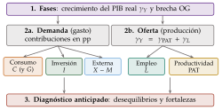
Fuente: Elaboración propia. Qué hay que ver: siempre el mismo orden; primero las fases (con el PIB y la brecha), después el motor por la demanda (contribuciones) y por la oferta (empleo frente a productividad), y al final el diagnóstico que anuncia el resto del dictamen.
Qué hay que contestar: ¿en qué fase está la economía y desde cuándo? ¿Qué tira del crecimiento: la demanda interna o la externa; el empleo o la productividad? ¿Crece por encima o por debajo de su potencial?
Es la pregunta más larga y casi siempre aparece (en 13 de los 14 dictámenes de 2011 a 2026; no en 2025), casi siempre la primera (Asociación de Técnicos Comerciales y Economistas del Estado, 2026). Conviene llevarla muy preparada para que no consuma más tiempo del necesario. Unos preparadores recomiendan hacerla la primera, porque ordena todo lo demás; otros, dejarla para el final (antes de la de recomendaciones, si la hay), cuando ya se conoce bien la economía. En cualquier caso, sin pasarse del tiempo previsto: en la coyuntura nunca sobra tiempo.
I.1. Conceptos generales: el PIB
Qué es: el producto interior bruto (PIB) es el resultado final de la actividad productiva de las unidades residentes en un territorio: el valor de mercado de todos los bienes y servicios nuevos y finales producidos en ese territorio en un periodo (Parlamento Europeo y Consejo de la Unión Europea, 2013c) [ver tema 3.A.30].
Los 3 enfoques, que también son las 3 formas de descomponer el PIB en el análisis:
gasto (demanda): la suma de los empleos finales de los residentes, consumo final y formación bruta de capital, más las exportaciones y menos las importaciones, \[\mathrm{PIB}=C+I+G+(X-M),\] con \(G\) el consumo final de las administraciones públicas (la inversión pública va en \(I\));
producción (oferta): la suma de los valores añadidos brutos de los sectores o ramas de actividad, más los impuestos netos de subvenciones sobre los productos (que no se asignan a ninguna rama),1 \[\mathrm{PIB}=\sum\underbrace{\mathrm{VAB}}_{\text{producción}-\text{consumos intermedios}}+(\text{impuestos}-\text{subvenciones})_{\text{productos}} ;\]
renta: la remuneración de los asalariados, más los impuestos netos de subvenciones sobre la producción y las importaciones, más el excedente bruto de explotación y la renta mixta bruta, \[\mathrm{PIB}=\underbrace{W}_{\text{remuneración de los asalariados}}+\underbrace{(T-Sub)_{\text{prod. e import.}}}_{\text{impuestos netos}}+\underbrace{\mathrm{EBE}+\mathrm{RMB}}_{\text{beneficios y renta mixta}} .\]
De la producción a la renta de los residentes: la renta nacional bruta suma las rentas primarias netas recibidas del resto del mundo, y la renta nacional disponible bruta, además, las rentas secundarias (transferencias corrientes) netas: \[\mathrm{RNB}=\mathrm{PIB}+\mathrm{RP},\qquad\mathrm{RNDB}=\mathrm{RNB}+\mathrm{RS} .\] Cómo se leen sus diferencias está en el apartado I.3.
Problemas de medida: los mercados informales e ilegales se estiman a falta de datos; los servicios de las administraciones se miden por su coste, y es difícil saber el valor que añaden (un profesor, un médico); las cuentas no recogen las externalidades; algunas actividades suman al PIB aunque solo reparan el efecto de otras indeseables (prisiones, limpieza de la contaminación); y las mejoras de calidad de los productos son difíciles de medir [ver tema 3.A.30].
I.2. Diagnóstico y etapas del ciclo
La frase ejecutiva
El FMI, en los informes de las consultas del artículo IV, y el Banco de España, en su informe anual, empiezan con una frase que resume el estado de la economía (Fondo Monetario Internacional, 2026c; Banco de España, 2026b). Es una buena manera de empezar el dictamen.
Se limita a la situación actual (si hay previsiones, se mencionan sin más) y se escribe al final del examen, en un hueco que se deja antes de la primera respuesta, cuando ya se conoce bien la economía.
Ejemplo: el FMI abría así su evaluación de España en 2026: la economía española «siguió creciendo más que la zona del euro pese al impacto adverso de la guerra en Oriente Medio» (Fondo Monetario Internacional, 2026c).2
Una frase de diagnóstico completa encadena 3 ideas: dónde está la economía y qué la ha sostenido, qué la está frenando y qué riesgos tiene (un ejemplo del FMI sobre España, en el anexo B.2.1).
Tendencia y ciclo
Para dividir la serie en fases hay que separar 2 movimientos que el cuadro mezcla: la tendencia, que dice hacia dónde va la economía a largo plazo, y el ciclo, las oscilaciones alrededor de ella (gráfico 2) [ver tema 3.A.42].
Tendencia: el movimiento persistente a largo plazo de una serie. Hay variables sin tendencia y con ella; la tendencia es lineal si la variable crece en la misma cantidad cada periodo, y loglineal si es su logaritmo el que sigue una línea recta (crece a una tasa constante). Además, la tendencia es determinista si no cambia con el tiempo y estocástica si fluctúa por factores aleatorios, como los choques económicos.
Ciclo: el ciclo económico son las fluctuaciones de la actividad alrededor de su tendencia (las desviaciones del PIB respecto a ella), que se repiten en periodos relativamente cortos.
Tiene 2 puntos de giro, el pico (la cima, el máximo) y el valle (el fondo, el mínimo), y 2 fases: la contracción, del pico al valle (recesión si es grave; depresión o crisis si es mayor y más persistente), y la expansión, del valle al pico.
Una serie puede alejarse de su tendencia por un cambio estructural y no por el ciclo: un salto de nivel que no se deshace no es una recesión pasajera.
Frecuencia del ciclo: los ciclos no son periódicos, sino irregulares (aleatoriedad) y recurrentes (autocorrelación). Entender el ciclo sirve para prever el corto plazo; entender la tendencia, para el largo.
Estacionariedad: una serie estacionaria vuelve a su media tras un choque; una no estacionaria, no [ver tema 5.B.5]. Tendencias comunes: algunas variables comparten tendencia porque hay relaciones de equilibrio a largo plazo entre ellas; es difícil verlo a simple vista, y se contrasta con pruebas econométricas de cointegración.
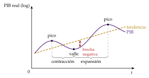
Fuente: Elaboración propia. Qué hay que ver: el ciclo es la oscilación del PIB alrededor de su tendencia; de pico a valle, contracción (recesión si es intensa); de valle a pico, expansión. La distancia vertical a la tendencia es la brecha de producción.
Las 4 fases del dictamen
En el dictamen se usan 4 fases, que se reconocen por el crecimiento del PIB real (\(\gamma_Y\)) frente al potencial (\(\gamma_{Y^p}\)) y por el signo de la brecha de producción (\(\mathrm{OG}\), apartado I.3):
recuperación: el PIB crece y más que el potencial, pero la brecha aún es negativa (se está cerrando);
expansión: la brecha es positiva y se sigue abriendo;
desaceleración: el PIB aún crece, pero menos que el potencial, y la brecha se reduce;
recesión: el PIB cae y la brecha se vuelve negativa.
Pasar de caer un 7 % a caer un 1 % no es una recuperación: mientras el PIB cae, la economía sigue en contracción; la recuperación empieza cuando vuelve a crecer.
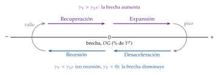
Fuente: Elaboración propia. Qué hay que ver: arriba, el PIB crece más que su potencial y la brecha avanza hacia la derecha (recuperación y expansión); abajo, crece menos o cae y la brecha retrocede (desaceleración y recesión). El paso por cero separa cada pareja de fases.
La forma de la recesión se describe con una letra: en V (caída y recuperación rápidas, como la de la pandemia), en U (estancamiento en el fondo), en W (recaída tras una primera recuperación) o en L (sin recuperación del nivel anterior).
Recesión es, como regla práctica, una caída del PIB real durante 2 trimestres seguidos; depresión, una caída de más del 10 % o una recesión de más de 3 años.3
Cómo se escribe: si el cuadro recoge más de un ciclo (por ejemplo, la crisis financiera y la de la COVID-19), se dice al principio, y cada etapa se divide en fases con el crecimiento del PIB y la brecha.
Visión de conjunto: lo atípico se señala como excepción («crecimiento sostenido entre 20xx y 20xx, salvo una ligera desaceleración en 20xx»), sin contar la serie año a año.
Hechos estilizados: cómo se mueve cada variable con el ciclo
Antes de explicar un dato raro, conviene saber qué es lo normal: cada variable tiene un patrón típico frente al PIB, y lo que se aparta de él es lo que hay que explicar. El comovimiento con el PIB se describe con 5 rasgos (gráfico 4):
dirección: procíclica, si crece cuando crece el PIB y cae cuando cae; contracíclica, al revés; acíclica, sin relación (se mide con la correlación entre la variable y el PIB);
volatilidad (amplitud): cuánto se desvía la serie de su tendencia; como los ciclos no coinciden exactamente, se mide con la varianza: una variable es más volátil que el PIB si su varianza es mayor;
adelanto o retraso: una variable se adelanta si describe ciclos como los del PIB pero antes, y se retrasa si los describe después (solo se habla de adelanto o retraso si es menor que medio ciclo);
persistencia: cuánto dura una desviación;
conformidad: alta si estas relaciones se mantienen en toda la muestra, baja si cambian (procíclica al principio y contracíclica después). Depende de la serie que dé el tribunal.
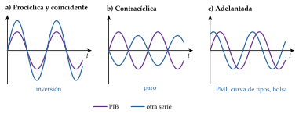
Fuente: Elaboración propia a partir de The Conference Board (2026). Qué hay que ver: arriba, si la otra variable se mueve en el mismo sentido que el PIB o en el contrario, si oscila más o menos y si gira antes o después; abajo, que los adelantados giran primero, los coincidentes (el PIB) entre 6 y 12 meses después y los retrasados entre 12 y 24 meses después de los adelantados, con ejemplos de cada grupo. Por eso los adelantados dicen hacia dónde van los demás.
Los patrones de las economías avanzadas están en la tabla 1. Los que más se usan en el dictamen:
el consumo es procíclico pero menos volátil que el PIB, y la inversión, varias veces más volátil: si en el cuadro el consumo oscila más que el PIB, algo raro pasa (sobrecalentamiento, un choque a los hogares);
las existencias explican buena parte de las caídas del PIB en las recesiones, aunque pesen poco;
la demanda externa neta es contracíclica, porque las importaciones caen con la renta;
el paro y la inflación van retrasados: siguen subiendo un tiempo después del giro del PIB.
| Variable | Dirección | Volatilidad frente al PIB | Adelanto o retraso |
|---|---|---|---|
| Consumo privado | procíclico | menor (duraderos, mayor) | contemporáneo |
| Inversión en equipo | procíclica | varias veces mayor | contemporánea o algo retrasada |
| Inversión en vivienda | procíclica | varias veces mayor | adelantada |
| Variación de existencias | procíclica | muy alta | contemporánea |
| Consumo público | acíclico (correlación cercana a 0); procíclico en muchos emergentes | depende del país | sin patrón claro |
| Importaciones | procíclicas | mayor (el comercio, 2-3 veces) | contemporáneas |
| Demanda externa neta | contracíclica | — | — |
| Empleo | procíclico | similar o algo menor | contemporáneo o algo retrasado |
| Tasa de paro | contracíclica | — | retrasada |
| Productividad del trabajo | procíclica (en España, a menudo contracíclica) | menor | algo adelantada |
| Salario real | débilmente procíclico o acíclico | mucho menor | sin patrón claro |
| Inflación | procíclica (contracíclica con choques de oferta) | — | retrasada |
| Tipos de interés a corto | procíclicos | — | retrasados |
| Pendiente de la curva de tipos | — | — | adelantada |
| Bolsa | procíclica | mucho mayor | adelantada |
Fuente: Elaboración propia a partir de Stock y Watson (1999), Blinder y Maccini (1991), Kaminsky, Reinhart y Végh (2004) y Estrella y Mishkin (1998), coherente con [ver tema 3.A.42].
Ejemplo de redacción: las fases del ciclo. «Nos encontramos ante un cuadro macroeconómico que podría recoger más de un ciclo económico, en la medida en que refleja el considerable impacto tanto de la crisis financiera anterior como de la crisis sanitaria.»
«La economía estaba operando a pleno rendimiento en 20xx. El choque de la crisis sanitaria ha frenado su crecimiento. Podemos distinguir 2 etapas: en primer lugar, una etapa previa a la pandemia, que puede dividirse en fases con la tasa de variación del PIB real, complementada con la brecha de producción: una primera fase de expansión, entre 20xx y 20xx, en la que la economía crece de forma sostenida con una brecha positiva, por lo que produce por encima de su potencial; y una segunda fase de desaceleración, entre 20xx y 20xx, en la que sigue creciendo, pero de forma más moderada, y la brecha se cierra. En segundo lugar, la etapa de la pandemia, iniciada en 20xx, que supone una ruptura del ciclo.»
I.3. Medidores
La idea: para dividir la serie se usa el crecimiento del PIB real, que el cuadro da siempre, y se completa con la brecha de producción, que no siempre está. Se elige el que dé fases más claras.
No siempre coinciden: un país puede crecer al 2 % con la brecha abriéndose hacia abajo si su potencial crece al 3 %. Si discrepan, se dice y se explica.
Crecimiento del PIB real
Qué mide: el ritmo de avance de la producción, sin el efecto de los precios.
Cómo se calcula: \(\gamma_{Y,t}=\frac{Y_t-Y_{t-1}}{Y_{t-1}}\times100\), con \(Y\) el PIB en volumen.
Umbral o referencia (orientativo, sin norma detrás): en una economía avanzada, negativo es contracción; entre el 0 y el 1 %, estancamiento; entre el 1 y el 2 %, crecimiento moderado, cerca del potencial de la mayoría de las avanzadas; entre el 2 y el 3 %, crecimiento por encima del potencial; desde el 3 %, crecimiento sólido. Las economías avanzadas crecieron un 2,0 % en 2025 y las emergentes y en desarrollo, un 4,5 % (Fondo Monetario Internacional, 2026d): en un emergente, un 3 % puede ser débil.
Cómo se lee:
el signo y el nivel dicen si crece y cuánto;
la variación (la «segunda derivada») dice si se acelera o se desacelera;
en los países en desarrollo las tasas son más altas y más volátiles, porque tienen menos estabilizadores automáticos.
Con qué se cruza: con la brecha, el empleo y la inflación.
Brecha de producción y PIB potencial
Qué mide: la brecha de producción (output gap) compara el PIB observado con el PIB potencial, el que se puede producir con los factores empleados con su intensidad normal y sin tensiones inflacionistas.4
Cómo se calcula: en porcentaje del potencial, \[\mathrm{OG}_t\equiv\frac{Y_t-Y^p_t}{Y^p_t}\times100 .\] El potencial no se observa: se estima con una función de producción (potencial del trabajo con la NAWRU, del capital y de la productividad total de los factores), como hacen la Comisión Europea, la OCDE y el FMI (Havik et al., 2014) [ver tema 4.B.4], o con un filtro estadístico, como el de Hodrick y Prescott, que extrae la tendencia de la serie (Hodrick y Prescott, 1997) [ver tema 3.A.42]. El filtro pide menos datos, pero su último tramo se revisa mucho.
Umbral o referencia: 0, la producción en su potencial.
Cómo se lee:
Negativa: producción por debajo del potencial, recursos infrautilizados (paro, capacidad ociosa) y presiones a la baja sobre la inflación.
Positiva: la demanda empuja por encima del potencial; aparecen cuellos de botella y riesgo de sobrecalentamiento e inflación.
Cercana a 0: paro y uso del capital en sus niveles normales e inflación estable. Es lo deseable.
Su variación, medida en puntos, dice si el PIB crece más o menos que el potencial: \(\Delta\mathrm{OG}_t\approx\gamma_{Y,t}-\gamma_{Y^p,t}\). «La brecha se cierra» o «se abre» (anexo B.2).
Con qué se cruza: si el cuadro da la brecha y el crecimiento, se deduce el crecimiento del potencial,5 \[\gamma_{Y^p,t}\approx\gamma_{Y,t}-(\mathrm{OG}_t-\mathrm{OG}_{t-1}),\] Si la economía crece con fuerza y la brecha no se cierra, el potencial crece mucho: no es un cuadro «débil». Al revés, cerrar la brecha creciendo poco no es buena señal: el potencial crece poco.
Cuidado: la brecha y el potencial se estiman con el crecimiento pasado y se revisan mucho; sirven poco en economías con cambios estructurales rápidos, y no conviene dividir el ciclo solo con ellos.
Tema: [ver tema 3.A.42] [ver tema 3.A.45] [ver tema 3.A.28] [ver tema 4.B.4].
Ejemplo de redacción: la brecha como indicador complementario. «La brecha de producción es un indicador complementario idóneo en esta economía. Aunque apenas varía entre 20xx y 20xx, el crecimiento del PIB aumenta en x,x puntos porcentuales entre esos años: el crecimiento potencial ha aumentado, por tanto, sensiblemente. Es un punto de inflexión muy relevante de la serie, como se verá a lo largo del análisis.»
PIB frente a renta nacional bruta
Qué mide: el PIB es lo que se produce dentro del país; la renta nacional bruta (RNB), lo que ganan sus residentes, dentro o fuera.
Cómo se calcula: la RNB es el PIB más las rentas primarias recibidas del exterior menos las pagadas al exterior. Las rentas primarias son las del trabajo (trabajadores transfronterizos), las de la inversión (beneficios, dividendos e intereses de la inversión directa, la de cartera y los préstamos) y algunos impuestos y subvenciones con la UE. Si se suman las transferencias corrientes netas (remesas, cooperación), se obtiene la renta nacional disponible (Parlamento Europeo y Consejo de la Unión Europea, 2013c).
Umbral o referencia: no hay; importa el signo y si la diferencia es grande y persistente.
Cómo se lee:
\(\mathrm{RNB}<\mathrm{PIB}\): el país paga al exterior más rentas de las que recibe. Es típico de un deudor neto (intereses de la deuda externa) o de un país con mucha inversión extranjera directa, cuyas multinacionales repatrían beneficios.
\(\mathrm{RNB}>\mathrm{PIB}\): acreedor neto (rentas de sus inversiones fuera) o país con muchos trabajadores en el extranjero.
Un salto puntual suele deberse a multinacionales que trasladan activos (patentes) o beneficios: el PIB sube sin que suba la renta de los residentes, como en Irlanda en 2015 (Eurostat, 2026e).
Con qué se cruza: con la cuenta de rentas primarias de la balanza de pagos, la posición de inversión internacional neta y la inversión directa (capítulo IV).
Tema: [ver tema 3.A.30] [ver tema 3.B.11] [ver tema 4.A.21].
Indicadores adelantados y de alta frecuencia
Qué miden: el cuadro macroeconómico es anual o trimestral y llega con retraso; estos indicadores son mensuales (o diarios) y algunos se anticipan al PIB. Dicen cómo está la economía ahora y hacia dónde va.
Los más habituales:
Índice de gestores de compras (PMI) de manufacturas y de servicios: un índice de difusión (cuántas empresas dicen que la producción, los pedidos o el empleo suben, bajan o siguen igual que el mes anterior). Por encima de 50, la actividad crece respecto al mes anterior, no que esté alta; por debajo, se contrae (S&P Global, 2025).
Indicador de sentimiento económico de la Comisión Europea (ESI) y los de confianza de consumidores y empresarios: su media de largo plazo es 100 (Comisión Europea, 2025b).
Pendiente de la curva de tipos (tipo a 10 años menos tipo a corto): si se invierte, suele anticipar una recesión (Estrella y Mishkin, 1998).6
Otros adelantados: bolsa, crédito nuevo, pedidos industriales, permisos de construcción.
Coincidentes: producción industrial, afiliación, ventas minoristas, consumo de electricidad.
Retrasados: tasa de paro, inflación subyacente, tipos de interés de los préstamos (The Conference Board, 2026).
Umbral o referencia: 50 en el PMI; 100 en el ESI; pendiente negativa en la curva de tipos.
Cómo se lee: importa la dirección y que varios coincidan. Un PMI que baja de 55 a 51 sigue indicando crecimiento, pero más lento. Si los indicadores mensuales caen mientras el PIB anual aún crece, la economía se está desacelerando.
Con qué se cruza: con el perfil cíclico («los indicadores de alta frecuencia apuntan a una desaceleración a finales de año») y con las previsiones del cuadro. La clasificación de las variables por su adelanto o retraso, con los desfases típicos (los adelantados giran primero; los coincidentes, entre 6 y 12 meses después; los retrasados, entre 12 y 24 meses después de los adelantados), está en el gráfico 4.
De los medidores, el tribunal ha pedido deducir el crecimiento del potencial o la brecha (2018 y 2021), explicar la diferencia entre el PIB y la RNB (2023 y 2026) y leer indicadores de alta frecuencia o de clima económico (2016, 2019 y 2024) (Asociación de Técnicos Comerciales y Economistas del Estado, 2026).
I.4. Demanda
La idea: el lado de la demanda explica la evolución del PIB por el enfoque del gasto: quién compra lo que se produce. Es lo primero que se mira, porque el cuadro siempre trae sus componentes.
Con \(C\) el consumo privado, \(I\) la inversión (formación bruta de capital), \(G\) el consumo de las administraciones públicas, \(X\) las exportaciones y \(M\) las importaciones [ver tema 3.A.30], \[Y_t=\underbrace{C_t+I_t+G_t}_{\text{demanda interna}}+\underbrace{X_t-M_t}_{\text{demanda externa neta}} .\] En la contabilidad nacional, \(G\) es solo el consumo público; la inversión pública está dentro de \(I\).
Qué hay que contestar: ¿cuál es el motor del crecimiento, la demanda interna o la externa? ¿Qué componentes explican cada fase y por qué?
Contribuciones al crecimiento: el motor
Qué mide: cuántos puntos del crecimiento del PIB aporta cada componente.
Cómo se calcula: restando a la identidad de la demanda la del año anterior y dividiendo por \(Y_{t-1}\),
\[\gamma_{Y,t}=\underbrace{\frac{C_{t-1}}{Y_{t-1}}\gamma_{C,t}+\frac{I_{t-1}}{Y_{t-1}}\gamma_{I,t}+\frac{G_{t-1}}{Y_{t-1}}\gamma_{G,t}}_{\text{contribución de la demanda interna}}+\underbrace{\frac{X_{t-1}}{Y_{t-1}}\gamma_{X,t}-\frac{M_{t-1}}{Y_{t-1}}\gamma_{M,t}}_{\text{contribución de la demanda externa}}\tag{1}\]
En palabras: el crecimiento del PIB es la suma de las contribuciones de los componentes de la demanda, y cada contribución es el peso del componente en el año anterior por su crecimiento: depende de los 2. Las importaciones restan. La derivación paso a paso está en el anexo A.3.1.
Unidades: las contribuciones se miden en puntos porcentuales, no en porcentaje. Si el PIB crece un 3 % y la demanda interna contribuye con 2 pp, no se puede decir que la demanda interna haya crecido un 2 %: de los 3 puntos de crecimiento, 2 se deben a la demanda interna y 1 a la externa.
Cuidado: con volúmenes encadenados la suma no es exacta, y las existencias también contribuyen (si el cuadro no las da, se suponen nulas). Si el cuadernillo da las contribuciones, se usan esas (Eurostat, 2026e).
Cómo se lee:
contribuciones positivas y parecidas de las 2: crecimiento equilibrado;
en las crisis de economías con fuerte demanda interna, la interna pasa a restar (es procíclica: caen el consumo y la inversión) y la externa a sumar (tiene un componente contracíclico), porque las importaciones caen con la renta, el resto del mundo puede haber sufrido menos y las empresas buscan fuera la demanda que les falta dentro;
si el sector exterior «toma el relevo» como motor en una crisis, hay que ver si suben las exportaciones o solo caen las importaciones: lo primero es una fortaleza; lo segundo, el reflejo de la caída de la renta;
ante un cambio de patrón, ¿es coyuntural (un auge del precio del petróleo en un exportador) o estructural?
Contribución real frente a saldo nominal: la contribución de la demanda externa se calcula en volumen, y el saldo comercial de la balanza de pagos, en valor. Pueden ir en sentido contrario por un efecto precio: si se encarece el petróleo importado, la contribución externa puede mejorar (se importa menos volumen) mientras el saldo comercial empeora (cada barril cuesta más). Cuando el cuadro muestra las 2 cosas a la vez, conviene decirlo para no parecer contradictorio.
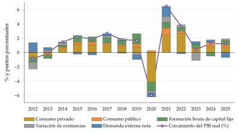
Fuente: Eurostat (2026e); zona del euro de 21 países, 2012-2025. Qué hay que ver: la demanda interna explica casi todo el crecimiento salvo en las crisis; en 2020 se hunde el consumo privado y en 2023 restan las existencias; la demanda externa neta suma en 2012-2013 y en 2021 y resta en 2025 (\(-0{,}7\) pp).
Ejemplo de redacción: descriptivo frente a perspicaz. Descriptivo (a evitar): «la contribución de la demanda interna es positiva en 20x1, negativa en 20x2 y vuelve a ser positiva en 20x3». Perspicaz: «la demanda interna contribuye con fuerza al PIB en las épocas de bonanza, pero se desploma en las recesiones, cuando la demanda externa amortigua en parte la caída; la demanda interna tiene, pues, un papel procíclico y la externa, uno contracíclico».
Ejemplo de redacción: el motor del crecimiento. «Para comprender mejor este patrón de crecimiento, estudiemos los componentes de la demanda. En una primera aproximación, podemos distinguir entre la demanda interna, que integra el consumo y la inversión privados y públicos, y la demanda externa, las exportaciones netas. En la fase alcista, el crecimiento está guiado por la demanda interna, lo que corroboran indicadores como una inflación alta y un descenso continuo del paro. La contribución de la demanda externa es débil e incluso negativa, lo que sugiere un cierto componente contracíclico.»
«Observamos una coincidencia temporal entre la aportación de la demanda externa y la fase recesiva: la demanda externa es el motor de la economía en la recesión, frente a una demanda nacional cuya aportación es significativamente negativa.»
«Durante los x primeros años la contribución de la demanda interna es positiva, pero a partir de 20xx se vuelve negativa y la demanda externa pasa a ser el motor del crecimiento.» Otras fórmulas, en el anexo B.2.
Consumo privado
Qué incluye: el gasto de los hogares (y de las instituciones sin fines de lucro a su servicio) en bienes y servicios: alimentación, ropa, alquiler, bienes duraderos. No incluye la compra de vivienda, que es inversión. Lo que más le afecta es cuánto pueden permitirse consumir los hogares y cuánto prefieren consumir ahora en lugar de más adelante.
Hechos estilizados (comprobar si se cumplen en el cuadro):
Peso: el componente más cuantioso, algo más de la mitad del PIB en la UE (53 % en 2025) y en torno a 2 tercios en EE. UU. (Eurostat, 2026e; Banco Mundial, 2026).
Volatilidad y comovimiento: el menos volátil de los componentes privados, porque los hogares suavizan el consumo según su renta permanente [ver tema 3.A.33]; procíclico y contemporáneo (tabla 1). Si en el cuadro es más volátil que el PIB, puede haber sobrecalentamiento e inflación de demanda.
Determinantes: la teoría relaciona el consumo con la renta disponible, los tipos de interés, la inflación esperada (que cambia el precio del consumo de hoy frente al de mañana) y, a veces, con la distribución de la renta o con si es permanente o transitoria [ver tema 3.A.33]. La evidencia empírica identifica estas relaciones, que conviene tener a la vista con su signo:
\[C=f\big(\overset{+}{Y^d_{\text{real}}},\,\overset{+}{\text{riqueza}},\,\overset{-}{r^{cp}},\,\overset{-}{\pi},\,\overset{?}{\pi^e},\,\overset{+}{\text{crédito}},\,\overset{-}{\text{deuda}},\,\overset{+}{N},\,\overset{?}{\text{edades}},\,\overset{-}{\text{incert.}},\,\overset{+}{\text{expect.}}\big)\]
y la renta disponible real, a su vez, depende de
\[Y^d_{\text{real}}=f\big(\underbrace{\overset{+}{L},\ \overset{+}{w}}_{\text{rentas del trabajo}},\ \underbrace{\overset{+}{r}}_{\text{rentas del capital}},\ \underbrace{\overset{-}{T}}_{\text{impuestos}},\ \underbrace{\overset{+}{\mathit{TR}}}_{\text{transferencias}}\big),\qquad w=W/\mathrm{IPC}\]
Renta disponible real (\(+\)), sin duda el principal. Depende del empleo (\(L\)) y del salario real (\(w\), que cae con la inflación actual y la esperada: los salarios nominales se corrigen con el IPC), de las rentas del capital, de los impuestos (sobre la renta y el patrimonio) y de las transferencias.7
Riqueza (\(+\)): precio de la vivienda en propiedad y de los activos financieros (efecto riqueza; discutible en los hogares de renta baja, que tienen pocos activos).
Tipo de interés real a corto plazo (\(-\)): es el coste de endeudarse y lo que rinde el ahorro (los nominales se corrigen con el IPC).8
Inflación (\(-\) la actual; ambiguo la esperada): la actual reduce la renta real; la esperada también, pero adelanta compras.9
Crédito (\(+\)), que depende también de la regulación financiera y de los límites prudenciales, y endeudamiento de los hogares (\(-\)).
Incertidumbre, volatilidad y paro esperado (\(-\)): por la aversión al riesgo, ahorro precautorio [ver tema 3.A.10].
Demografía: crece con la población (\(N\)); con la estructura de edades el efecto es ambiguo. Según la hipótesis del ciclo vital, ahorran sobre todo las personas en edad de trabajar (Modigliani y Brumberg, 1954): más población dependiente (joven o mayor) supone más consumo en proporción a la renta (Leff, 1969).
Expectativas (\(+\)): de crecimiento (pendiente de la curva de tipos), de paro (\(-\)), confianza de los consumidores y de los gestores de compras (PMI), crecimiento de la economía mundial. Una tasa de ahorro alta frena el consumo, y el índice de miseria de Okun (inflación más paro) resume 2 frenos.
Políticas futuras: si los hogares esperan más impuestos para pagar la deuda que se emite hoy, ahorran más y el estímulo fiscal pierde fuerza (equivalencia ricardiana, Barro (1974), [ver tema 3.A.39]); una bajada de tipos anunciada adelanta consumo.
Otro enfoque: si los hogares siguen la hipótesis de la renta permanente (Friedman, 1957) y tienen expectativas racionales, solo cambian su consumo cuando les llegan noticias que revisan esa renta. El consumo sigue entonces un paseo aleatorio, y el mejor pronóstico del consumo futuro es el presente (Hall, 1978).10
Un ejemplo de lectura: el consumo, la renta disponible y el ahorro de los hogares de la zona del euro desde 2012 (gráfico 6). En 2020 el ahorro se dispara por 2 motivos distintos: el ahorro forzoso (no se podía gastar en viajes, restaurantes u ocio) y el ahorro por precaución (miedo al paro). El forzoso se gasta en cuanto se reabre la economía; el precautorio, despacio. Por eso la «demanda embalsada» se libera más lentamente de lo que se espera: los servicios perdidos no se recuperan, el exceso de ahorro está sobre todo en los hogares de renta alta (que consumen una parte menor de lo que ganan), la incertidumbre y la inflación siguen pesando y parte de los hábitos cambian (Eurostat, 2026e).
Cómo se escribe: se vinculan los determinantes con los años: «entre los determinantes habituales del consumo, la renta disponible y el empleo evolucionan de modo que podrían explicar su caída en 20xx y su recuperación posterior».
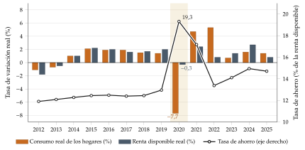
Fuente: Eurostat (2026e); elaboración propia de la renta disponible real. Qué hay que ver: en 2020 la renta disponible apenas cae (\(-0{,}3\) %) y el consumo se desploma (\(-7{,}7\) %): la tasa de ahorro sube al 19 % (ahorro forzoso y por precaución) y se gasta en 2021-2022. Desde 2023 el ahorro sigue alto (en torno al 15 %) y el consumo crece menos que la renta.
Ejemplo de redacción: el consumo privado. «El consumo privado es habitualmente el componente más cuantioso (más de la mitad del PIB en las economías avanzadas) y el menos volátil de los componentes privados de la demanda. Suele ser estable por su peso y por su fundamento microeconómico: depende de la renta permanente, y los hogares prefieren suavizarlo. Además, suele ser moderadamente procíclico y coincidente con el PIB.»
«El consumo privado de esta economía se muestra bastante estable, procíclico y coincidente con el PIB, como predice la teoría. Crece con fuerza durante la primera mitad de la serie y se modera después, al ralentizarse el PIB.»
Inversión
Qué incluye: 3 partidas (Parlamento Europeo y Consejo de la Unión Europea, 2013c):
la formación bruta de capital fijo (FBCF): adquisiciones menos cesiones de activos fijos por los productores residentes, más ciertos aumentos del valor de activos no producidos (como las mejoras de terrenos). Los activos fijos son activos producidos que se usan para producir durante más de un año.11 La FBCF es la suma del consumo de capital fijo (la pérdida de valor de los activos por el desgaste normal y la obsolescencia) y la formación neta de capital fijo.12
la variación de existencias: el valor de las entradas en existencias menos el de las salidas y el de las pérdidas corrientes de los bienes almacenados. Dependen de las expectativas y de los cambios transitorios de las ventas, y regulan la diferencia entre producción y ventas;
las adquisiciones menos cesiones de objetos valiosos: bienes no financieros que no se usan para producir ni consumir, que no se deterioran con el tiempo y que se adquieren y mantienen sobre todo como depósito de valor (joyas, obras de arte).
Por qué importa: la inversión es demanda hoy y oferta mañana, porque acumula capital y eleva el potencial [ver tema 3.A.45].
Hechos estilizados (comprobar si se cumplen):
Peso: en torno a una quinta parte del PIB; la FBCF fue el 21,5 % del PIB en la UE en 2025 (Eurostat, 2026e).
Volatilidad y comovimiento: el componente más volátil, por su dependencia de las expectativas (los animal spirits de Keynes (1936)), y procíclica; la residencial, adelantada (tabla 1, en los anexos).
Existencias: pesan poco, pero son muy volátiles y procíclicas: en las recesiones las empresas dejan de reponerlas y eso explica buena parte de la caída del PIB (Blinder y Maccini, 1991). A muy corto plazo amortiguan la demanda inesperada (si la demanda sube por sorpresa, primero caen las existencias), pero en el ciclo amplifican; una acumulación excesiva puede anunciar la fase bajista.
Determinantes, con su signo:
\[I=f\big(\overset{-}{r^{lp}},\ \overset{+}{\gamma^e_Y},\ \overset{+}{\mathrm{OG}},\ \overset{+}{D},\ \overset{+}{\mathrm{EBE}},\ \overset{-}{\pi},\ \overset{+}{\pi^e},\ \overset{+}{\text{crédito}},\ \overset{-}{\text{incertidumbre}},\ \overset{+}{\text{expectativas}}\big)\]
Positivos: crecimiento esperado del PIB y de la demanda interna y externa (\(D\): la evolución de la demanda guía las decisiones de producir e invertir); brecha de producción y grado de utilización de la capacidad, porque con la brecha positiva las empresas necesitan ampliar capacidad (acelerador); rentabilidad empresarial (excedente bruto de explotación, EBE), que sube con los precios de venta o con menores costes unitarios; si el cuadro no da el EBE, se aproxima con el margen, \(\gamma_{1+\mu}\approx\gamma_P-\gamma_{\mathrm{CLU}}\), con el deflactor del PIB, que es el precio relevante para las empresas (apartado II.1); incentivos fiscales; crédito; inflación esperada (abarata el tipo real); expectativas (animal spirits: confianza empresarial, estabilidad del cuadro macroeconómico, bolsa, curva de tipos).
Negativos: tipo de interés real a largo plazo;13 inflación actual (encarece los costes y aumenta la incertidumbre); costes de construcción y precio real del equipo; coste de otros insumos (energía, consumos intermedios), que encarece el uso del capital; incertidumbre económica y política, y volatilidad del tipo de cambio y de la inflación, que la alimenta (Fondo Monetario Internacional, 2022a).14
Expulsión (crowding-out): con déficit público alto y tipos al alza, el endeudamiento público puede detraer financiación a la inversión privada (expulsión financiera); si la inversión pública se superpone a la privada, la expulsión es real.
Si el cuadro no da indicadores de expectativas, se pueden mencionar como posible factor, con condicionales («es posible que el crecimiento del resto del mundo esté generando unas expectativas que expliquen la inversión»).
Ejemplo de redacción: la inversión. «La inversión se muestra, como es habitual, como el componente más volátil del PIB: la serie tiene una amplitud de x puntos porcentuales. Su evolución parece explicarse en parte por el flujo de crédito al sector privado y por el tipo de interés real a corto plazo (el nominal a corto menos la inflación, a falta del tipo a largo y de las expectativas de inflación): los años en que más cae la inversión coinciden con caídas del crédito privado, y los de crecimiento de la formación bruta de capital, con tipos reales negativos. Es posible que las expectativas también influyan en las decisiones de inversión.»
«La inversión se muestra volátil a lo largo de la serie: crece con fuerza en la primera mitad del ciclo y se reduce a partir de 20xx, anticipando la recesión.»
Los determinantes del consumo y de la inversión se preguntaron en 2023 y 2026 (Asociación de Técnicos Comerciales y Economistas del Estado, 2026): se contestan con la lista de determinantes, eligiendo los 2 o 3 que el cuadro permite ver y diciendo con condicionales cuáles faltan.
Consumo e inversión públicos
Qué incluyen: el consumo público son sobre todo los gastos de personal y las compras de bienes y servicios de las administraciones; la inversión pública, las infraestructuras y el equipamiento (dentro de la FBCF).
Cómo se leen: responden sobre todo a decisiones políticas. En las economías avanzadas el consumo público es acíclico o algo contracíclico (crece en las recesiones, como en 2020); en muchos emergentes es procíclico, porque el Estado gasta cuando entra financiación y recorta cuando se corta (Kaminsky, Reinhart y Végh, 2004). Si sube con fuerza en una recesión, lo probable es una respuesta discrecional, que se analiza en la pregunta de política fiscal (apartado V.3).
La inversión pública suele incluirse en la inversión en construcción. Puede arrastrar a la privada (infraestructuras que la hacen rentable) o expulsarla: por superposición (expulsión real) o porque el endeudamiento público detrae financiación (expulsión financiera).
Hay poco que contar salvo que se vea algo raro: su peso depende del papel del sector público en esa economía, y en general solo puede decirse que refuerzan o compensan a los demás componentes. Si es relevante, se relacionan brevemente con el déficit y la deuda.
Ejemplo de redacción: consumo e inversión públicos. «Los otros 2 componentes de la demanda nacional, el consumo y la inversión públicos, pertenecen al ámbito de la política fiscal y se analizarán con más detalle en la pregunta correspondiente. Baste señalar aquí que la inversión pública muestra un comportamiento algo errático y el consumo público, tasas de variación moderadas; llama la atención el fuerte crecimiento de ambos en 20xx, el año de la crisis, probablemente con una intención contracíclica.»
Demanda externa
En el perfil cíclico se comenta en 1 o 2 frases: su contribución y si la explican las exportaciones o las importaciones. Si faltan los datos de bienes y servicios, se usa la balanza comercial, diciéndolo. Sus determinantes (las funciones de exportaciones e importaciones) se analizan en el sector exterior (apartado IV.1); el comercio mundial, más volátil que el PIB, en el gráfico 7.15
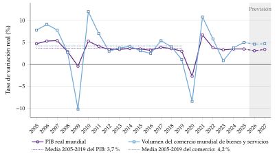
Fuente: Fondo Monetario Internacional (2026d); 2026 y 2027, previsiones. Qué hay que ver: el comercio es más volátil que el PIB (cae un 10 % en 2009 y un 8 % en 2020); antes de 2012 crecía bastante más que el PIB y desde entonces lo hace a un ritmo parecido.
Ejemplo de redacción: la demanda externa en el perfil cíclico. «Tras el análisis de la demanda interna, pasamos al de la evolución del PIB desde el punto de vista de la demanda externa, que integra exportaciones e importaciones. La demanda externa neta ha alternado, entre 20xx y 20xx, contribuciones negativas con aportaciones nulas o ligeramente positivas, con un comportamiento más errático que el de la demanda nacional. No hay que perder de vista que un factor importante de los flujos comerciales es la competitividad no precio (calidad, imagen de marca, diferenciación), sobre la que el cuadro no da datos.»
En el perfil cíclico, la demanda externa se comenta en 1 o 2 frases; sus determinantes, la competitividad y la balanza de pagos van en la pregunta del sector exterior. Así se evita contar 2 veces lo mismo.
I.5. Oferta
La idea: el lado de la oferta explica el PIB por el enfoque de la producción. A corto plazo la economía depende de la demanda; a largo plazo, de la oferta. Da 2 ideas: si se crece con productividad o con más factores, y qué sectores tiran.
La oferta se pregunta menos que la demanda (2013, 2014 y 2024; el sector petrolero en 2016 y 2025) (Asociación de Técnicos Comerciales y Economistas del Estado, 2026), pero un par de frases sobre empleo frente a productividad y sobre los sectores completan cualquier perfil cíclico.
Motor de crecimiento: productividad o acumulación de factores
Qué mide: si el crecimiento se basa en mejoras de la productividad o en más trabajo y capital.
Cómo se calcula: con una función de producción \(Y=F(A,K,L)\), la contabilidad del crecimiento descompone \[\gamma_Y=\gamma_A+\alpha\,\gamma_K+(1-\alpha)\,\gamma_L,\] con \(\alpha\) la participación del capital en la renta y \(\gamma_A\) el crecimiento de la productividad total de los factores [ver tema 3.A.45]. Como el cuadro casi nunca da el capital ni la productividad total, se usa la productividad aparente del trabajo (PAT), \(\mathrm{PAT}=Y/L\):
\[\gamma_{\mathrm{PAT}}=\gamma_Y-\gamma_L\quad\Longleftrightarrow\quad\gamma_Y=\gamma_{\mathrm{PAT}}+\gamma_L\]
Cómo se lee:
crecimiento con empleo y PAT estancada: patrón extensivo (más factores);
crecimiento con PAT al alza: patrón intensivo, más sostenible, porque a largo plazo solo la productividad eleva la renta por habitante;
cuidado: si el empleo cae más que el PIB, la PAT «sube» de forma espuria (se destruye el empleo menos productivo), y la causalidad entre productividad y ciclo es difícil de establecer: mejor no concluir que la expansión se debe a un choque de productividad.
Con qué se cruza: con el empleo, las horas y los CLU (apartado II.1) y con la brecha: si la economía crece y la brecha no se cierra, el potencial crece (apartado I.3).
Tema: [ver tema 3.A.45] [ver tema 3.A.43] [ver tema 4.A.29].
Ejemplo de redacción: empleo frente a productividad. «La variación del crecimiento desde la óptica de la oferta puede descomponerse en la de la acumulación de factores y la de su productividad. A falta de datos agregados, la aproximaremos con el mercado de trabajo, descomponiendo el crecimiento en el del empleo y el de la productividad aparente del trabajo. En 20xx-20xx el motor sería el empleo; en 20xx-20xx dominan los aumentos de la productividad aparente, que tiene una tendencia creciente a lo largo de la serie. Sin embargo, sería poco prudente concluir que la fase alcista está guiada por un choque de productividad, porque con la productividad aparente es difícil establecer la dirección de la causalidad.»
Sectores
Otro enfoque: proyectar la producción de cada sector por separado y obtener el crecimiento del PIB real como la media de los crecimientos sectoriales ponderada por su peso.
Qué se mira: la evolución del valor añadido bruto (VAB) de cada sector y su peso, con 4 preguntas: ¿cambia la estructura productiva (industrialización, terciarización)?, ¿qué factores usa con intensidad cada sector (trabajo, capital, I+D, energía)?, ¿tira del resto (eslabonamientos)?, ¿genera externalidades (como la industria aeronáutica)?
Rasgos de cada sector:
Primario: en general acíclico; intensivo en trabajo; baja elasticidad-renta; protección y subvenciones; más peso cuanto menos desarrollado el país [ver tema 4.A.4].
Energía y materias primas: precios fijados en los mercados mundiales (inflación importada en un importador), subvenciones o impuestos, efecto sobre la balanza comercial, capacidad de refino (a menudo con inversión extranjera) [ver tema 4.A.5].
Construcción: grandes eslabonamientos hacia atrás, intensiva en trabajo poco cualificado, maduración larga, oferta fija a corto plazo, demanda condicionada por la demografía y por su carácter de inversión; riesgo de burbuja, fuerte efecto riqueza y simbiosis con el sector financiero (círculos virtuosos o viciosos con el crédito) [ver tema 4.A.11].
Industria: menos intensiva en trabajo; ver su relación con las exportaciones y, en un país en desarrollo, si hay una estrategia de industrialización orientada a la exportación [ver tema 4.A.9].
Servicios: muy heterogéneos, de alto y bajo valor añadido y a menudo no comercializables; el turismo depende de la movilidad y suele concentrar empleo joven, temporal y poco cualificado [ver tema 4.A.13].
Tamaño de las empresas: un tejido muy atomizado hace al país más vulnerable a las crisis y limita la innovación, la internacionalización y la financiación, y con ello la productividad. Un ejemplo de redacción sobre un sector dominante y el tejido productivo está en el anexo B.2.1.
Un sector dominante: petróleo y materias primas
Si un sector (petróleo, materias primas, turismo) pesa mucho en el VAB, en las exportaciones o en los ingresos públicos, su precio mueve todo el cuadro: el PIB, la inflación, el saldo exterior y las cuentas públicas.
Qué hay que mirar: el peso del sector en el VAB, en las exportaciones y en los ingresos públicos, y el precio internacional, en dólares (gráfico 8).
Canales de un cambio del precio del petróleo:
PIB y precios: en un exportador, una subida eleva la renta y la inversión del sector y el deflactor del PIB más que el IPC (mejora la relación real de intercambio); en un importador, sube el IPC (inflación importada) y baja la renta disponible.
Sector exterior: la balanza de bienes y la cuenta corriente siguen al precio; con tipo flexible, la moneda del exportador se aprecia.
Cuentas públicas: regalías e impuestos sobre el sector (exportador) o subvenciones a los combustibles; los ingresos se vuelven volátiles y procíclicos.
Riesgos: la enfermedad holandesa, en la que el auge del sector aprecia el tipo de cambio real y expulsa a otros sectores exportadores (Corden y Neary, 1982), y una política fiscal procíclica, que gasta en el auge y recorta en la caída (Kaminsky, Reinhart y Végh, 2004).
Recomendaciones: un fondo soberano o una regla fiscal estructural que ahorre los ingresos extraordinarios, diversificar la producción y las exportaciones, y retirar poco a poco las subvenciones a los combustibles con ayudas focalizadas.
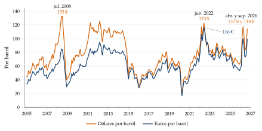
Fuente: U.S. Energy Information Administration (2026); en euros con el tipo de referencia del BCE (Banco Central Europeo, 2026b). Qué hay que ver: los grandes picos, 2008 (133 dólares), 2011-2012 (125 dólares en marzo de 2012), 2022 (123 dólares; en euros, 116, por la depreciación del euro) y 2026 (117 dólares en abril y 114 en septiembre, por el conflicto de Oriente Medio).
I.6. Anticipar el diagnóstico
La idea: si está claro y da tiempo, la respuesta del perfil cíclico se cierra con un diagnóstico general que anuncia lo que se desarrollará después. Se deja hueco y se escribe al final.
Cómo se escribe: «como se verá, parece tratarse de una economía avanzada cuyo crecimiento se ha apoyado en la demanda interna, pero que presenta desequilibrios como un déficit exterior persistente y una deuda pública elevada, de modo que su cuadro macroeconómico tiene una salud mejorable».
Los problemas estructurales son más difíciles de ver en los datos que los coyunturales. Por eso se formulan con condicionales y apoyados en 2 o 3 datos (crecimiento potencial bajo, productividad estancada, paro persistente).
Economía avanzada o emergente: qué cambia en el análisis
Sin intentar adivinar el país, hay rasgos que cambian la lectura: crecimiento potencial y volatilidad, inflación y traspaso del tipo de cambio, peso de las materias primas, política fiscal procíclica, deuda en divisas, riesgo de frenazo súbito de capitales y sistema financiero poco profundo (tabla 2). Como referencia, en 2025 las economías avanzadas crecieron un 2,0 % con una inflación del 2,5 % (Fondo Monetario Internacional, 2026d); la renta per cápita era de unos 90.000 dólares en EE. UU., 61.000 en Alemania y 39.000 en España (Fondo Monetario Internacional, 2026d); y el sector primario pesaba un 1,8 % del VAB de la UE, frente a más de una cuarta parte del PIB en los países de renta baja (Eurostat, 2026f; Banco Mundial, 2026).
Ojo con los países exportadores de petróleo, con rentas per cápita altas y rasgos de emergente.
| Economía avanzada | Economía emergente o en desarrollo | |
|---|---|---|
| Crecimiento | potencial del 1-2 %; menos volátil | potencial mayor (4-6 %); más volátil (menos estabilizadores automáticos) |
| Inflación | cerca del objetivo (2 %) | más alta y volátil; mayor traspaso del tipo de cambio |
| Estructura productiva | servicios en torno a 3 cuartas partes del VAB; primario pequeño | más peso de la agricultura y de las materias primas; dependencia de un sector |
| Política fiscal | contracíclica o acíclica; deuda en moneda propia | a menudo procíclica; ingresos bajos (informalidad); deuda en divisas |
| Política monetaria | tipos de interés y objetivo de inflación creíble | a veces agregados o tipo de cambio; posible dominancia fiscal |
| Sector exterior | déficits financiables con inversión directa y de cartera | riesgo de frenazo súbito de capitales; remesas; reservas como seguro |
| Sistema financiero | profundo, con mercados de capitales | bancarizado y poco profundo; préstamos en divisas |
| Estabilidad macroeconómica | inflación controlada y cuentas públicas saneadas | sistema financiero débil (prima de riesgo alta, poca credibilidad, fuertes variaciones de M3, monetización del déficit) y tipos de interés altos |
| Demografía | envejecimiento | transición demográfica inacabada |
| Otros rasgos | índice de desarrollo humano alto; economía sumergida pequeña; gasto público con mucho peso | índice de desarrollo humano bajo; economía sumergida grande; gasto público con poco peso; financiación con remesas o con exportaciones de materias primas |
Fuente: Elaboración propia a partir de Kaminsky, Reinhart y Végh (2004), Calvo (1998), Calvo y Reinhart (2002) y Eichengreen, Hausmann y Panizza (2005).
Desequilibrios y fortalezas típicos
Los desequilibrios que más se repiten en los dictámenes, con el indicador que los delata:
Débil crecimiento o recesión: PIB real que crece poco o cae; crecimiento potencial bajo.
Demanda interna anémica: consumo privado que apenas crece.
Inflación y sobrecalentamiento: brecha positiva persistente, inflación alta, consumo que crece mucho, caída brusca de existencias y salto de la penetración de importaciones.
Mercado de trabajo deficiente: paro alto y persistente, CLU crecientes.
Déficit y deuda públicos: altos, persistentes o con trayectoria insostenible.
Déficit por cuenta corriente y deuda externa: altos y persistentes, con pérdida de competitividad, exceso de absorción, ahorro escaso o déficit público.
Riesgos en el sistema financiero: prima de riesgo alta, endeudamiento privado y público alto, morosidad, racionamiento del crédito.
Estructura sectorial desequilibrada: dependencia de un sector (inmobiliario, energético, materias primas).
Las fortalezas son su reverso (tabla 20, en el anexo D.8). Cada uno se desarrolla en su bloque, y la recomendación tipo para cada desequilibrio está en el apartado VI.2.
Recapitulación: el perfil cíclico se resuelve con 3 piezas que se repiten en todos los dictámenes: las fases (con el crecimiento y la brecha), el motor (contribuciones por el lado de la demanda y, si hay datos, empleo frente a productividad por el de la oferta) y un diagnóstico anticipado. Una vez situada la economía en el ciclo, pasamos a los mercados de factores, donde el crecimiento se traduce en empleo, salarios y crédito.
II. Mercados de factores
La conclusión por adelantado: en los mercados de factores se ve si el crecimiento es sostenible. En el de trabajo, si crea empleo, qué tipo de paro hay y si los salarios siguen a la productividad; en el de capitales, si el crédito, la deuda, la banca y los precios de los activos acumulan riesgos.
Desde el punto de vista macroeconómico, el trabajo es, junto con el capital, uno de los 2 factores de producción (la tierra se suele incluir en el capital).
II.1. Mercado de trabajo
Qué hay que contestar: ¿cuánto empleo crea el crecimiento? ¿Qué tipo de paro hay? ¿Los salarios siguen a la productividad? ¿Es flexible y competitivo el mercado de trabajo?
En el mercado de trabajo suelen pedirse cosas muy concretas: definir la tasa de actividad y leer la curva de Beveridge (2023), calcular la productividad y los CLU (2011, 2016, 2018, 2019 y 2021), valorar la ley de Okun y la curva de Phillips (2021), el efecto de endurecer los visados de trabajo (2020), de subir el salario mínimo (2019) o de la demografía (2026) (Asociación de Técnicos Comerciales y Economistas del Estado, 2026). Conviene contestarlas al principio de la respuesta, con un rótulo, para que el tribunal las encuentre al oírlas en la lectura.
Indicadores de cantidad
Qué miden: la población activa son quienes, en edad de trabajar, trabajan o buscan empleo activamente; los ocupados, todas las personas, asalariadas o por cuenta propia, que participan en una actividad productiva; los parados, los activos que no tienen trabajo y lo buscan activamente.
Cómo se calculan: con la notación de la Encuesta de Población Activa, \(L\) ocupados, \(U\) parados, \(A=L+U\) activos y \(P_{16}\) población de 16 y más años [ver tema 4.A.1],
\[\text{tasa de actividad}=\frac{A}{P_{16}},\qquad\text{tasa de empleo}=\frac{L}{P_{16}},\qquad u=\frac{U}{A}\]
Cuidado con la edad: el INE calcula las tasas sobre la población de 16 y más años (incluye a los jubilados), y Eurostat y la OCDE, sobre la de 15 a 64 años. Con la misma definición, la tasa de actividad de España (74,9 % en 2025) ya no está por debajo de la media de la OCDE (73,9 % en 2024); sobre la población de 16 y más años es del 58 %, por el peso de los mayores (OCDE, 2026a; Eurostat, 2026b; Instituto Nacional de Estadística, 2025). Solo se comparan tasas con la misma definición.
Otras medidas: la tasa bruta de actividad (activos sobre población total) mezcla la participación con la estructura de edades; el factor demográfico (población en edad de trabajar sobre la total) encaja en la descomposición \(Y/N=(Y/L)(L/A)(A/P_{16})(P_{16}/N)\) [ver tema 4.A.30].
Umbral o referencia: el cuadro de indicadores del procedimiento de desequilibrios macroeconómicos alerta con un paro superior al 10 % y con una caída de la tasa de actividad de más de 0,2 puntos en 3 años (Comisión Europea, 2025a). Como regla práctica (orientativa), un paro del 3-6 % suele considerarse pleno empleo en las economías avanzadas (Organización Internacional del Trabajo, 2019).16
Cómo se lee:
la tasa de actividad depende de la demografía, de la incorporación de la mujer, de los años de estudio y de los incentivos (jubilación, prestaciones, fiscalidad), y es importante para la sostenibilidad del Estado del bienestar;
la variación del empleo es la creación menos la destrucción de empleo: hay que mirar a partir de qué crecimiento del PIB se crea empleo y con qué elasticidad;
el empleo y el paro pueden subir a la vez si llegan más activos (inmigración) de los que encuentran trabajo, y bajar a la vez si se destruye empleo pero se van aún más activos (emigración de parados, que contiene el paro pero puede suponer una fuga de cerebros). La inmigración eleva primero el paro y después el crecimiento potencial;
efecto desánimo: si el paro baja porque cae la población activa, y no porque sube el empleo, no es una buena noticia: puede haber trabajadores desanimados que han dejado de buscar empleo y que la estadística ya no cuenta como parados (Instituto Nacional de Estadística, 2025). Un paro que baja sin que suba el empleo hay que leerlo con la tasa de actividad al lado;
en la pandemia el empleo y el paro apenas reflejaron la caída del PIB por 3 razones: los esquemas de mantenimiento del empleo amortiguaron los despidos, las estadísticas no cuentan como parados a sus trabajadores y creció el empleo público (sanidad y educación). El gráfico 9 lo muestra para la zona del euro, y un párrafo del BCE que lo comenta está en el anexo B.2.1.
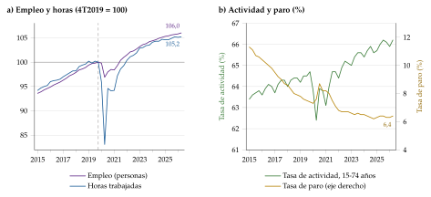
Fuente: Eurostat (2026c, 2026a, 2026i). Qué hay que ver: en la pandemia el empleo apenas cayó (esquemas de mantenimiento del empleo) y el ajuste se hizo con las horas; hoy el empleo supera en un 6 % el nivel de 2019 y las horas solo en un 5 % (baja la jornada media); el paro, del 6,4 % a mediados de 2026, está cerca de su mínimo.
Productividad
Qué mide: la productividad aparente del trabajo, \(\mathrm{PAT}=Y/L\), es lo que produce cada ocupado (o cada hora, si el cuadro da horas); es una aproximación a la productividad marginal, que no se observa.
Cómo se calcula: \(\gamma_{\mathrm{PAT}}=\gamma_Y-\gamma_L\) (apartado I.5). Con horas trabajadas, el PIB por persona en edad de trabajar se descompone en PIB por hora y horas por persona (gráfico 10).
Cómo se lee: la productividad del trabajo no refleja solo las capacidades y el esfuerzo de los trabajadores, sino también el capital y la tecnología con que trabajan. Crece por intensificación del capital (más capital físico por trabajador, gracias a la inversión neta), por inversión en capital intangible (innovación, cambios organizativos, I+D) o por progreso técnico (sube la productividad total de los factores). Si cae el empleo menos productivo, la PAT sube sin que nadie trabaje mejor. A largo plazo, la productividad es la que eleva la renta per cápita y los salarios reales.
El empleo se ajusta con retraso (acaparamiento de trabajo, labour hoarding): contratar y despedir cuesta, así que en una recesión las empresas retienen plantilla y reducen horas, y en la recuperación suben primero las horas y después contratan, cuando la demanda parece estable. Por eso el empleo va algo retrasado respecto al PIB y la productividad aparente es procíclica: cae en la recesión (se produce menos con casi la misma plantilla) y repunta al principio de la recuperación (Biddle, 2014). Un año en que el PIB repunta sin empleo no es necesariamente un «milagro» de productividad.
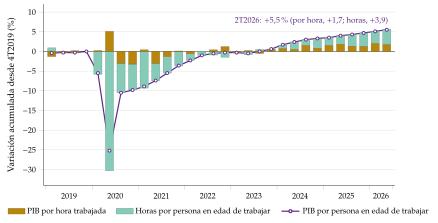
Salarios, costes laborales unitarios y margen
Qué mide: el coste laboral unitario (CLU) es lo que cuesta en salarios producir una unidad: la remuneración por asalariado (\(W\), nominal) dividida por la productividad. Es una remuneración ajustada por la productividad y la medida de competitividad en costes que más se usa. Los salarios reales se obtienen deflactando los nominales con el índice de precios adecuado, y a largo plazo su crecimiento suele seguir al de la productividad.
Cómo se calcula:
\[\mathrm{CLU}=\frac{WL}{Y}=\frac{W}{\mathrm{PAT}}\quad\Longrightarrow\quad\gamma_{\mathrm{CLU}}=\gamma_W-\gamma_{\mathrm{PAT}}\]
Como \(\mathrm{CLU}=P\cdot\frac{WL}{PY}\), el CLU real (\(\mathrm{CLU}/P\), con \(P\) el deflactor del PIB) es la participación de la remuneración de los asalariados en el PIB.17
Margen: si el precio es un margen \(\mu\) sobre el coste laboral unitario, \(P=(1+\mu)\,\mathrm{CLU}\), y el margen evoluciona como \[\gamma_{1+\mu}\approx\gamma_P-\gamma_{\mathrm{CLU}} .\] Los márgenes suben exactamente cuando caen los CLU reales. Es una aproximación: supone constantes los impuestos indirectos netos y el peso de los consumos intermedios importados. El excedente bruto de explotación es otra cosa, un nivel de rentas, y su crecimiento no es el del margen. Las 4 fórmulas encadenadas están en el gráfico 11.
Fuente: Elaboración propia. Qué hay que ver: cada paso usa el anterior; con el PIB real, el empleo, la remuneración por asalariado y el deflactor del PIB (\(P\)) se obtienen la productividad, los CLU nominales y reales y el margen, \(P=(1+\mu)\,\mathrm{CLU}\).
Umbral o referencia: el cuadro de indicadores del procedimiento de desequilibrios alerta si los CLU nominales por hora crecen más del 9 % en 3 años en la zona del euro (12 % fuera) (Comisión Europea, 2025a). Como referencia, que los salarios nominales crezcan como la productividad más el objetivo de inflación mantiene estables los CLU reales.18
Cómo se lee:
CLU nominales que crecen más que la inflación (CLU reales al alza): los salarios crecen más que la productividad o la productividad cae sin reflejo en los salarios. Anticipan presiones inflacionistas, menos margen y beneficio y, a medio plazo, sustitución de trabajo por capital y menos empleo.
CLU nominales que crecen más que en los socios: pérdida de competitividad-precio (apartado III.2).
CLU que crecen poco con paro alto: ajuste por salarios (devaluación interna).
CLU nominales que crecen menos que la inflación (CLU reales a la baja): no hay presiones inflacionistas desde los costes.
Por qué importa: como el trabajo es el mayor coste de producción, el CLU anticipa la tendencia de los costes, de los beneficios, de la bolsa y de la inflación: ceteris paribus, un aumento sostenido del CLU (i) sube los costes totales; (ii) reduce los beneficios y, si se extiende a toda la economía, la cotización de las acciones; y (iii) presiona a las empresas a subir precios. Si sube la participación de los salarios en la renta (\(s_L\)), cae la de los beneficios (\(s_K\)): por eso un aumento del CLU real se lee como una caída de la rentabilidad.
Por qué los nominales: la mayoría de las instituciones usan los CLU nominales por 2 razones: para compararlos con la inflación y anticipar presiones inflacionistas, y para analizar la competitividad exterior, porque el tipo de cambio efectivo real en términos de CLU depende de los salarios nominales del país frente a los de sus socios.
Efectos sobre los precios: hay que ver si el mercado de trabajo los transmite, por ejemplo con salarios indexados a la inflación pasada en lugar de a la productividad o con una negociación colectiva de nivel intermedio (sectorial), que según Calmfors y Driffill (1988) da peores resultados que la muy centralizada o la de empresa. Es el origen de los efectos de segunda ronda (apartado III.1).
Tema: [ver tema 3.A.27] [ver tema 3.A.28] [ver tema 4.A.22].
Demanda y oferta de trabajo
Demanda de trabajo (la creación de empleo): depende negativamente de los CLU reales (si los nominales suben al ritmo de los precios, el trabajo no se encarece para la empresa) y positivamente de los márgenes y del excedente empresarial, de la demanda interna y de las exportaciones; los factores institucionales (rigideces, problemas de emparejamiento) la condicionan.
Oferta de trabajo (los activos): depende del salario real y de la demografía y la inmigración, y la reducen las prestaciones mal diseñadas.
¿Es flexible el mercado de trabajo? Se ve comparando cómo se ajusta al ciclo: si el empleo y el paro (cantidades) se mueven mucho con el PIB y los salarios y los CLU (precios) apenas reaccionan, el ajuste recae en el empleo, una señal de rigidez salarial y de dualidad (los temporales absorben el choque). Un mercado flexible reparte el ajuste entre salarios, horas y empleo, y destruye menos puestos en las recesiones.
Ejemplo de redacción: el mercado de trabajo. «El mercado laboral muestra un comportamiento marcadamente procíclico: el paro se reduce con fuerza según avanza la fase alcista, y los salarios reales crecen de forma acelerada, lo que podría señalar un alto grado de tensión en el mercado de trabajo, corroborado por una brecha de producción positiva al final de la serie. El aumento de la productividad aparente podría estar guiando el de la demanda de trabajo, y el de los salarios reales, el de la oferta.» Más ejemplos (la demanda de trabajo y el paro persistente), en el anexo B.2.1.
Qué tipo de paro hay
La receta depende del diagnóstico, así que hay que identificar el tipo de paro (gráfico 12):
clásico: salarios reales demasiado altos para la productividad (rigideces: salario mínimo, cuña fiscal, poder de negociación); se delata por CLU que crecen mucho y de forma sistemática, o por salarios reales que suben mientras sube el paro;19
keynesiano: demanda insuficiente; consumo y demanda interna anémicos;
friccional o de desajuste: búsqueda y emparejamiento; vacantes altas con paro alto (curva de Beveridge alejada del origen);
de larga duración: se retroalimenta (pérdida de cualificación, desánimo, estigma) y es causa de histéresis.
Fuente: Elaboración propia. Qué hay que ver: cada tipo de paro deja una huella distinta en el cuadro (CLU, consumo, vacantes, duración) y pide una política distinta; las recetas detalladas están en las políticas de oferta (apartado V.5).
NAIRU: la tasa de paro compatible con una inflación estable. Si el paro está por debajo, la inflación tiende a acelerarse; si está por encima, a frenarse. No es un techo al empleo: mide a partir de qué paro aparecen tensiones salariales [ver tema 3.A.28]. En el examen se aproxima con el paro de los años en que la brecha de producción es nula, y ese valor sirve para toda la serie salvo que haya cambios estructurales. La Comisión estima una NAWRU en torno al 6-7 % en la zona del euro y al 12 % en España (Comisión Europea, 2026); si es alta, puede haber rigideces (cuña fiscal alta, negociación que protege a los ocupados, prestaciones mal diseñadas, desajuste de cualificaciones).
Histéresis: el paro de equilibrio depende del paro pasado, de modo que un paro alto y persistente tiende a quedarse. Tiene 3 causas: la dualidad entre insiders y outsiders, el paro de larga duración y la pérdida de capital instalado. Si la hay, las políticas de demanda tienen efectos a largo plazo [ver tema 3.A.28].
Secuelas de una recesión: más allá del paro, una crisis deja cicatrices en el potencial: menos capital (se invierte menos), menos capital humano (trabajadores que pierden cualificación o se desaniman) y menos productividad (menos I+D, recursos atrapados en empresas poco productivas). Son mayores si la recesión viene con una crisis financiera (Fondo Monetario Internacional, 2021b).
Ley de Okun y curva de Phillips
Relacionan el paro con el crecimiento y con la inflación, y sirven para cruzar el mercado de trabajo con el ciclo y con los precios [ver tema 3.A.28]:
la ley de Okun relaciona la variación del paro con el crecimiento por encima del potencial; en EE. UU., en torno a medio punto menos de paro por cada punto de crecimiento por encima del potencial (Okun, 1962): \[\tag{2} \Delta u_t\approx-0{,}5\,(\gamma_{Y,t}-\gamma_{Y^p,t}) .\] En el cuadro sirve para ver a partir de qué crecimiento baja el paro (si el PIB crece mucho y el empleo poco, la elasticidad es baja);
la curva de Phillips con expectativas relaciona la inflación con la distancia entre la tasa de paro y la NAIRU (Phillips, 1958):20
\[\pi_t=\pi^e_t-a\,(U_t-U^n)+\varepsilon_t\]
Cuándo usarlas: son razonables con un mercado de trabajo formal y asalariado y una serie larga y estable; no lo son con mucha informalidad, con esquemas de mantenimiento del empleo, con choques de oferta o cambios de régimen, y el coeficiente de Okun varía mucho entre países y en el tiempo (Ball, Leigh y Loungani, 2017). Si la curva de Phillips es muy plana, el paro dice poco de la inflación (anexo B).
Curva de Beveridge
Qué mide: la relación entre la tasa de vacantes y la de paro.
Cómo se lee: moverse a lo largo de la curva es el ciclo (en las expansiones, más vacantes y menos paro); desplazarse hacia fuera indica peor emparejamiento entre parados y puestos (desajuste de cualificaciones o geográfico, paro de larga duración) (Olivier Jean Blanchard y Diamond, 1989). Si las vacantes suben y el paro no baja, el problema es estructural, no de demanda. La ratio vacantes/parados resume la tensión del mercado: si sube, presiona sobre los salarios. El gráfico 13 compara España y la zona del euro, y un ejemplo de lectura, la curva española de 1994 a 2022, está en el anexo B.
Tema: [ver tema 3.A.26].
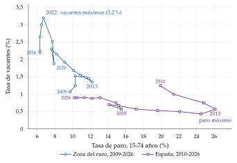
Fuente: Eurostat (2026h, 2026i); medias anuales. Qué hay que ver: la zona del euro se mueve a lo largo de su curva con el ciclo (máximo de vacantes, 3,2 %, con paro mínimo en 2022); España tiene muy pocas vacantes (en torno al 0,9 %) con mucho paro, una curva lejos del origen que apunta a problemas de emparejamiento.
Demografía, migración y salario mínimo
El envejecimiento, un cambio en la inmigración o una subida del salario mínimo afectan a la oferta de trabajo, a los salarios, al potencial y a las cuentas públicas; cómo se analiza cada uno está en el anexo B.
II.2. Mercado de capitales
Qué hay que contestar: ¿hay capital y financiación suficientes para crecer? ¿Llega el crédito a las empresas y los hogares, y a qué coste?
Capital físico
Sus indicadores son poco habituales en el cuadro (stock de capital, grado de utilización de la capacidad productiva). La inversión ya se ha analizado en el perfil cíclico (apartado I.4), y el análisis de la productividad del trabajo recoge parte del efecto del capital (por ejemplo, de las tecnologías de la información y la comunicación).
Crédito y financiación como factor
Qué se mira: el flujo de crédito nuevo a empresas y hogares, su coste (tipos de los préstamos) y el desarrollo del mercado financiero, que se aproxima por el diferencial entre los tipos de los préstamos y los de los depósitos: cuanto más estrecho, más eficiente la intermediación.
Fuentes de financiación: el crédito bancario, fundamental para las pymes y los hogares; los valores (bonos y acciones), para las empresas grandes; el capital riesgo, para las empresas emergentes; y la banca pública. Una economía muy bancarizada depende de la salud de sus bancos; una con mercados de capitales profundos reparte mejor el riesgo (Banco Central Europeo, 2026g).
Cómo se lee: un sistema financiero que funciona bien canaliza el ahorro hacia la inversión productiva; uno que funciona mal frena la productividad por 2 vías: da crédito a empresas zombis (con pérdidas, que sobreviven solo gracias al crédito) y deja sin financiar proyectos rentables. Un racionamiento del crédito (crédito que cae con demanda y tipos estables) frena la inversión y el consumo de bienes duraderos.
Con qué se cruza: con la inversión y el consumo (apartado I.4) y con el tono de la política monetaria (apartado V.1).
El endeudamiento, la banca, los riesgos (vivienda, bolsa, divisas) y la política macroprudencial se analizan en la pregunta de estabilidad financiera (apartado V.2), que es como se preguntan [ver tema 3.B.27] [ver tema 4.A.19].
Recapitulación: el mercado de trabajo dice cuánto empleo crea el crecimiento y si los costes siguen a la productividad (CLU); el de capitales, si hay financiación para invertir. Los CLU llevan directamente al bloque siguiente: la competitividad.
III. Competitividad
La conclusión por adelantado: la competitividad tiene 2 caras. La de precio, que depende de la inflación, los costes y el tipo de cambio, y la de no precio, que depende de la calidad, la diferenciación y los mercados. Una economía puede perder la primera y ganar cuota por la segunda.
III.1. Competitividad precio: precios e inflación
Qué hay que contestar: ¿está controlada la inflación? ¿Viene de dentro o de fuera, de la demanda o de los costes? ¿Es transitoria o persistente? ¿Qué política requiere?
La inflación se ha preguntado sola (sus factores, en 2025; su resistencia inicial y su cambio de tendencia, en 2026) o con la política monetaria (2016 y 2023, con el efecto base), y el tipo de cambio, con el traspaso (2026), la condición de Marshall-Lerner (2022), la compra de divisas por el banco central (2021) y los aranceles de Estados Unidos (2026) (Asociación de Técnicos Comerciales y Economistas del Estado, 2026).
Índices de precios
Qué miden: la inflación es el aumento sostenido y generalizado del nivel de precios, no el cambio de un precio relativo; la deflación, su caída. Para la política económica interesa más el cambio del nivel de precios que el nivel mismo: la tasa de inflación, la tasa de variación de un índice, \(\pi_t=(\mathrm{IPC}_t/\mathrm{IPC}_{t-1}-1)\times100\).
Un índice de precios refleja la media de los cambios proporcionales de los precios de un conjunto de bienes entre 2 periodos. Toma el valor 100 en un periodo base, y sus valores en los demás periodos dan el cambio porcentual medio de los precios frente al periodo base.21
Los índices especializados:
IPC: los precios de los bienes y servicios de consumo que compran los hogares, importaciones incluidas; en la UE, el armonizado (IAPC) es la referencia del objetivo del BCE;
deflactor del PIB: el cociente entre el PIB nominal y el PIB en volumen; recoge los precios de los bienes y servicios finales, nuevos y producidos dentro, exportaciones, inversión y servicios públicos incluidos, y excluye las importaciones. El IPC y el deflactor son las 2 medidas más habituales del nivel general de precios;
precios de producción (en España, el índice de precios industriales del INE): los precios que reciben los productores nacionales por lo que venden dentro o fuera; dicen si suben los precios de lo que produce el país, sea cual sea su destino;
precios de exportación y de importación (en España, de los productos industriales): sirven sobre todo para deflactar el comercio exterior; los de importación, además, anticipan la inflación, porque muchos insumos y bienes de consumo son importados;
costes laborales, clave porque son una parte importante de los costes de las empresas: crecimiento del salario medio, índice de coste laboral y CLU (apartado II.1);
precios de los activos: vivienda, bolsa, materias primas.
El IPC, un índice de Laspeyres.
Qué compara: el coste de una cesta representativa de bienes y servicios a los precios del periodo actual con el coste de esa misma cesta a los precios del periodo de referencia. Los precios se ponderan por el gasto de los hogares en cada grupo de bienes, para que el índice refleje lo que realmente compran; la cesta sale de lo que declaran gastar (en España, la Encuesta de Presupuestos Familiares, completada con la contabilidad nacional).
Fórmula: los precios actuales ponderados por las cantidades del periodo base, divididos por los precios del periodo base ponderados por las mismas cantidades, \[I_L\equiv\frac{\sum_{i=1}^{N}p_i^t\,x_i^0}{\sum_{i=1}^{N}p_i^0\,x_i^0}\times100=\frac{\vec{p}^t\cdot\vec{x}^0}{\vec{p}^0\cdot\vec{x}^0}\times100 .\]
Cesta fija: un Laspeyres puro usaría la cesta del periodo de referencia de los precios; en la mayoría de los IPC la cesta es de un periodo distinto. El del INE es un Laspeyres encadenado: cada año se compara con los precios de diciembre del anterior y las ponderaciones se actualizan cada año (base 2025 desde enero de 2026) (Instituto Nacional de Estadística, 2026). Se calcula al menos cada mes (en algunos países, cada trimestre), también para grupos de población o territorios y en versiones armonizadas, como el IAPC de la UE; cada país designa uno como índice general, la referencia de la política económica.
Sesgo: sobrevalora la inflación (sesgo de sustitución). Con el tiempo unos precios suben más que otros, y los consumidores compran menos de lo que se encarece y más de lo que se abarata. Como el IPC supone que siguen comprando la cesta del periodo base, da demasiado peso a los bienes que más se han encarecido: muestra más inflación de la que sufren los consumidores porque no recoge que sustituyen los bienes más caros por otros más baratos.
El deflactor del PIB, un índice de Paasche.
De dónde sale: cualquier variable nominal cambia por su volumen (cantidades) y por su precio. El PIB nominal crece por las 2 cosas, y el deflactor mide la parte que se debe a los precios: \[\text{Deflactor}_{\mathrm{PIB}}=\frac{\overbrace{\text{PIB nominal}}^{\text{a precios corrientes}}}{\underbrace{\text{PIB real}}_{\text{a precios del periodo de referencia}}}\times100 .\]
Qué compara: el valor de la producción nacional del periodo actual con esa misma producción a los precios del periodo de referencia.
Fórmula: es un índice de Paasche, con las cantidades de hoy, \[\text{Deflactor}_{\mathrm{PIB}}=\frac{\sum_{i=1}^{N}p_i^t\,x_i^t}{\sum_{i=1}^{N}p_i^0\,x_i^t}\times100=\frac{\vec{p}^t\cdot\vec{x}^t}{\vec{p}^0\cdot\vec{x}^t}\times100\equiv I_P .\]
Cesta variable: al contrario que el IPC, no usa una cesta fija: la cesta cambia con los patrones de consumo e inversión, y recoge que los agentes responden a los cambios de los precios relativos. Como el PIB en volumen se calcula encadenado, es un Paasche encadenado.
Sesgo: infravalora la inflación. Aunque es una medida completa de los precios de lo que se produce, no refleja bien el efecto de la inflación en el bienestar de los consumidores, porque no incluye las importaciones [ver tema 3.A.9] [ver tema 3.A.30] [ver tema 4.A.1].
IPC frente a deflactor e inflación importada
Aunque los 2 se usan como medida del nivel general de precios, no siempre se mueven juntos, por 2 diferencias (gráfico 14):
Cubren bienes distintos: el IPC, la cesta que compran los consumidores (importaciones incluidas); el deflactor, todos los bienes y servicios nuevos, finales y producidos dentro: excluye las importaciones e incluye las exportaciones (aísla el efecto externo), los bienes de inversión y los servicios públicos, que no están en el IPC.
Se construyen de forma distinta: el IPC mantiene la cesta fija (Laspeyres) y el deflactor deja que cambie (Paasche).
En la práctica suelen dar resultados parecidos; cuando se separan, dicen algo:
IPC que crece más que el deflactor: inflación importada (energía, alimentos, depreciación), porque las importaciones están en el IPC y no en el deflactor;
IPC que crece menos: suben más los precios de lo que el país produce y no consume, como las exportaciones (mejora de la relación real de intercambio, típica de un exportador de materias primas en un auge), los bienes de inversión o los servicios públicos. Ninguno de los 2 índices recoge los precios de los activos financieros.
El salario real del trabajador se deflacta con el IPC y el coste real para la empresa, con el deflactor: el deflactor aísla el efecto externo, pero refleja peor el poder adquisitivo.
Si los precios de importación crecen más que el IPC, se está importando inflación; si crecen menos, los bienes importados se abaratan frente a los nacionales, lo que resta competitividad a la producción nacional en su propio mercado.
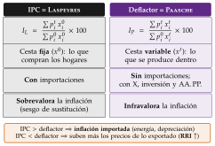
Fuente: Elaboración propia. Qué hay que ver: el IPC fija la cesta de consumo e incluye lo importado; el deflactor deja cambiar la cesta y solo mide lo producido dentro. Por eso un IPC por encima del deflactor apunta a inflación importada.
Inflación subyacente
Por qué hace falta: comparar el IPC de un periodo con el de otro es una medida rudimentaria de la inflación: no distingue los cambios permanentes de los transitorios, ni la inflación que viene de un componente volátil (la energía) de la que viene del resto de los precios.
Qué mide: la inflación subyacente (core inflation) quita de la general los componentes más volátiles para aislar el componente persistente y medir las presiones inflacionistas generales. Sirve para quitar ruido, localizar el origen de la inflación e informar mejor al banco central. Hay 3 tipos de medidas: las que excluyen siempre unos componentes (el INE excluye los alimentos no elaborados y los productos energéticos; Eurostat y el BCE siguen el IAPC sin energía ni alimentos, incluidos alcohol y tabaco), las que excluyen cada periodo los más volátiles (como las medias recortadas) y las que reponderan a la baja los componentes más volátiles. El cuadro puede traer cualquiera, y también el IPC nacional y el armonizado: hay que decir cuál se usa.22
Cómo se lee: la subyacente dice si un choque de oferta (la energía) se está extendiendo al resto de la cesta. El gráfico 15 lo muestra para la zona del euro: la energía empuja primero y la subyacente, que baja más despacio, delata la persistencia.
Efecto base: la tasa interanual compara con el mismo mes del año anterior; si entonces hubo una subida excepcional, la tasa baja cuando sale de la comparación aunque los precios no bajen. En logaritmos, la variación de la tasa interanual es la tasa mensual que entra menos la que sale: \[\tag{3} \pi^{12}_t-\pi^{12}_{t-1}\approx\pi^{m}_t-\pi^{m}_{t-12} .\]
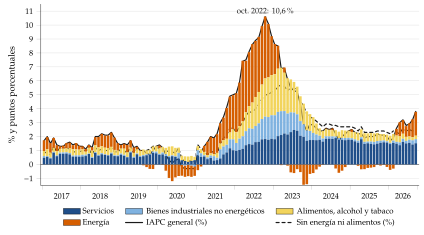
Fuente: Eurostat (2026g); tasas interanuales y contribuciones en puntos, enero de 2017-septiembre de 2026. Qué hay que ver: el brote de 2021-2022 empieza en la energía y se traslada a alimentos y bienes; la subyacente baja más despacio, por los servicios. En 2026 la energía vuelve a empujar (IAPC del 3,8 % en septiembre) con la subyacente estable en el 2,5 %.
¿Choque de oferta o de demanda?
Antes de buscar el origen de la inflación conviene clasificar el choque que la provoca:
un choque de demanda mueve el gasto (incertidumbre, caída de rentas, estímulos, cambio de preferencias) y lleva precios y cantidades en el mismo sentido: más demanda, más producción y más inflación;
un choque de oferta mueve los costes o la capacidad de producir (energía y materias primas, cuellos de botella, una catástrofe, el cierre de una ruta comercial, una reforma) y los lleva en sentido contrario: menos producción y más inflación (o, si es favorable, más producción y menos inflación).
Precios y cantidades en el mismo sentido, demanda; en sentido contrario, oferta: es la regla con la que se descompone la inflación en la parte de oferta y la de demanda (Shapiro, 2022). Con el cuadro anual solo se puede aplicar a grandes rasgos (inflación frente a crecimiento del PIB o de las importaciones), y siempre con condicionales.
Un choque puede convertirse en otro: la pandemia empezó como un choque de oferta (cierres, menos movilidad) y se convirtió en uno de demanda, porque los hogares ahorraron por fuerza y por precaución; y un choque energético de oferta reduce la renta real y acaba frenando la demanda.
De dónde viene la inflación
La clasificación sigue el «modelo del triángulo» de Gordon (2011): la inflación depende de la demanda, de los costes (choques de oferta) y de la inercia (gráfico 16) [ver tema 3.A.41].
De demanda (demand-pull): la demanda interna (desagregada por componentes) crece más que el PIB, la brecha de producción es positiva, el crédito y los agregados monetarios crecen con fuerza, hay estímulo fiscal o las expectativas de inflación suben.
De costes (cost-push): suben los salarios y los CLU (inflación incorporada, built-in), la energía y las materias primas, o se deprecia la moneda (más cuanto más pesan las importaciones); los márgenes amplios (el excedente bruto de explotación) señalan poca competencia, y los productores que miran al futuro suben precios si esperan más inflación.
Inercia: expectativas, contratos e indexación. Cuanto más indexados los salarios, las pensiones o los alquileres a la inflación pasada, más persiste un choque.
A largo plazo, la inflación es un fenómeno monetario: en las comparaciones entre países y décadas, la inflación sigue de cerca al crecimiento del dinero menos el crecimiento real, \(\pi\approx\gamma_M-\gamma_Y\) (McCandless y Weber, 1995). Sirve de contraste: un M3 que crece muy por encima del PIB nominal durante años es difícil de cuadrar con una inflación baja (salvo que cambie la demanda de dinero).
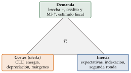
Fuente: Elaboración propia a partir de Gordon (2011). Qué hay que ver: los 3 vértices son los 3 orígenes posibles; en el dictamen se busca en el cuadro el indicio de cada uno (brecha y crédito; CLU, energía y tipo de cambio; expectativas e indexación).
Efectos indirectos y de segunda ronda
Un choque de costes (la energía) llega a la inflación en 3 pasos, y conviene distinguirlos porque piden respuestas distintas (Banco de España, 2022, cap. 4):
efectos directos: sube el precio de la energía que compran los hogares (carburantes, electricidad, gas), que está en el IPC;
efectos indirectos: las empresas trasladan el encarecimiento de sus insumos a los precios de lo que venden (transporte, alimentos, bienes industriales) para proteger sus márgenes;
efectos de segunda ronda: los trabajadores piden subidas salariales para recuperar el poder adquisitivo perdido, las empresas suben precios para defender los márgenes frente a esos salarios, y se arma una espiral de precios y salarios [ver tema 3.A.41].
Lo que preocupa al banco central es la segunda ronda, porque convierte un choque transitorio en inflación persistente. Se ve en la subyacente (sobre todo en los servicios), en los salarios negociados, en los CLU y en las expectativas de inflación.
Inflación desigual: la inflación no es igual para todos. Los hogares de renta baja dedican más gasto a la energía y a los alimentos, así que sufren más los choques de esos precios; como consumen casi toda su renta, recortan el consumo, y la sensación de pérdida alimenta la tensión social y la presión salarial (Charalampakis et al., 2022). La inflación percibida suele estar por encima de la oficial, porque los precios que más se ven (el súper, la gasolina) son los que más suben en estos episodios.
¿Transitoria o persistente? Qué política requiere
El último brote inflacionista (por qué la inflación fue baja durante años, por qué repuntó y la «última milla» de la desinflación) se analiza como caso en el anexo B.1.
¿Transitoria o persistente? Transitoria si se concentra en energía y alimentos con la subyacente contenida, salarios moderados, expectativas ancladas y materias primas que ya bajan. Persistente si la subyacente sube y se generaliza (servicios), los salarios y los márgenes se aceleran, la brecha es positiva, el paro está por debajo de la NAIRU y suben las expectativas.
Si la inflación es alta y persistente, lo natural es endurecer la política monetaria, pero depende del origen:
de demanda: subir tipos, y que la política fiscal no empuje en sentido contrario;
de oferta y transitoria, con expectativas ancladas: el banco central puede «mirar a través» del choque y vigilar los efectos de segunda ronda; si las expectativas se desanclan o la subyacente se contagia, tiene que subir tipos aunque el choque sea de oferta;
en una unión monetaria el país no tiene política monetaria propia: le quedan la fiscal y las de oferta;
con un choque de relación real de intercambio (un importador de energía que se empobrece), la pérdida de renta tiene que repartirse entre empresas, trabajadores, pensionistas y el Estado: un pacto de rentas evita que cada grupo intente trasladarla a los demás y desate la espiral (Banco de España, 2022).
Por qué preocupa la deflación: si se debe a una demanda insuficiente, los consumidores aplazan las compras esperando precios más bajos, las empresas posponen ventas e inversiones y aumenta el valor real de las deudas, lo que obliga a los deudores a recortar gasto (la deflación por deudas de Fisher (1933)); con tipos nominales en su límite inferior, además, el tipo real sube. Si se debe a la oferta (mejoras técnicas o abaratamiento de insumos que bajan los costes), puede ser «buena»: los precios bajan porque se produce más barato, y la renta real y la actividad crecen. Históricamente, muchas deflaciones de oferta convivieron con crecimiento (Bordo y Filardo, 2005) [ver tema 3.A.41].
Con deflación: política monetaria expansiva; si los tipos están en su límite inferior, expectativas, compras de activos y política fiscal expansiva.
Siempre: políticas que aumenten la competencia y reduzcan los márgenes.
El BCE combina el análisis económico con el análisis monetario y financiero, con un objetivo simétrico del 2 % a medio plazo (Banco Central Europeo, 2025b) [ver tema 3.A.36].
III.2. Tipo de cambio
Qué mide: el precio de una moneda en otra; el tipo real mide la competitividad-precio.
Cómo se calcula [ver tema 3.B.13]: el tipo real, el que importa para la competitividad, compara los precios de fuera, en moneda nacional, con los de dentro; el efectivo real (\(q^{ef}\)) lo hace con todos los socios, con los pesos \(\omega_i\) de su comercio:
\[q\equiv\frac{EP^*}{P},\qquad q^{ef}=\prod_i\Big(\frac{E_iP^*_i}{P}\Big)^{\omega_i}\]
Sus piezas:
nominal bilateral \(E\), en convención directa: unidades de moneda nacional por unidad de moneda extranjera; si \(E\) sube, la moneda nacional se deprecia;
efectivo: media geométrica de los bilaterales ponderada por el comercio con cada socio;
real, \(q\): el precio de los bienes extranjeros en términos de los nacionales; si sube, la producción nacional se abarata frente a la extranjera y la economía gana competitividad-precio. Con los CLU en lugar de los precios se obtiene la competitividad en costes.
Cuidado con las unidades: antes de leer el signo, hay que comprobar la convención. El BCE y el Banco de España publican los índices al revés (una subida es una apreciación y una pérdida de competitividad) [ver tema 4.A.22], y el cuadernillo puede traer cualquiera de las 2 convenciones: en 2026 el tribunal tuvo que rectificar las unidades del tipo frente al dólar (Asociación de Técnicos Comerciales y Economistas del Estado, 2026).
Umbral: el cuadro de indicadores del procedimiento de desequilibrios alerta con una apreciación real de más del 3 % en 3 años en la zona del euro (10 % fuera) (Comisión Europea, 2025a).
Cómo se lee: la competitividad-precio mejora por depreciación nominal o por una inflación menor que la de los socios (devaluación interna).
PPA, tipo de cambio real y convergencia
La paridad del poder adquisitivo (PPA) relativa es la referencia a medio plazo: el tipo de cambio nominal tiende a compensar la diferencia de inflación con los socios, \[\%\Delta E\approx\pi-\pi^* ,\] de modo que el tipo real tiende a volver a su media. En los datos lo hace muy despacio: las desviaciones tardan de 3 a 5 años en reducirse a la mitad (Rogoff, 1996). Un país con más inflación que sus socios y un tipo nominal estable pierde competitividad: su tipo real se aprecia.
Por qué se aprecia el tipo real: el tipo real puede descomponerse en el precio relativo de los bienes comercializables (que compiten fuera) y el de los no comercializables (servicios, construcción) en cada país. Una apreciación real puede ser:
convergencia: en los países que se acercan a la renta de los ricos, la productividad de los comercializables crece más deprisa, suben los salarios de toda la economía y, con ellos, el precio de los no comercializables (efecto Balassa-Samuelson) (Balassa, 1964; Samuelson, 1964); por eso los países ricos tienen niveles de precios más altos. No es una pérdida de competitividad preocupante;
exceso de demanda: si la apreciación viene de no comercializables que se encarecen por un auge del crédito o del gasto, sin ganancias de productividad, sí lo es.
Para distinguirlas se mira la productividad (¿crece más que en los socios?) y la demanda interna (¿crece más que el PIB?).
Traspaso (pass-through)
Qué es: la parte de una depreciación que pasa a los precios interiores, primero a los de importación y después al IPC. Un traspaso de 0,3 significa que una depreciación del 10 % eleva los precios un 3 %.
Cómo se detecta en el cuadro: comparando la depreciación con la inflación (sobre todo la de los bienes importados y la subyacente) de los años siguientes; si tras una depreciación fuerte la inflación apenas se mueve, el traspaso es bajo.
De qué depende: es mayor con inflación alta y poco creíble, con mucho peso de las importaciones en el consumo, con importaciones facturadas en dólares y en los emergentes (Taylor, 2000; Campa y Goldberg, 2005); menor si los exportadores extranjeros absorben la depreciación en sus márgenes, si se espera que sea transitoria y si el banco central es creíble. Con el comercio facturado en dólares, la depreciación encarece las importaciones pero apenas abarata las exportaciones a corto plazo (Gopinath et al., 2020).
Condición de Marshall-Lerner y curva J
Una depreciación real mejora la balanza comercial si, partiendo de comercio equilibrado, la suma de los valores absolutos de las elasticidades-precio de exportaciones e importaciones es mayor que 1 (Marshall, 1923; Lerner, 1944): \[|\varepsilon_{X,q}|+|\varepsilon_{M,q}|>1 .\]
A corto plazo las cantidades reaccionan poco y la balanza puede empeorar antes de mejorar: es la curva J (Magee, 1973). Detrás hay 2 efectos de signo contrario: el efecto valor (cada unidad importada cuesta más en moneda nacional, y eso es inmediato) y el efecto volumen (se exporta más y se importa menos, pero tarda, porque hay contratos firmados y cambiar de proveedor lleva tiempo). Al principio domina el primero; con el tiempo, el segundo.
Cómo se comprueba en el cuadro: si tras una depreciación real el saldo de bienes y servicios mejora en 1 o 2 años, con más volumen exportado y menos importado, la condición parece cumplirse; si empeora de forma persistente, no. Con prudencia: la renta interior y la exterior también cambian [ver tema 3.B.12].
Efectos de una devaluación para corregir el déficit exterior
Efecto positivo: mejora del saldo exterior a medio y largo plazo, si se cumple la condición de Marshall-Lerner.
Efectos negativos:
empeoramiento a corto plazo (curva J): los precios de las importaciones suben enseguida y las cantidades tardan en ajustarse por los contratos;
puede no mejorar ni a medio plazo si se comercia mucho con socios con los que se comparte un tipo fijo (como la unión monetaria), si el traspaso a los precios de exportación es bajo (empresas con poder de mercado o devaluación que se cree temporal) o si la inflación es tan alta que, pese a la depreciación nominal, el tipo de cambio real se aprecia;
inflación: suben los precios de las importaciones, se reduce la competencia exterior y, si los insumos importados se encarecen, suben los costes, los salarios (por indexación o por reivindicación) y de nuevo los precios, lo que puede exigir otra devaluación. El efecto es mayor cuanto más abierta la economía (más peso de los importados y de los comercializables), más flexibles los precios, más indexados los salarios y mayor el exceso de demanda de trabajo (Krugman, Obstfeld y Melitz, 2018; Campa y Goldberg, 2005);
encarece la deuda externa en divisas (el pecado original de muchos emergentes) (Eichengreen, Hausmann y Panizza, 2005);
paro friccional mientras los trabajadores pasan de los sectores que compiten con las importaciones a los exportadores;
más o menos empleo según la intensidad factorial: si el país importa bienes de equipo, al encarecerse la maquinaria las empresas sustituyen capital por trabajo.
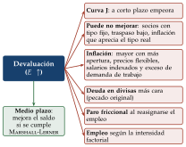
Fuente: Elaboración propia a partir de Krugman, Obstfeld y Melitz (2018). Qué hay que ver: un solo efecto positivo, a medio plazo y si se cumple la condición de Marshall-Lerner, frente a 6 costes o riesgos; por eso una devaluación nunca se recomienda sola.
Régimen cambiario e intervención
Regímenes: fijo (o caja de conversión), intermedios (bandas, deslizamiento, flotación sucia, con intervenciones para suavizar) y flotación libre. Con libertad de capitales, un tipo fijo obliga a renunciar a la política monetaria propia (trilema) [ver tema 3.B.15].
Cómo se detecta la intervención: por las reservas. Si caen mientras la moneda se deprecia, el banco central vende divisas para frenarla; si suben mientras se aprecia, las compra. Muchos emergentes que dicen flotar intervienen por miedo a flotar (Calvo y Reinhart, 2002).
Efecto de comprar divisas sobre la inflación: el banco central las paga con moneda nacional; si no la retira vendiendo bonos (intervención no esterilizada), aumentan la base monetaria y la presión inflacionista, y además frena la apreciación (más inflación importada). Si esteriliza, neutraliza el efecto monetario a costa de un coste financiero. El nivel adecuado de reservas se ve en el sector exterior (apartado IV.2).
Un tipo fijo como ancla contra la inflación: fijar el tipo de cambio ayuda a bajar una inflación alta, pero si la inflación converge despacio a la de los socios, el tipo real se aprecia mes a mes, la competitividad se pierde y la cuenta corriente empeora; es el origen de muchas crisis cambiarias (Krugman, Obstfeld y Melitz, 2018).
Defender un tipo fijo ante un ataque: subir los tipos de interés (encarece la deuda y deprime la actividad, y daña mucho si hay hipotecas a tipo variable, deuda a corto o bancos débiles), gastar reservas (se agotan) o, en último extremo, controlar las salidas de capital. Si el tipo fijo cae, lo urgente es anclar las expectativas con una política monetaria creíble.
Qué hacer ante una oleada de entradas de capital (que aprecian la moneda y alimentan el crédito):
dejar que se aprecie la moneda, si no está ya sobrevalorada;
intervenir y esterilizar: frena la apreciación, pero solo por un tiempo: mantiene altos los tipos que atraen más capital y tiene un coste cuasi fiscal, porque el banco central paga por los bonos que vende más de lo que rinden las reservas que compra (Calvo, 1991);
una política fiscal más restrictiva, que enfría la demanda sin subir los tipos;
como último recurso, temporal y excepcional, controles a la entrada (Fondo Monetario Internacional, 2012).
III.3. Competitividad no precio y política comercial
Qué mide: la capacidad de vender fuera por razones distintas del precio: calidad, diferenciación e imagen de marca, contenido tecnológico, servicio posventa, diversificación de productos y mercados, número y tamaño de las empresas exportadoras.
Cómo se aproxima (casi nunca viene en el cuadro): la cuota de mercado de las exportaciones (si crece aunque el tipo de cambio real se aprecie o los CLU relativos suban, la competitividad no precio es fuerte, como en la paradoja de Kaldor); exportaciones que crecen más que la demanda de los socios; valores unitarios altos; peso de las manufacturas de tecnología media-alta y de los servicios no turísticos; concentración geográfica y sectorial de las exportaciones.
Umbral: el cuadro de indicadores del procedimiento de desequilibrios alerta si los resultados de exportación caen más del 3 % en 3 años frente a las economías avanzadas (Comisión Europea, 2025a).
Cómo se lee: un país que pierde cuota sin perder competitividad-precio tiene un problema de oferta exportadora (especialización poco dinámica, empresas pequeñas, poca innovación) o de mercados de destino.
Recomendaciones: I+D e innovación, más tamaño empresarial, diversificación de mercados, promoción comercial (red de oficinas comerciales, agencia de promoción de exportaciones, financiación y seguro de crédito a la exportación) y nuevos acuerdos comerciales [ver tema 3.B.6] [ver tema 4.A.22].
Aranceles y fragmentación del comercio
Cómo se mide la protección y qué efecto tienen sobre el país los aranceles de un tercero (directo, por las cadenas de valor, por la desviación de comercio, la incertidumbre y el tipo de cambio) está en el anexo B.
Recapitulación: la competitividad precio se lee con la inflación (de dónde viene y si persiste), los CLU y el tipo de cambio real (con cuidado con la convención); la no precio, con las cuotas de exportación. Las 2 se reflejan en el saldo exterior, que es el bloque siguiente.
IV. Sector exterior
La conclusión por adelantado: el sector exterior se analiza en 4 preguntas encadenadas: ¿hay capacidad o necesidad de financiación y por qué?, ¿cómo se financia?, ¿qué posición acumula el país frente al exterior? y ¿es sostenible? Ser deudor no es malo en sí: lo que importa es la sostenibilidad (enfoque intertemporal, [ver tema 3.B.12]).
Los desequilibrios externos suelen ser síntoma de desequilibrios internos (exceso de gasto, poco ahorro, pérdida de competitividad).
Qué hay que contestar: ¿hay capacidad o necesidad de financiación y de qué subcuenta viene? ¿Es un problema de ahorro o de inversión, del sector público o del privado? ¿Cómo se financia? ¿Es sostenible la posición exterior?
El sector exterior ha caído en todos los dictámenes (Asociación de Técnicos Comerciales y Economistas del Estado, 2026). Además del análisis por subcuentas, el tribunal ha pedido los determinantes de las exportaciones (2016 y 2019), el cambio de los saldos sectoriales antes y después de una crisis (2018), la volatilidad de la capacidad de financiación (2023), la adecuación de las reservas (2021 y 2024), el efecto valoración de la PIIN (2016 y 2018), por qué mejora la PIIN con cuenta financiera negativa (2018), las causas de un déficit permanente (2022) y los desequilibrios que llevaron a una crisis exterior (2021).
IV.1. Capacidad o necesidad de financiación
La balanza de pagos
Qué es: el registro de las transacciones de los residentes con el resto del mundo en un periodo. Es una variable nominal (no se compara con variables reales) y está equilibrada en conjunto, aunque sus subcuentas no.
La identidad, desarrollada (MBP6, [ver tema 3.B.11]):23
\[\underbrace{\overbrace{(X-M)+\mathrm{RP}+\mathrm{RS}}^{\mathrm{CC}\text{: cuenta corriente}}+\overbrace{\mathrm{CK}}^{\text{c. de capital}}}_{\text{capacidad }(+)\text{ o necesidad }(-)\text{ de financiación}}+\overbrace{\mathrm{EO}}^{\text{errores y omisiones}}=\overbrace{\mathrm{CF}}^{\text{c. financiera}}=\underbrace{\mathrm{ID}+\mathrm{IC}+\mathrm{D}+\mathrm{OI}+\Delta R}_{\text{por instrumentos}}\tag{4}\]
y la cuenta corriente, a su vez, es
\[\mathrm{CC}=\underbrace{(X-M)}_{\text{bienes y serv.}}+\underbrace{\mathrm{RP}+\mathrm{RS}}_{\text{rentas}}=\underbrace{(Y-A)}_{\text{renta}-\text{absorción}}+\mathrm{RP}+\mathrm{RS}=\underbrace{S-I}_{\text{ahorro}-\text{inversión}}=\underbrace{(S_P-I_P)}_{\text{privado}}+\underbrace{(T-G)}_{\text{público}}\]
con RP y RS las rentas primarias y secundarias netas recibidas del exterior, \(A=C+I+G\) la absorción, CK la cuenta de capital, EO los errores y omisiones y, en la cuenta financiera, la inversión directa (ID), la de cartera (IC), los derivados (D), la otra inversión (OI) y la variación de las reservas (\(\Delta R\)).
En palabras: la cuenta corriente suma la balanza de bienes y servicios y las rentas primarias y secundarias; es igual a la renta menos la absorción (más las rentas) y al ahorro nacional menos la inversión, que es la suma del saldo privado y el público. Con la cuenta de capital da la capacidad o necesidad de financiación de la nación, y con los errores y omisiones es igual a la cuenta financiera: cómo se financia ese saldo. Al analizar cada subcuenta conviene volver a la identidad y señalar la parte de la que se habla.
Por subcuentas:
bienes y servicios: competitividad, renta exterior, precios de la energía; un déficit de servicios con mucho turismo puede indicar poca competitividad de los servicios profesionales;
rentas primarias: trabajo y, sobre todo, rentas de la inversión (intereses de la deuda externa, beneficios de la inversión extranjera): explican la diferencia entre el PIB y la RNB (apartado I.3);
rentas secundarias: transferencias sin contrapartida (remesas de emigrantes, muy estables y contracíclicas en los países en desarrollo; cooperación; aportaciones a la UE);
cuenta de capital: transferencias de capital (fondos europeos para inversión) y compraventa de activos no financieros no producidos (recursos naturales, del subsuelo, terrenos); las ventas se anotan como ingresos. A veces se omite por pequeña, pero hay que sumarla para obtener la capacidad o necesidad de financiación: «la suma de la cuenta corriente y la cuenta de capital determina la capacidad o necesidad de financiación de la economía». Cómo se anotan los fondos europeos está en el anexo B.
Umbral: el cuadro de indicadores del procedimiento de desequilibrios alerta con un saldo corriente medio de 3 años inferior al \(-4\) % del PIB o superior al \(+6\) % (Comisión Europea, 2025a).
Ejemplo de redacción: un superávit corriente. «El sector exterior de esta economía destaca por su persistente superávit por cuenta corriente, que se debe sobre todo al superávit de bienes. Llaman la atención 2 hechos. El primero, el déficit recurrente de servicios pese al alto peso del turismo en el PIB, que podría indicar que los servicios profesionales, de más valor añadido que los turísticos, no son lo bastante competitivos. El segundo, que la ruptura de las cadenas globales de valor en 20xx no parece haber alterado estos saldos ni la capacidad de financiación de la economía.»
Apertura, penetración de importaciones y relación real de intercambio
Apertura, \((X+M)/\mathrm{PIB}\) a precios corrientes. Órdenes de magnitud orientativos, sin norma detrás: por debajo del 15-20 %, economía cerrada (país grande); en torno al 50 %, normal; por encima del 75 %, muy abierta (país pequeño). EE. UU. está en torno al 25 %, España en torno al 70 % y Bélgica por encima del 150 % (Eurostat, 2026e; Banco Mundial, 2026) [ver tema 3.B.9].
Penetración de las importaciones, \(M/\mathrm{PIB}\): un salto brusco apunta a una demanda que la producción interior no cubre (sobrecalentamiento); una caída brusca, a una recesión o a una depreciación.
Tasa de cobertura, \(X/M\) (en porcentaje): por encima de 100, las exportaciones cubren las importaciones. Conviene ver también si las subcuentas se compensan entre sí y si hay aranceles o libre comercio.
Comercio inter e intraindustrial: el interindustrial intercambia productos de sectores distintos; el intraindustrial, del mismo sector. Más comercio intraindustrial suele indicar productos de valor añadido medio o alto y diferenciados; se mide con el índice de Grubel y Lloyd, \(1-|X_i-M_i|/(X_i+M_i)\) (Grubel y Lloyd, 1975) [ver tema 3.B.5].
Relación real de intercambio, \(\mathrm{RRI}=P_X/P_M\) con los deflactores de exportaciones e importaciones (o comparando volúmenes y valores: si el volumen exportado sube y su valor no, los precios de exportación caen y la RRI empeora). Si sube, hay 2 lecturas: un enriquecimiento (el mercado mundial valora más lo que vende el país: con las mismas exportaciones se compran más importaciones) o una pérdida de competitividad (los precios de exportación se encarecen). Para saber cuál domina hay que mirar los precios nacionales: sin una inflación marcada, es más probable el enriquecimiento. Para la competitividad es mejor, por menos ambiguo, el tipo de cambio real (apartado III.2) [ver tema 3.B.5].
Exportaciones e importaciones: determinantes
Exportaciones: dependen positivamente de la competitividad-precio (el tipo de cambio real, \(q=EP^*/P\), cuya subida es una depreciación real), de la competitividad no precio (calidad, marca, diferenciación) y de la renta del resto del mundo (\(Y^*\)), y negativamente de la demanda interna: cuando esta cae, las empresas buscan fuera los mercados que les faltan dentro, y cuando repunta, se repliegan al mercado nacional (más fácil y barato de atender):
\[X=f\big(\overset{+}{q},\ \overset{+}{\text{no precio}},\ \overset{+}{Y^*},\ \overset{-}{\text{demanda interna}}\big),\qquad M=f\big(\overset{-}{q},\ \overset{-}{\text{no precio}},\ \overset{+}{Y}\big)\]
Importaciones: dependen positivamente de la renta nacional \(Y\) (son procíclicas, por su alta elasticidad-renta) y negativamente de la competitividad-precio y no precio de la producción nacional; y de rasgos estructurales, como la dependencia energética o tecnológica.
Más allá de la demanda:
la oferta exportadora también cuenta: capacidad productiva, crédito para financiar la exportación y el propio ciclo (con la economía al límite, hay menos para vender fuera);
¿el país fija sus precios o los acepta (materias primas)?, ¿está diversificada su base exportadora?, ¿son volátiles sus precios de exportación e importación? Un exportador de pocas materias primas, precio-aceptante, sufre choques de relación real de intercambio grandes (Fondo Monetario Internacional, 2022a);
el contenido importado de las exportaciones: en las cadenas de valor, exportar más obliga a importar más insumos, así que exportaciones e importaciones suben juntas y el saldo mejora menos de lo que sugieren las exportaciones (OCDE, 2023);
los aranceles propios y de los socios, que encarecen el comercio (anexo B).
Cuidado con el signo: aquí una subida de \(q\) es una depreciación real; si el cuadro da el tipo de cambio en la convención contraria, los signos se invierten (apartado III.2). Un ejemplo de redacción sobre estos determinantes está en el anexo B.2.1.
Ahorro, inversión y saldos sectoriales
Cómo se calcula: de la identidad de la renta, \(\mathrm{CC}=S-I=(S_P-I_P)+(T-G)\): un déficit corriente es un exceso de inversión sobre el ahorro nacional. Por sectores institucionales, la capacidad o necesidad de financiación de la nación es la suma de la de los hogares, las empresas, las instituciones financieras y las administraciones públicas (Parlamento Europeo y Consejo de la Unión Europea, 2013c).
Preguntas guía: ¿a qué se debe el déficit? ¿A una baja competitividad? ¿A una producción insuficiente o una absorción alta (\(Y<A\))? ¿A poco ahorro o a mucha inversión? ¿A poco ahorro privado o público? ¿Y el superávit? ¿A una demanda interna anémica (por ejemplo, por el envejecimiento)? ¿A unos mercados financieros que no canalizan el ahorro hacia la inversión?
Un mismo déficit, 3 historias: el mismo saldo corriente puede salir de combinaciones muy distintas de los saldos público y privado, y la política depende de cuál sea (tabla 3).
| Saldo público \(T-G\) | Saldo privado \(S_P-I_P\) | Qué ocurre | Qué política |
|---|---|---|---|
| \(-6\) | \(+2\) | El Estado gasta más de lo que ingresa y el sector privado ahorra (a menudo, tras una crisis) | Consolidación fiscal gradual; los déficits son gemelos |
| \(-2\) | \(-2\) | Los 2 sectores se endeudan frente al exterior | Las 2 cosas: más ahorro público y frenar el crédito |
| \(+1\) | \(-5\) | El déficit es privado: un auge de la inversión o del consumo con crédito | Depende: si es inversión productiva, financiar y vigilar; si es consumo o vivienda, monetaria y macroprudencial |
Fuente: Elaboración propia a partir de Fondo Monetario Internacional (2013); cifras ilustrativas en % del PIB (\(\mathrm{CC}=(S_P-I_P)+(T-G)=-4\)). Qué hay que ver: el saldo corriente no dice quién se endeuda; la receta depende de si el déficit es público o privado y, si es privado, de si financia inversión o consumo.
Cómo se lee:
un déficit por poco ahorro (consumo excesivo, déficit público) es peor que uno por mucha inversión productiva, que eleva la capacidad de pago futura;
si viene del sector privado (hogares y empresas que invierten con crédito), el riesgo es una corrección brusca cuando se corte el crédito; si viene del público, es un problema de sostenibilidad fiscal;
en las crisis el sector privado suele pasar a ahorrar y el público a endeudarse: los saldos se compensan;
un superávit puede reflejar demanda interna débil (envejecimiento, desapalancamiento, consolidación fiscal), inversión baja (un sistema financiero que no canaliza el ahorro) o ingresos extraordinarios que se ahorran (exportador de materias primas en un auge);
la volatilidad de la capacidad de financiación suele venir de la balanza energética, de los beneficios de las multinacionales o de los fondos europeos.
Déficits gemelos: si el saldo privado no cambia, más déficit público es más déficit exterior. La causalidad iría por 2 vías [ver tema 3.A.32]: \[\begin{gathered} \downarrow(T-G)\Rightarrow\uparrow i\Rightarrow\text{entrada de capitales}\Rightarrow\downarrow E\ (\text{apreciación})\Rightarrow\downarrow(X-M)\\ \downarrow(T-G)\Rightarrow\uparrow Y\Rightarrow\uparrow M\Rightarrow\downarrow(X-M) \end{gathered}\] En los datos no siempre van juntos: si el sector privado ahorra más cuando el Estado gasta más, el déficit exterior puede corregirse.
Si el cuadro no da el ahorro nacional pero sí el de los hogares o el privado, se dice y se razona con él suponiendo que el nacional sigue la misma tónica.
Déficits y superávits razonables, y los que no lo son
Un déficit corriente no es malo en sí, ni un superávit bueno: el enfoque intertemporal dice que un país puede endeudarse fuera con sentido (Fondo Monetario Internacional, 2013; O. Blanchard y Giavazzi, 2002):
para financiar su desarrollo con ahorro exterior, si la inversión rinde más de lo que cuesta la deuda (países en convergencia);
para amortiguar un choque temporal (una mala cosecha, una caída pasajera de los precios de exportación) sin hundir el consumo;
y un superávit puede ser razonable si la población envejece (se ahorra para las pensiones futuras) o si el país vive de recursos agotables (se ahorra para cuando se acaben).
No son razonables el déficit que refleja un sobrecalentamiento (consumo y crédito que crecen por encima de la renta) ni el que financia gasto corriente o una burbuja; tampoco el superávit persistente que refleja inversión interna insuficiente: oportunidades desaprovechadas que, además, alimentan los desequilibrios mundiales. La receta, en ese caso, es estimular la inversión interna. Por eso el procedimiento de desequilibrios vigila también los superávits por encima del 6 % del PIB (Comisión Europea, 2025a).
IV.2. Cómo se financia
Cómo se escribe: «veamos cómo se financia esta economía a través de la cuenta financiera».
Qué se mira: la cuenta financiera por instrumentos, porque no es lo mismo financiarse con capital que con deuda (gráfico 18):
inversión directa: estable, con transferencia de tecnología y efectos desbordamiento;
inversión de cartera: volátil y con efecto rebaño ante un cambio de expectativas;
derivados: aún más volátiles;
otra inversión: préstamos y depósitos (incluidos los del Eurosistema por TARGET y los de organismos como el FMI o la UE);
reservas: su variación es moderada con tipo de cambio flexible y grande si el banco central interviene (apartado III.2).
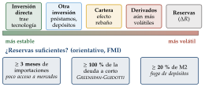
¿Hace falta financiación excepcional? La pregunta clave es si el país puede atender sus pagos exteriores sin usar reservas, sin crédito del FMI y sin dejar de pagar: si el ajuste lo hacen las reservas o el FMI, hay una vulnerabilidad (la presentación analítica de la balanza, en el anexo C.1).
Adecuación de las reservas: una combinación de políticas que lleve a un crecimiento equilibrado es siempre la mejor manera de evitar problemas de balanza de pagos a medio plazo. Con todo, la literatura sobre las reservas por motivo precaución da indicadores sencillos para juzgar si son insuficientes o excesivas ante futuros choques (Fondo Monetario Internacional, 2011):
al menos 3 meses de importaciones: una prueba de resistencia de la capacidad de pagar las importaciones si se pierden los ingresos por exportación y las entradas de capital; útil en los países con poco acceso a los mercados;
al menos el 100 % de la deuda externa a corto plazo (regla de Greenspan-Guidotti, para emergentes con acceso a los mercados); mide la liquidez, no la solvencia, y no recoge los pasivos en acciones ni en derivados. La deuda a corto relevante es la de vencimiento residual: la deuda a corto viva más las amortizaciones de los próximos 12 meses de la deuda a largo (Fondo Monetario Internacional, 2014);
al menos el 20 % del dinero en sentido amplio, M2: refleja el riesgo de una fuga de capitales por una pérdida de confianza de los depositantes, que compran divisas de forma masiva y repentina; sobre todo con tipo fijo o caja de conversión;
el FMI combina estos criterios en una métrica compuesta para los emergentes.
Demasiadas reservas también cuestan (rinden poco y su esterilización tiene un coste). Y una variación de reservas no nula no implica un tipo fijo: los créditos del FMI, por ejemplo, entran como pasivo y como reservas a la vez.
Si la financiación es vulnerable (mucha deuda a corto, mucha cartera): políticas que atraigan inversión directa y que incentiven la inversión productiva, y una fiscalidad estable.
Qué mueve la inversión directa y la de cartera: el diferencial de tipos de interés, las perspectivas del cuadro macroeconómico y el clima para el capital extranjero (seguridad jurídica, fiscalidad). La inversión directa es a largo plazo y de control, y aporta conocimiento; la de cartera busca rentabilidad y puede revertirse de golpe: ante la incertidumbre, los capitales huyen hacia activos más líquidos o más seguros (flight to liquidity, flight to safety) (Calvo, 1998). Por eso abrir la cuenta financiera no tiene el consenso de abrir la corriente: exige mercados financieros desarrollados y bien supervisados (Fondo Monetario Internacional, 2012).
Cómo se leen en el cuadro: la inversión directa, junto a la inversión interna (¿financia nueva capacidad o compra empresas existentes?); la de cartera, junto a la bolsa y los tipos de interés.
La paridad de intereses con prima de riesgo: el capital va donde el rendimiento esperado, corregido por la depreciación esperada y por una prima de riesgo, es mayor. Si un país paga tipos altos y su moneda parece estable, atrae capital a corto plazo prestado en monedas de tipos bajos (carry trade), que sale en cuanto cambian las expectativas.
Factores de empuje y de atracción: las entradas dependen de lo que pasa fuera (tipos bajos en las economías avanzadas, apetito por el riesgo, contagio, ventas forzosas de los inversores) tanto como de lo que pasa dentro (mejora de la calificación, estabilización, reformas) (Calvo, Leiderman y Reinhart, 1993). Por eso los emergentes tienen poca autonomía aunque floten: las decisiones de la Reserva Federal mueven sus tipos, sus flujos y sus monedas (el ciclo financiero mundial) (Rey, 2013).
Son flujos: todas las partidas de la balanza de pagos son flujos del año. Una inversión de cartera del \(-3\) % del PIB es lo que entró ese año, no lo que tienen los extranjeros; los saldos acumulados están en la posición de inversión internacional (Fondo Monetario Internacional, 2009).
Cómo se ajusta un déficit según el régimen cambiario: con tipo fijo, el banco central cubre la diferencia con reservas, y el ajuste llega por los agregados monetarios (al vender divisas retira moneda nacional); si las reservas se agotan, una salida de capitales puede acabar en crisis cambiaria. Con tipo flexible, el ajuste llega por el tipo de cambio: la moneda se deprecia con déficit y se aprecia con superávit, y apenas hacen falta reservas (Krugman, Obstfeld y Melitz, 2018) [ver tema 3.B.15].
Tema: [ver tema 3.B.11] [ver tema 3.B.22] [ver tema 4.A.21].
IV.3. Posición de inversión internacional y deuda externa
Qué mide: los saldos (stocks) que acumulan los flujos. La posición de inversión internacional neta (PIIN) es la diferencia entre los activos y los pasivos financieros frente al exterior,
\[\mathrm{PIIN}\equiv\text{activos exteriores}-\text{pasivos exteriores}\]
negativa si el país es deudor neto (Fondo Monetario Internacional, 2009). La deuda externa son solo los pasivos exigibles (sin las acciones, la inversión directa en capital ni los derivados; sí los bonos de la inversión de cartera) [ver tema 3.B.11].
Umbral: el cuadro de indicadores del procedimiento de desequilibrios alerta con una PIIN inferior al \(-35\) % del PIB (Comisión Europea, 2025a).
Cómo se lee: primero, si el país es acreedor o deudor; después, cómo evoluciona y por qué; y la composición de los pasivos, que importa tanto como el nivel:24
instrumentos: mejor no exigibles (inversión directa antes que cartera y que derivados);
sectores: los pasivos del banco central no tienen riesgo de refinanciación;
plazos: mejor largos;
monedas: mejor en moneda nacional; si en divisas, mejor en las que se deprecian frente a la nacional;
tenedores: cuanta más deuda en manos de no residentes, más expuesto está el país a una crisis de confianza. Japón o Italia sostienen deudas públicas muy altas porque las tienen sobre todo inversores nacionales; de ahí la recomendación de favorecer la tenencia por residentes y alargar los plazos (Arslanalp y Tsuda, 2014).
El círculo flujo-stock: acumular pasivos por un exceso de absorción genera después pagos de intereses y dividendos (rentas primarias) que empeoran la cuenta corriente, que exige más financiación, que eleva otra vez los pasivos. Por eso los déficits persistentes se alimentan solos.
Efecto valoración
La PIIN cambia por las transacciones (la cuenta financiera) y por las otras variaciones: precios de los activos y tipo de cambio. Pesan mucho en las economías pequeñas con monedas débiles que flotan, y explican por qué la PIIN puede mejorar o empeorar sin que cambie la cuenta financiera (Lane y Milesi-Ferretti, 2007).
El signo, para un deudor neto, depende de qué se revalorice:
mejora la PIIN si caen las acciones o los bonos nacionales en manos de no residentes (valen menos los pasivos), si la moneda nacional se aprecia frente a la divisa en que está su deuda, o si suben los activos exteriores de los residentes o se aprecia la divisa en que están;
empeora en los casos contrarios: si sube la bolsa nacional, si bajan los rendimientos de sus bonos (suben sus precios y, con ellos, el valor de mercado de los pasivos), si se deprecia la moneda con deuda en divisas o si caen los activos exteriores.
Un empeoramiento de la PIIN por valoración no siempre es más vulnerabilidad: si suben los precios de las acciones y los bonos nacionales en manos de no residentes porque mejoran las perspectivas de la economía o por una política monetaria acomodaticia, los pasivos valen más, pero el país no está peor.
Indicadores de deuda externa y enfoque de balances
Más allá de la deuda sobre el PIB: no todo el PIB se puede vender fuera para pagar, así que la capacidad de pago se mide también contra las exportaciones (Fondo Monetario Internacional, 2014):
deuda externa sobre exportaciones, y su servicio (intereses y amortizaciones) sobre las exportaciones o el PIB: cuánto pesan las obligaciones;
reservas sobre la deuda a corto a vencimiento residual: ¿hay activos líquidos si se corta la financiación?;
tipo implícito de la deuda externa (intereses pagados sobre la deuda media), su vida media y la tasa de renovación (desembolsos brutos sobre amortizaciones): ¿son estables las fuentes de financiación?;
los diferenciales soberanos (como el EMBI de los emergentes) y los de los CDS, que se mueven cada día: un salto brusco suele preceder a una crisis o a un frenazo de la financiación (Fondo Monetario Internacional, 2013).
El enfoque de balances: las crisis exteriores de los emergentes de finales de los años 90 no se vieron venir mirando solo los flujos, sino los descalces de los balances de cada sector (Allen et al., 2002):
de plazos (pasivos a corto frente a activos a largo);
de monedas (deudas en divisas e ingresos en moneda nacional), incluidos los ocultos, como la deuda indexada al tipo de cambio;
de estructura de capital (mucha deuda y pocos fondos propios);
de solvencia (activos que no cubren los pasivos).
La deuda en divisas entre residentes (un banco que presta en dólares a una empresa nacional) desaparece al consolidar el balance del país, pero puede desencadenar una crisis si la moneda se deprecia.
IV.4. ¿Es sostenible?
Dinámica: en porcentaje del PIB, con \(\gamma^N\) el crecimiento del PIB nominal y \(\mathrm{OV}\) las otras variaciones [ver tema 3.B.12], \[\tag{5} \mathrm{PIIN}_t-\mathrm{PIIN}_{t-1}\approx\mathrm{CF}_t+\mathrm{OV}_t-\frac{\gamma^N_t}{1+\gamma^N_t}\,\mathrm{PIIN}_{t-1} .\] Con PIIN negativa, el crecimiento del PIB nominal la mejora aunque el país siga pidiendo prestado: por eso la PIIN puede mejorar con cuenta financiera negativa. Los intereses ya están en la cuenta corriente: no hay que sumarlos aparte.
El saldo que estabiliza la deuda externa: igual que con la deuda pública, con \(D^*\) la deuda externa sobre el PIB, \(i^*\) su tipo implícito y \(\gamma^N\) el crecimiento nominal, la ratio se estabiliza si el saldo corriente sin intereses (bienes, servicios, transferencias y rentas distintas de los intereses) es \[\mathrm{CC}^{\text{sin int.}}=\frac{i^*-\gamma^N}{1+\gamma^N}\,D^* .\] Si el tipo supera al crecimiento, hace falta un superávit de bienes y servicios para que la deuda no crezca (Fondo Monetario Internacional, 2013).
Un país no puede mantener un déficit por cuenta corriente crónico, porque su capacidad de endeudarse tiene un límite. La sostenibilidad de la necesidad de financiación depende de:
\[\text{Sostenibilidad}=f\big(\overset{-}{\text{deuda}},\,\overset{+}{\gamma_Y},\,\overset{-}{i},\,\overset{?}{\pi},\,\overset{-}{\text{absorción}},\,\overset{-}{E},\,\overset{+}{\text{acceso a los mercados}}\big)\]
donde el tipo de cambio (\(E\)) solo cuenta si la deuda está en divisas.
Cada determinante:
volumen de la deuda (\(-\)): más deuda, más intereses, y el problema se retroalimenta;
crecimiento (\(+\)): de ahí la importancia de en qué se usa la financiación (inversión productiva mejor que gasto corriente);
tipos de interés (\(-\));
inflación (ambigua): solo licúa la deuda emitida en moneda nacional;
tipo de cambio (\(-\) si la deuda está en divisas): una depreciación la encarece; los emergentes que no pueden endeudarse fuera en su moneda (pecado original) son los más expuestos (Eichengreen, Hausmann y Panizza, 2005);
absorción interna (\(-\)), entendida como \(C+I+G\): cuanto más se gasta dentro, menos queda para pagar;
acceso a los mercados (\(+\)): sin él, el pago depende de la producción corriente.
El frenazo súbito: si la financiación se corta de golpe (sudden stop), el déficit tiene que cerrarse en meses. El ajuste llega por la compresión de las importaciones, que exige hundir el consumo y la inversión, con depreciación y tipos muy altos: el coste en actividad es enorme (Calvo, 1998).
Umbrales: no hay uno único para la deuda externa. La regla práctica de la guía anterior (preocupante por encima del 100 % del PIB y muy preocupante por encima del 200 %) es orientativa y no sirve para los países del euro o los centros financieros, con deudas brutas muy altas y en su moneda; en los emergentes con historial de impagos, los problemas aparecen con niveles mucho menores (Reinhart, Rogoff y Savastano, 2003). Mejor la PIIN y la composición.
Financiar o ajustar
Ante un déficit corriente que se amplía, la pregunta de política es si se financia o se ajusta. Lo temporal se financia; lo permanente se ajusta: un choque pasajero (una mala cosecha, un bache de los precios de exportación) puede cubrirse con reservas o deuda si la posición lo permite, pero uno permanente exige cambiar el gasto o los precios relativos (Fondo Monetario Internacional, 2013).
Para saber cuál es cada caso se recorren las 3 lecturas de la identidad: la de las subcuentas, la del ahorro y la inversión, y la de la renta y la absorción (gráfico 19).
El ajuste combina 2 tipos de políticas (Johnson, 1958): las reductoras del gasto (fiscal y monetaria contractivas: bajan la absorción) y las desviadoras del gasto (una depreciación real o más competitividad: desplazan el gasto hacia la producción nacional). Con la brecha negativa conviene usar más las segundas, para no hundir la actividad.
Prudencia en las épocas buenas: como es difícil distinguir a tiempo un choque temporal de uno permanente, conviene llegar a las crisis con deuda baja y reservas amplias.
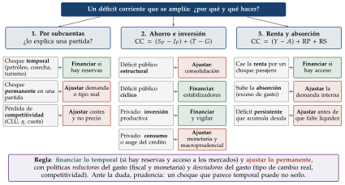
Fuente: Elaboración propia a partir del enfoque de programación financiera del FMI (Fondo Monetario Internacional, 2013). Qué hay que ver: cada una de las 3 lecturas de la identidad de la balanza de pagos lleva a una rama; en verde, los casos en que se puede financiar; en teja, los que piden ajustar.
Recapitulación: capacidad o necesidad (subcuentas, ahorro e inversión, sectores), financiación (instrumentos y reservas), posición (PIIN, composición, valoración y dinámica) y sostenibilidad (financiar o ajustar). Con el diagnóstico de todos los bloques, pasamos a las políticas.
V. Políticas
La conclusión por adelantado: la política económica busca un crecimiento alto y sostenible y amortiguar los ciclos. Las políticas de demanda (monetaria y fiscal) estabilizan el ciclo; las de oferta elevan el crecimiento a largo plazo. En cada una hay que juzgar el tono, su relación con el ciclo y si ha funcionado.
V.1. Política monetaria
Qué hay que contestar: ¿qué objetivo e instrumentos tiene el banco central? ¿Qué tono ha tenido y por qué? ¿Ha funcionado sobre la inflación y la actividad? ¿Qué debería hacer ahora?
La política monetaria ha caído en 11 de los 14 dictámenes (Asociación de Técnicos Comerciales y Economistas del Estado, 2026): casi siempre el tono y si debe seguir (2016, 2018, 2021, 2022 y 2025), y además los canales de transmisión (2020 y 2024), la dominancia fiscal y el balance del banco central (2021), la «última milla» de la desinflación (2024) y su eficacia sobre las variables nominales y reales (2026). A menudo lleva una coletilla sobre el sistema financiero (apartado V.2).
Diseño, objetivo e instrumentos
Diseño: hay cierto consenso en que la política monetaria apenas altera el nivel de actividad a largo plazo, aunque sí a corto. Por eso el papel básico de los bancos centrales es controlar la inflación, con ciertas atribuciones de estabilidad de la producción a corto plazo y del sistema financiero. El objetivo es la estabilidad de precios (a menudo un objetivo de inflación numérico, como el 2 % simétrico a medio plazo del BCE (Banco Central Europeo, 2025b); en algunos bancos centrales, también el empleo) [ver tema 3.A.36].
El objetivo aparente: si el cuadro no lo dice, se deduce de cómo se comporta el banco central:
si sube los tipos con fuerza cuando sube la inflación, persigue un objetivo de inflación;
si los baja en plena estanflación, pesa más la estabilización de la actividad;
si mueve los tipos o las reservas para frenar la apreciación o la depreciación, tiene un objetivo cambiario (aunque diga que flota);
en un país pequeño de una unión monetaria, la política no responde a su ciclo sino al del conjunto: puede ser demasiado laxa en un auge propio o demasiado dura en una recesión propia.
Los tipos de interés: el oficial o de intervención, al que el banco central presta o remunera la liquidez de los bancos; el interbancario, al que los bancos se prestan entre sí a muy corto plazo; y los tipos a corto plazo del mercado (hasta 12 meses), que fija sobre todo la intervención del banco central, aunque también influyen las expectativas y la solvencia. El oficial es el que señala el signo de la política.
Instrumentos: tipos oficiales; operaciones de financiación a plazo largo; compras de activos (expansión cuantitativa) y su reversión (endurecimiento cuantitativo); orientación sobre los tipos futuros; en los emergentes, intervención cambiaria, coeficientes de reservas o agregados monetarios. Con exceso de liquidez, como en la zona del euro, el tipo que guía la política es el de la facilidad de depósito, y el del mercado a un día cotiza algo por debajo (Banco Central Europeo, 2024).
Tono
Cómo se juzga: por el nivel del tipo real a corto frente al tipo real natural, no por si el tipo nominal sube o baja. Con \(r_t\equiv i_t-\mathbb{E}_t[\pi_{t+1}]\) (en la práctica, \(i_t-\pi_t\)), la política es expansiva (o acomodaticia, que es sinónimo) si \(r_t<r^n\); neutral si \(r_t\approx r^n\); contractiva si \(r_t>r^n\) (gráfico 20).
Como \(r^n\) no se observa, se completa con la regla de Taylor (Taylor, 1993):
\[i_t=r^*+\pi^*+1{,}5\,(\pi_t-\pi^*)+0{,}5\,\mathrm{OG}_t,\qquad r^*=\pi^*=2~\%\tag{6}\]
Si el tipo oficial está muy por debajo del que da la regla, la política es expansiva para lo que piden la inflación y la brecha. Una aproximación todavía más tosca, solo orientativa: cuanto más bajo sea el tipo real frente al crecimiento potencial, más expansiva es la política (el tipo natural no es el crecimiento potencial, pero se mueven en la misma dirección).25
Con los tipos en su límite inferior, el tono se ve en el balance del banco central: las compras de activos se reflejan en parte en los agregados monetarios, como M3.
En un brote de inflación hay que matizar: un banco central puede subir con fuerza el tipo nominal y, aun así, el tipo real caer si la inflación sube más (fue el caso de muchos bancos centrales en 2022 (Banco de Pagos Internacionales, 2022)). Una salvedad útil: «aunque los agentes deciden con el tipo real, la fuerte subida del tipo nominal al final de la serie indica un endurecimiento de la política monetaria».
Relación con el ciclo: contracíclica si sube los tipos con la brecha positiva y los baja con la negativa; procíclica si hace lo contrario. Con un desfase de 1-2 años, una política pensada como contracíclica puede acabar siendo procíclica.
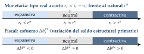
Fuente: Elaboración propia. Qué hay que ver: el tono monetario se lee en el nivel del tipo real frente al natural; el fiscal, en la variación del saldo estructural primario (apartado V.3).
Canales de transmisión y eficacia
Los canales [ver tema 3.A.37] (gráfico 21):
tipo de interés: del tipo oficial a la curva de tipos y a los tipos de préstamos y depósitos, y de ahí al consumo y la inversión;
crédito: la oferta de crédito de los bancos y el valor de las garantías de los prestatarios;
precios de los activos: vivienda y bolsa (efecto riqueza, \(q\) de Tobin);
tipo de cambio: un tipo más alto aprecia la moneda y reduce la inflación importada;
expectativas: si la política es creíble, ancla las de inflación y modera salarios y precios.
Retardos: la política tarda en hacer efecto. Según un metaanálisis de los estudios publicados, el efecto máximo sobre los precios llega, de media, unos 2 años y medio después de mover los tipos (29 meses), con mucha dispersión entre países (Havranek y Rusnak, 2013). Una política que no ha bajado la inflación en un año no ha fracasado necesariamente.
Eficacia sobre variables nominales y reales: si tras las subidas baja la inflación (con 1 o 2 años de retraso), se frena el crédito y se aprecia la moneda, la transmisión funciona. Es menos eficaz:
con un sistema financiero poco desarrollado o mucha dolarización;
con dominancia fiscal (abajo);
con el canal del crédito roto: si el crédito al sector privado cae año tras año aunque los tipos bajen, el problema no está en el tipo oficial sino en la banca (descapitalizada o con mucha morosidad), y la receta es estructural: sanear y recapitalizar los bancos, no seguir bajando tipos (Bernanke y Gertler, 1995).
La deuda privada cambia la fuerza de la transmisión: con hogares y empresas muy endeudados a tipo variable, una subida de tipos se nota enseguida en la carga de la deuda y frena más el gasto; una contractiva es más eficaz, pero también más dolorosa.
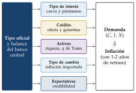
Fuente: Elaboración propia. Qué hay que ver: el tipo oficial y el balance llegan a la demanda por 5 canales, y la demanda, a la inflación con 1-2 años de retraso; si la inflación baja, se frena el crédito y se aprecia la moneda, la política funciona.
Balance del banco central y desequilibrios a vigilar
Balance del banco central: crece con las compras de activos, los préstamos a los bancos y la compra de divisas. El del Eurosistema pasó de 2 billones de euros en 2014 a 8,8 a mediados de 2022 y bajó a 5,9 en octubre de 2026 (Banco Central Europeo, 2026c) (gráfico 22).
Desequilibrios a vigilar: además de la inflación, las condiciones de liquidez (agregados monetarios), la monetización del déficit y los tensionamientos de liquidez (liquidity crunch): los bancos dejan de prestarse en el interbancario por desconfianza, lo que se ve en picos de los tipos interbancarios que no se deben a decisiones del banco central, como en 2007-2008 (Taylor y Williams, 2009).
Dominancia fiscal: cuando manda la política fiscal y el banco central acaba financiando el déficit (directamente o manteniendo tipos bajos para que la deuda sea pagable), pierde el control de la inflación (Sargent y Wallace, 1981; Leeper, 1991). Indicios: déficit y deuda altos, crédito del banco central al Estado, tipos reales muy negativos con inflación alta, objetivos incumplidos [ver tema 3.A.39].
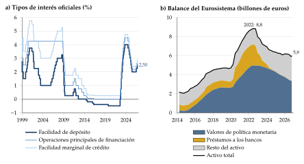
Fuente: Banco Central Europeo (2026f, 2026c); hasta octubre de 2026. Qué hay que ver: desde 2022 el tipo que guía la política es el de la facilidad de depósito; subidas de 450 puntos básicos en 2022-2023, bajadas hasta el 2 % en 2024-2025 y 2 subidas en 2026 (2,50 % desde septiembre). El balance crece con las compras de activos y la financiación a los bancos y baja desde 2022 al vencer los préstamos y no reinvertirse los valores.
Ejemplo de redacción: el tono de la política monetaria con los tipos en la cota cero. «Para analizar el tono de la política monetaria conviene fijarse en el tipo de interés a corto plazo, que es el que controla directamente el banco central, y en términos reales, que es el que afecta a las decisiones de los agentes. Para ello restamos la inflación al tipo nominal a corto plazo del cuadro.»
«Con esta métrica, el tipo real se sitúa cerca de cero durante buena parte de la serie, lo que apenas reflejaría estímulo. No conviene precipitarse: el banco central alcanza pronto la cota cero del tipo nominal y desde entonces no tiene margen con su instrumento tradicional, de modo que el tipo real no recoge todo el estímulo. Para valorar el tono hay que mirar el conjunto de instrumentos: a medida que el tipo nominal agota su margen, el banco central pone en marcha programas de compra de activos, cuyo impacto se refleja en parte en el agregado M3, que crece con más fuerza desde 20xx y se dispara en 20xx, tras el programa de compras de emergencia: una política monetaria no convencional muy expansiva.» La relación con el ciclo y la valoración final, en el anexo B.2.1.
V.2. Estabilidad financiera y política macroprudencial
Qué hay que contestar: ¿es resiliente el sistema financiero? ¿Está endeudada la economía, y con quién? ¿En qué punto del ciclo financiero está? ¿Es la banca solvente, líquida y rentable? ¿Hay burbujas en la vivienda o en la bolsa? ¿Qué deben hacer la regulación y la política macroprudencial?
La estabilidad financiera cae como pregunta propia (en 2020, una valoración macroprudencial con la solvencia y la rentabilidad de una banca muy bancarizada y el riesgo de los tipos bajos; en 2022, las vulnerabilidades y fortalezas del sector bancario) o como coletilla de la pregunta de política monetaria (en 2023, «valore brevemente la situación del sistema financiero», y en el simulacro de Meridia) (Asociación de Técnicos Comerciales y Economistas del Estado, 2026). Por eso va aquí, justo después de la política monetaria. Conviene empezar con una frase que resuma el estado del sistema («el sistema financiero parece resiliente, aunque…») y seguir siempre el mismo orden: endeudamiento, banca, riesgos y políticas.
Para qué sirve el sistema financiero: canaliza el ahorro hacia la inversión productiva. Para hacerlo bien necesita una gran variedad de activos que se ajusten a las preferencias de los inversores, muchas operaciones que le den liquidez y una supervisión completa que proteja a ahorradores e inversores. La estabilidad financiera es que pueda seguir haciéndolo ante un choque, sin cortar el crédito ni amplificar la recesión [ver tema 3.B.27] [ver tema 4.A.19].
Innovación financiera: es positiva si amplía el menú de rentabilidad y riesgo de los ahorradores y la financiación de las empresas, siempre que quede dentro del perímetro de la supervisión.
Orden del análisis: endeudamiento, banca, riesgos y políticas, tras una frase de resumen. En detalle: endeudamiento y ciclo financiero; indicadores de la banca (solvencia, calidad de los activos, liquidez y rentabilidad, el orden de la clasificación CAMELS de los supervisores: capital, activos, gestión, beneficios, liquidez y sensibilidad al riesgo de mercado (Fondo Monetario Internacional, 2013)); riesgos (vivienda, crédito, divisas, tipos, bolsa); regulación microprudencial, supervisión y unión bancaria; política macroprudencial; y, si hay una crisis, su gestión.
Endeudamiento y ciclo financiero
Qué se mira: la deuda de los hogares, de las empresas y del Estado (esta, en la política fiscal, apartado V.3) y el flujo de crédito. Si gran parte de la deuda es frente al exterior (posición de inversión internacional muy negativa), la economía es más vulnerable a un encarecimiento de la financiación; si además está en divisas, se añade el riesgo de tipo de cambio.
Umbral: el cuadro de indicadores del procedimiento de desequilibrios alerta con una deuda de los hogares superior al 55 % del PIB, una de las sociedades no financieras superior al 85 % y flujos de crédito anuales de más del 14 % (hogares) y el 13 % (empresas) de su deuda del año anterior (Comisión Europea, 2025a; Eurostat, 2025b).
Brecha crédito-PIB: la desviación de la ratio crédito/PIB respecto a su tendencia, la versión financiera de la brecha de producción. Positiva y creciente, auge del crédito (riesgo de sobreendeudamiento y burbujas); negativa, el crédito está por debajo de su tendencia. Por encima de 2 puntos se recomienda activar el colchón de capital anticíclico (Comité de Supervisión Bancaria de Basilea, 2010) [ver tema 3.A.42] [ver tema 3.B.27].
Bucle bancario-soberano: si la banca nacional tiene mucha deuda de su Estado, el riesgo de uno contagia al otro (un Estado en apuros deprecia la cartera de los bancos, y un rescate bancario dispara la deuda pública). Romper ese círculo vicioso es la razón de ser de la unión bancaria [ver tema 3.B.44].
Cómo se lee: un desapalancamiento sano es el que se hace con más ahorro y más renta, no hundiendo el consumo y la inversión (ejemplo de redacción en el anexo B.2.1).
Ejemplo de redacción: la brecha crédito-PIB. «La brecha crédito-PIB indica que la economía se halla en una posición del ciclo financiero por debajo de su tendencia desde 20xx. No hay, por tanto, sobrecalentamiento del crédito, lo que en principio permite descartar un sobreendeudamiento agregado o burbujas de alcance sistémico.»
Indicadores de la banca: solvencia
Qué mide: la solvencia es la capacidad de absorber pérdidas con recursos propios. Se mide con las ratios de capital: en el numerador, distintos componentes del patrimonio neto del banco; en el denominador, los activos ponderados por riesgo (APR). Cada activo se multiplica por un porcentaje que refleja su riesgo: no es lo mismo una hipoteca que un préstamo personal, ni un préstamo a una empresa que a un Estado de la zona del euro. Se analiza la cantidad y la calidad del capital.
Las 3 ratios, según la calidad de lo que se incluye en el numerador:
CET1 (common equity tier 1, capital ordinario de nivel 1): los instrumentos de máxima calidad, el capital social, sus primas de emisión y las reservas;
Tier 1 (capital de nivel 1): el CET1 más otros instrumentos que absorben pérdidas con la entidad en funcionamiento (capital adicional de nivel 1, convertible o amortizable si el capital cae);
capital total: el Tier 1 más el capital de nivel 2 (sobre todo deuda subordinada).
Estas ratios no se comparan con las de una empresa no financiera, como el patrimonio neto sobre el activo total.26
Umbral: los mínimos de Basilea III con el colchón de conservación son el 7, el 8,5 y el 10,5 % de los APR, a los que se suman los colchones anticíclico y sistémicos y el requisito de Pilar 2 de cada banco: en la zona del euro, los requisitos totales rondan el 11 % de CET1 y el 16 % de capital total (gráfico 23; detalle en la tabla 10, en los anexos) (Basel Committee on Banking Supervision, 2017; Parlamento Europeo y Consejo de la Unión Europea, 2013b; Banco Central Europeo, 2025a). Como referencia orientativa, la Autoridad Bancaria Europea considera holgado un CET1 por encima del 14 % (European Banking Authority, 2026); la regla práctica de la guía anterior (un Tier 1 por encima del 12 % «cumple con cierto margen») se queda corta frente a los requisitos actuales.
Ratio de apalancamiento: un endeudamiento excesivo amenaza la solvencia de un banco (y de cualquier empresa). La ratio limita el endeudamiento con el Tier 1 en el numerador y la exposición total en el denominador: todos los activos y las partidas fuera de balance, sin ponderar por riesgo y con algunos ajustes. El mínimo es el 3 % y no depende de los modelos internos de riesgo de cada banco (Basel Committee on Banking Supervision, 2017).
Cómo se lee: en una buena coyuntura hay 2 efectos opuestos sobre la ratio de capital: más beneficios retenidos (sube el numerador) y más crédito (suben los APR del denominador). Un capital que cumple, pero muy justo, puede no bastar ante un choque.
Fuente: Elaboración propia a partir de Basel Committee on Banking Supervision (2017; Banco Central Europeo, 2025a). Qué hay que ver: los mínimos crecen con la menor calidad del capital (CET1, Tier 1, total) y sobre ellos se apilan los colchones; con los sistémicos y el Pilar 2, el banco medio del MUS necesita en torno al 11 % de CET1.
Calidad de los activos
Por qué importa: la esencia del negocio bancario es prestar bien (el activo) para tranquilidad de los depositantes (el pasivo). Cuando un préstamo pasa a dudoso, el banco deja de cobrar intereses (pierde ingresos) y tiene que dotar una provisión (anota un coste): donde había un beneficio aparece una pérdida.
Qué mide: la ratio de dudosos (non-performing loans, NPL): los préstamos con más de 90 días de impago o de pago improbable sobre el crédito total; y la ratio de cobertura: las provisiones sobre los dudosos.
Umbral (orientativo, de la Autoridad Bancaria Europea): por debajo del 3 %, bajo; por encima del 8 %, alto (European Banking Authority, 2026).
Cómo se lee: la morosidad va retrasada respecto al ciclo; las moratorias y las garantías públicas pueden retrasar su reconocimiento.
Liquidez
Qué mide: el riesgo de no tener recursos líquidos suficientes para atender los pagos previstos y los imprevistos sin vender activos con pérdidas. Un banco solvente puede caer por falta de liquidez.
Indicadores: la LCR (activos líquidos de alta calidad sobre las salidas netas en 30 días de tensión) y la NSFR (financiación estable disponible sobre la requerida a un año), con mínimos del 100 % (Comité de Supervisión Bancaria de Basilea, 2013, 2014); los activos líquidos sobre el activo total; y la ratio créditos/depósitos (LTD).
Cómo se lee: una LTD por encima del 100 % significa que los créditos superan a los depósitos y el banco depende de la financiación mayorista (riesgo de financiación); muy por debajo, el banco presta poco de lo que capta y quizá gana menos de lo que podría.
Rentabilidad
Por qué importa: una empresa con pérdidas continuadas está condenada a desaparecer, porque nadie quiere perder dinero año tras año; un banco necesita beneficios para generar capital y atraer inversores. Con tipos de interés cercanos a cero y costes de estructura altos (oficinas, sistemas, personal), la banca europea fue poco rentable durante años; con las subidas de tipos su rentabilidad mejoró.
Indicadores: el ROE (beneficio neto sobre patrimonio neto), la más usada, también en las empresas no financieras; el ROA bancario (beneficio neto sobre activo medio, distinto del ROA de la empresa no financiera [ver tema 3.B.1]), con \(\mathrm{ROE}=\mathrm{ROA}\times\text{activo}/\text{patrimonio}\) (el ROE supera al ROA por el apalancamiento); y la ratio de eficiencia (gastos de explotación sobre margen bruto; cuanto menor, mejor).
Umbral: el ROE es suficiente si supera el coste del capital, la rentabilidad que exigen los accionistas (el tipo sin riesgo más una prima), que los bancos europeos estiman entre el 8 y el 12 % (European Banking Authority, 2025); no basta compararlo con los tipos de mercado. Referencias orientativas de la Autoridad Bancaria Europea: ROE favorable por encima del 10 %; eficiencia favorable por debajo del 50 % y desfavorable por encima del 60 % (European Banking Authority, 2026).
Cómo se lee: la rentabilidad sube con el margen entre los tipos de los préstamos y los de los depósitos y con más crédito, y baja con más gastos de explotación o más provisiones. Con los tipos hay 2 efectos opuestos: tipos más bajos estrechan el margen de intermediación (efecto precio) pero aumentan el crédito y mejoran la calidad de los préstamos (efecto volumen); con subidas de tipos, al revés.
Las debilidades se refuerzan entre sí: más dudosos, más provisiones, menos beneficio y menos capital. Todas las referencias, oficiales y orientativas, están en la tabla 9, y las ratios de la banca española y la europea, en la tabla 11 (las 2, en los anexos). A mediados de 2026 la banca española era más rentable que la europea (ROE del 16 %, frente al 11 %) pero tenía menos capital de máxima calidad (CET1 del 14 %, frente al 16 %) (Banco de España, 2026a; European Banking Authority, 2026).
Las empresas, la otra cara del crédito: si el cuadro da datos del sector empresarial, la cobertura de intereses (resultado bruto de explotación, EBITDA, sobre los gastos financieros) dice si las empresas pueden pagar su deuda; por debajo de 1, no la pagan con lo que generan. La rentabilidad del activo (EBITDA sobre activos) y el endeudamiento completan el cuadro: empresas poco rentables y muy endeudadas son la morosidad de mañana.
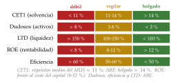
Fuente: Elaboración propia a partir de Banco Central Europeo (2025a; European Banking Authority, 2026, 2025). Qué hay que ver: cada ratio con sus tramos orientativos; las debilidades se refuerzan (más dudosos, más provisiones, menos beneficio, menos capital). A mediados de 2026, la banca española: ROE del 16 % (UE, 11 %) y CET1 del 14 % (UE, 16 %) (Banco de España, 2026a).
Ejemplo de redacción: un sector bancario que parte débil y mejora. «El sector bancario parte de una situación débil, con 3 vulnerabilidades al inicio de la serie: i) calidad de los activos: la ratio de dudosos es muy elevada (xx % de la inversión crediticia); ii) rentabilidad: el ROE es inferior al coste del capital, e incluso negativo en varios periodos; iii) solvencia: el capital cumple los requisitos de Basilea III en toda la serie (supera el 8 % más el 2,5 % de los APR, suponiendo una composición adecuada entre CET1, capital adicional de nivel 1 y de nivel 2), pero de forma muy ajustada, lo que podría no garantizar que absorba un choque. La liquidez, en cambio, no parece un problema: la ratio créditos/depósitos se sitúa por debajo del 100 %. Las 3 vulnerabilidades están relacionadas: un activo de mala calidad reduce la rentabilidad y encarece la financiación, y las pérdidas erosionan el capital. Gracias al saneamiento de los agentes (desapalancamiento), al fuerte crecimiento y al tono de la política monetaria, la situación mejora notablemente: la rentabilidad supera el coste del capital, la morosidad cae a niveles aceptables y las ratios de capital parecen adecuadas (sin entrar en otros requisitos, como el MREL, ni en la posible activación de colchones macroprudenciales).» Otro ejemplo, el de un sistema bancario que entra en una crisis bien capitalizado, en el anexo B.2.1.
Riesgos para la estabilidad financiera
Vivienda: es el principal activo de los hogares, su principal deuda y la garantía de buena parte del crédito bancario. Hay que separar fundamentos y burbuja:
fundamentos: renta disponible, población y formación de hogares, tipos hipotecarios, oferta de vivienda nueva, fiscalidad, demanda extranjera;
señales de sobrevaloración: precio que crece mucho más que la renta o que los alquileres, crédito hipotecario muy dinámico con criterios relajados (préstamo sobre valor o sobre renta altos) y precios que suben más que el VAB de la construcción (más precio que cantidad);
umbrales: el cuadro de indicadores del procedimiento de desequilibrios alerta con subidas del precio nominal de más del 9 % anual (Comisión Europea, 2025a).27 Para la accesibilidad, como referencias orientativas, una regla práctica sin norma detrás considera excesivo dedicar a la vivienda más de un tercio de la renta corriente (la guía anterior usaba el 33 %), y Eurostat habla de sobrecarga cuando los gastos de vivienda superan el 40 % de la renta disponible (Eurostat, 2025a);
con qué se cruza: consumo (efecto riqueza), inversión residencial, crédito y morosidad, y movilidad laboral (vivienda cara, peor emparejamiento) [ver tema 4.A.11].
Crédito: un auge del crédito (brecha crédito-PIB positiva y creciente, flujos por encima de los umbrales) suele preceder a las crisis bancarias; un racionamiento del crédito, a recesiones largas.
Préstamos en moneda extranjera: si una parte grande del crédito está en divisas y los prestatarios cobran en moneda nacional, una depreciación encarece sus deudas, eleva la morosidad y puede convertir una crisis cambiaria en bancaria (Eichengreen, Hausmann y Panizza, 2005).
Tipos muy bajos durante mucho tiempo: pueden ser un riesgo (búsqueda de rentabilidad, financiación de proyectos de poca calidad y de empresas zombis, menor margen de bancos y aseguradoras, precios de los activos inflados).
Bolsa: el índice bursátil recoge las expectativas de beneficios empresariales descontadas con una prima de riesgo y es un indicador adelantado del ciclo. Si sube con el PIB y los beneficios, refleja buenas perspectivas; si sube mucho más que los beneficios con tipos muy bajos o con fuertes entradas de inversión de cartera, puede haber sobrevaloración; la ratio precio-beneficio (PER) muy por encima de su media histórica es la señal clásica (Campbell y Shiller, 1998). Cuidado al compararla con el cuadro: el índice recoge las grandes empresas cotizadas y el excedente bruto de explotación, toda la economía, así que se comparan las sendas, no los niveles. Se cruza con la inversión (la \(q\) de Tobin: si el valor de mercado de las empresas supera el coste de reponer su capital, conviene invertir, [ver tema 3.A.34]) y con el consumo (efecto riqueza, menor que el de la vivienda).
Riesgos externos: salidas bruscas de capitales, contagio de crisis de otros países y exposición de los bancos a economías en dificultades. Las primas de riesgo de la deuda soberana y de los bancos (y sus seguros de impago, los CDS) son el termómetro diario de esa percepción (Fondo Monetario Internacional, 2013).
Regulación microprudencial: Basilea III
Micro y macro: la regulación microprudencial vela por la solvencia y la liquidez de cada entidad; la macroprudencial, por la del sistema en su conjunto.
Basilea III: las normas sobre capital y liquidez del Comité de Supervisión Bancaria de Basilea, acordadas tras la crisis financiera y cerradas en diciembre de 2017 (Comité de Supervisión Bancaria de Basilea, 2011; Basel Committee on Banking Supervision, 2017). En la UE se aplican con el Reglamento y la Directiva de requisitos de capital, cuya última reforma rige desde 2025 (Parlamento Europeo y Consejo de la Unión Europea, 2013b, 2013a, 2024b). Se ordenan en 3 pilares:
Pilar 1: requisitos mínimos de capital por riesgo de crédito, de mercado y operacional; la ratio de apalancamiento; y las ratios de liquidez (LCR y NSFR);
Pilar 2: la revisión supervisora de cada banco, que añade un requisito propio (P2R) y una recomendación (P2G) según su perfil de riesgo (Banco Central Europeo, 2025a);
Pilar 3: la disciplina de mercado, con la obligación de publicar información sobre el capital y los riesgos.
Capacidad de absorber pérdidas en una resolución: los bancos deben tener, además, pasivos que puedan convertirse en capital o amortizarse si la entidad se resuelve (MREL en la UE; TLAC para los bancos sistémicos mundiales), para que las pérdidas las asuman accionistas y acreedores y no el contribuyente.
Supervisión y unión bancaria
Qué es: tras el euro (con su política monetaria única, tipos comunes y sin tipos de cambio entre sus miembros, hoy 21 países (Banco Central Europeo, 2026a)), la unión bancaria es quizá el paso más importante de la integración europea. Busca un sistema bancario unificado, transparente y seguro, y romper el bucle bancario-soberano [ver tema 3.B.44].
Sus pilares:
el Mecanismo Único de Supervisión (MUS), desde 2014: el BCE supervisa directamente las entidades significativas y, a través de las autoridades nacionales, las demás (Consejo de la Unión Europea, 2013);
el Mecanismo Único de Resolución (MUR): la Junta Única de Resolución decide cómo se resuelve un banco inviable, con el Fondo Único de Resolución que financia la industria (Parlamento Europeo y Consejo de la Unión Europea, 2014b);
el tercero, un sistema europeo de garantía de depósitos, propuesto en 2015, sigue pendiente (Comisión Europea, 2015).
Cómo se lee: en un país del euro, la supervisión y la resolución son europeas; la política macroprudencial sigue siendo sobre todo nacional, con el BCE como garante.
Política macroprudencial
Objetivo: limitar el riesgo sistémico, el del conjunto del sistema, que la supervisión de cada banco no ve. Tiene una dimensión temporal (el ciclo financiero: el crédito y los precios de los activos se alimentan mutuamente) y otra estructural (bancos grandes e interconectados) (Junta Europea de Riesgo Sistémico, 2014).
Instrumentos:
colchones de capital: de conservación (2,5 %); anticíclico (0-2,5 %, se acumula en el auge y se libera en la crisis); para entidades sistémicas, mundiales u otras; y de riesgo sistémico, que puede aplicarse a un sector (por ejemplo, las hipotecas);
medidas sobre los prestatarios: límites al préstamo sobre el valor de la garantía (LTV, loan to value), al préstamo sobre la renta (LTI, loan to income) y al servicio de la deuda sobre la renta (DSTI, debt service to income), y plazos máximos;
límites a la concentración y a las exposiciones a un sector.
En la fase alcista (crédito y vivienda muy dinámicos, brecha crédito-PIB positiva): activar el colchón anticíclico o uno de riesgo sistémico sectorial, y limitar a los prestatarios (LTV, LTI, DSTI).
En la fase bajista o en una crisis: permitir operar temporalmente por debajo de los colchones y del mínimo de liquidez (LCR), liberar el colchón anticíclico para que el capital absorba pérdidas sin cortar el crédito, suavizar los límites de LTV y LTI, dar flexibilidad supervisora y limitar el reparto de dividendos para retener capital, como en 2020 (Banco Central Europeo, 2020b). Hay que vigilar, a la vez, el precio de los activos. Un ejemplo de redacción con tipos muy bajos durante años está en el anexo B.2.1.
Si estalla una crisis bancaria: lo primero es distinguir un problema de liquidez, que se resuelve con un prestamista de última instancia, de uno de solvencia, que exige recapitalizar o resolver el banco; las herramientas de resolución están en el anexo B.1.
Tema: [ver tema 3.B.27] [ver tema 3.B.44] [ver tema 4.A.19].
V.3. Política fiscal y deuda pública
Qué hay que contestar: ¿qué tono tiene la política fiscal y es adecuado al ciclo? ¿Es sostenible la deuda? ¿Qué riesgos tiene y cómo se reducen? ¿Qué exigen las reglas fiscales?
La política fiscal ha caído en todos los dictámenes, casi siempre con el tono (Asociación de Técnicos Comerciales y Economistas del Estado, 2026). Además, el tribunal ha pedido calcular el esfuerzo estructural (2011, 2016, 2018 y 2019), decir si el saldo primario estructural debía ser mayor o menor según el ciclo (2021), valorar los efectos no keynesianos y los ingresos bajos (2022), el efecto de las nuevas reglas fiscales (2023), la sostenibilidad y la eficiencia de las finanzas públicas (2024), el tamaño del sector público y la gestión de la deuda (2025), los riesgos para la sostenibilidad de la deuda y cómo mitigarlos (2026) y una expansión de la inversión en infraestructuras y vivienda (2020).
El punto de partida: hay cierto consenso en que una política fiscal expansiva no cambia la producción ni el empleo a largo plazo.28 Por eso la mayoría de los economistas recomienda una política fiscal neutral, que deje actuar a los estabilizadores automáticos: superávits en las expansiones y déficits en las recesiones, de modo que la deuda pública absorba los choques que golpean a la economía. Solo ante una recesión grave o un sobrecalentamiento debería el Gobierno aplicar una política discrecional contracíclica a corto plazo [ver tema 3.A.38].
Saldos y tono
Las 5 variables del saldo, en porcentaje del PIB y con la notación del temario [ver tema 4.B.4]:
el saldo público \(b\) (capacidad o necesidad de financiación de las administraciones públicas): ingresos totales menos gastos totales;
el saldo primario \(b^p\): el saldo sin los intereses de la deuda;
el saldo ajustado por el ciclo \(b^{ca}=b-\varepsilon\cdot\mathrm{OG}\): el que habría si la economía estuviera en una posición neutral del ciclo (con la brecha cerrada, ni en expansión ni en recesión), con \(\varepsilon\) la semielasticidad del saldo a la brecha (en torno a 0,5-0,6 en la UE);
el saldo estructural \(b^e\): el ajustado por el ciclo sin las medidas puntuales de ingreso o de gasto (temporales);29
el saldo estructural primario \(b^{pe}\): el estructural sin los intereses de la deuda.
Del saldo total se llega al estructural primario quitando el ciclo y las medidas puntuales y sumando los intereses, y su variación es el tono:
\[b^{pe}=b-\varepsilon\cdot\mathrm{OG}-\text{medidas puntuales}+\text{intereses},\qquad \text{esfuerzo}_t=\Delta b^{pe}_t\tag{7}\]
Tono (gráfico 20): el esfuerzo fiscal es la variación del saldo estructural primario, \(\Delta b^{pe}_t\): positivo, contractivo; negativo, expansivo; en torno a 0, neutral (deja actuar a los estabilizadores automáticos, sea cual sea el nivel del saldo). El FMI llama impulso fiscal a \(-\Delta b^{pe}_t\) (gráfico 25). Cuidado con el signo: si el saldo era negativo y se hace más negativo, ha bajado y el tono es expansivo.
Con déficits muy altos, el Consejo Fiscal Europeo propuso mirar también el nivel: un déficit estructural primario alto que se reduce algo sigue siendo una política expansiva (European Fiscal Board, 2021) (ejemplo de redacción en el anexo B.2.1). Desde 2024 la Comisión mide la orientación con el crecimiento del gasto primario neto frente al potencial.
Relación con el ciclo: contracíclica si el saldo estructural primario sube con la brecha positiva y baja con la negativa (lo ideal); procíclica si al revés. Con histéresis, una política fiscal expansiva en una recesión puede tener efectos duraderos.
Por qué la política fiscal suele ser procíclica, sobre todo en los emergentes: hay pocos estabilizadores automáticos, el ciclo se mide mal y tarde, se pierde el acceso a la financiación justo en las recesiones (hay que recortar cuando más duele) y la economía política empuja a gastar los ingresos del auge. La prociclicidad es sobre todo de las épocas buenas (Kaminsky, Reinhart y Végh, 2004; Fondo Monetario Internacional, 2013).
El saldo estructural puede engañar en los auges: el ajuste cíclico estándar quita la parte del saldo ligada a la brecha, pero no los ingresos extraordinarios de un auge de los precios de los activos (impuestos sobre las transacciones inmobiliarias, plusvalías, beneficios del sector financiero). Un saldo estructural que «mejora» en pleno auge puede esconder ingresos que desaparecerán con la crisis (Morris y Schuknecht, 2007). Por eso conviene mirar también la evolución del gasto, que es lo que vigila la regla de la UE.
Otros saldos útiles: en un exportador de petróleo, el saldo no petrolero sobre el PIB no petrolero (lo que el Estado gastaría sin los ingresos del recurso); con inflación alta, el saldo operativo, que descuenta la parte de los intereses que solo compensa la inflación; en un país con ayuda exterior, el saldo sin donaciones; y tras una crisis bancaria, el saldo aumentado con los costes de recapitalizar los bancos (Fondo Monetario Internacional, 2013).
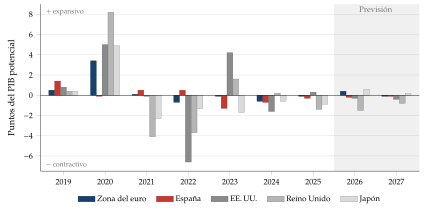
Fuente: Fondo Monetario Internacional (2026a); impulso \(=-\Delta\) saldo primario ajustado por el ciclo; 2026 y 2027, previsiones. Qué hay que ver: positivo es expansivo; 2020 lo es en todos, en 2021-2022 se retira y EE. UU. vuelve a expandir en 2023.
Efectos no keynesianos
Qué son: cuando hay dudas sobre la sostenibilidad de las finanzas públicas, una consolidación fiscal creíble hoy podría despejar la incertidumbre y generar confianza en el futuro, de modo que los agentes, esperando una recuperación (y menos impuestos futuros), desahorren y consuman más hoy. Es tanto como suponer un multiplicador keynesiano negativo.
Evidencia: el argumento nació de las consolidaciones de Dinamarca e Irlanda en los años 80 (Giavazzi y Pagano, 1990); la evidencia posterior indica que, en la mayoría de los casos, las consolidaciones fiscales reducen la actividad a corto plazo (Guajardo, Leigh y Pescatori, 2014) [ver tema 3.A.38].
Cómo se ve en el cuadro: consumo e inversión privados que se aceleran justo cuando el saldo estructural primario mejora con fuerza, con una prima de riesgo o unos tipos a largo que bajan. Con prudencia: puede haber otras causas (depreciación, demanda externa, política monetaria).
Los multiplicadores dependen del instrumento y del momento: en los modelos de los bancos centrales y los organismos internacionales, el gasto público (sobre todo la inversión) y las transferencias focalizadas en hogares con restricciones de liquidez tienen multiplicadores mayores que las rebajas generales de impuestos, y todos son mayores si la política monetaria acompaña (tipos en su límite inferior) (Coenen et al., 2012). Tras la crisis financiera, los multiplicadores resultaron mayores de lo que se había supuesto al diseñar las consolidaciones (Olivier J. Blanchard y Leigh, 2013). Un paquete fiscal tiene más impacto si es inversión que si es gasto corriente o rebajas generales de impuestos.
Las reglas fiscales de la UE
Qué se mantiene: los valores de referencia del Tratado (déficit del 3 % y deuda del 60 % del PIB) y el procedimiento de déficit excesivo (Unión Europea, 2012).
Qué cambia (Parlamento Europeo y Consejo de la Unión Europea, 2024a; Consejo de la Unión Europea, 2024) [ver tema 3.B.45]:
un solo indicador operativo, la senda de gasto primario neto (sin intereses, sin el gasto cíclico en desempleo y sin las medidas discrecionales de ingresos);
un plan fiscal-estructural a 4 años, ampliable a 7 con reformas e inversiones, que debe dejar la deuda en una trayectoria descendente plausible;
salvaguardas: la deuda debe bajar al menos 1 punto al año de media si supera el 90 % del PIB (0,5 entre el 60 y el 90 %), y el déficit estructural converger a un margen del 1,5 % del PIB;
una cuenta de control de las desviaciones y cláusulas de escape; en 2025 la Comisión invitó a los Estados a pedir la activación coordinada de la cláusula nacional de escape para el gasto en defensa, con un margen de hasta el 1,5 % del PIB, y la mayoría lo pidió (Comisión Europea, 2025c).
Tipos de reglas fiscales: de saldo (equilibrio presupuestario: sencillas, pero procíclicas si se fijan sobre el saldo total), de deuda (anclan la sostenibilidad, pero no guían el año a año) y de gasto (controlables por el Gobierno y anticíclicas, porque dejan actuar a los ingresos). Su eficacia depende, sobre todo, del compromiso político y de instituciones fiscales independientes que las vigilen (Schaechter et al., 2012).
Cómo se aplica: para un país con déficit y deuda altos, el marco pide una consolidación gradual y plurianual, con más margen si hace reformas e inversiones [ver tema 4.B.21].
Dinámica y sostenibilidad de la deuda pública
Cómo se calcula: con \(d_t\) la deuda sobre el PIB, \(g_t-\tau_t\) el déficit primario, \(i\) el tipo implícito de la deuda y \(\gamma^N\) el crecimiento del PIB nominal [ver tema 3.A.39], \[\tag{8} d_t-d_{t-1}=(g_t-\tau_t)+\frac{i_t-\gamma^N_t}{1+\gamma^N_t}\,d_{t-1}+\mathrm{ADD}_t\;\approx\;(g_t-\tau_t)+\frac{r_t-\gamma_{Y,t}}{1+\gamma_{Y,t}}\,d_{t-1}+\mathrm{ADD}_t ,\] donde el segundo término es el efecto bola de nieve, lo que decide si la deuda se sostiene: la diferencia entre el tipo de interés y el crecimiento nominal, y ADD el ajuste déficit-deuda (privatizaciones, ayudas financieras, depósitos del Tesoro, efecto del tipo de cambio en la deuda en divisas).
Saldo primario que estabiliza la deuda (gráfico 26): \(\tau-g=\frac{i-\gamma^N}{1+\gamma^N}\,d\). Si \(i<\gamma^N\) (o \(r<\gamma_Y\)), el crecimiento reduce la ratio por sí solo y basta un déficit primario pequeño (O. Blanchard, 2019); si \(i>\gamma^N\), hacen falta superávits primarios, mayores cuanto más deuda. Ejemplo: con una deuda del 100 % del PIB, un tipo implícito del 3 % y un crecimiento nominal del 4 %, la deuda se estabiliza con un déficit primario de casi 1 punto.
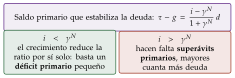
Fuente: Elaboración propia a partir de O. Blanchard (2019). Qué hay que ver: lo que decide si la deuda se sostiene es la diferencia entre el tipo de interés y el crecimiento nominal; con \(i>\gamma^N\), hace falta superávit primario.
Con los datos del examen, hay que decirlo: el cuadro da la deuda bruta, pero la sostenibilidad debería juzgarse con la neta (descontando los activos del Estado: reservas, depósitos, préstamos concedidos, fondos de reserva, y lo que rinden) (Fondo Monetario Internacional, 2018); y da el tipo a corto plazo, que se aproxima al coste de la deuda nueva, cuando lo relevante es el tipo medio de la deuda viva. Los emergentes sostienen menos deuda porque pagan tipos más altos (Reinhart, Rogoff y Savastano, 2003).
Riesgos para la sostenibilidad:
macroeconómicos: menos crecimiento, deflación, subidas de tipos, pasivos contingentes (avales, empresas públicas, banca) y envejecimiento (Comisión Europea, 2024a);
financieros: deuda en divisas, mucho vencimiento a corto plazo, tenedores no residentes, concentración en la banca nacional (bucle bancario-soberano, apartado V.2) y calificación cerca del grado especulativo (por debajo de BBB\(-\)/Baa3 la deuda deja de ser admisible como garantía en el Eurosistema (Banco Central Europeo, 2026e)).
Necesidades brutas de financiación: el déficit del año más la deuda que vence en los próximos 12 meses. Miden el riesgo de liquidez, no el de solvencia: un país con deuda moderada pero muy concentrada a corto plazo puede tener problemas si se cierran los mercados. El FMI las vigila en su análisis de sostenibilidad (Fondo Monetario Internacional, 2021a).
Preguntas guía para enlazar los bloques: ¿es la deuda pública también deuda externa (en manos de no residentes, en divisas)? ¿La financia el banco central? Cada forma de financiar el déficit tiene su desequilibrio típico (Fondo Monetario Internacional, 2013):
con el exterior: apreciación y, si es en divisas, riesgo cambiario;
con el banco central: más base monetaria e inflación (dominancia fiscal);
con la banca nacional: expulsión del crédito privado y bucle bancario-soberano;
con el sector no bancario: tipos más altos y, si la deuda no se controla, inflación futura.
Patrimonio y riesgos ocultos: la deuda no es todo el balance del Estado. Los pasivos contingentes explícitos (avales, garantías a empresas públicas o a la banca) e implícitos (rescates esperados), y las colaboraciones público-privadas, que esconden gasto futuro, pueden aflorar de golpe en una crisis. Una senda de deuda se pone a prueba comparándola con la de un escenario a políticas constantes y con la historia del país (¿ha logrado alguna vez el superávit primario que supone?) (Fondo Monetario Internacional, 2013, 2021a).
Estrategias para reducir los riesgos: consolidación gradual y creíble, anunciada pronto (mejor por el gasto corriente y ampliando bases), alargar la vida media y emitir en moneda nacional, diversificar los inversores, reformas que eleven el crecimiento potencial y, en la UE, un plan fiscal-estructural creíble [ver tema 4.B.26].
La calidad del ajuste importa tanto como su tamaño: proteger el gasto productivo (inversión, educación) y las redes de protección focalizadas; eliminar programas ineficaces antes que hacer recortes lineales; no recortar el mantenimiento ni los insumos que hacen funcionar los servicios; por el lado de los ingresos, bases amplias (un IVA con pocas exenciones, impuestos especiales), aranceles bajos y uniformes y nada de vacaciones fiscales, que atraen empresas móviles y se prestan a manipular los precios de transferencia (Fondo Monetario Internacional, 2013).
Política fiscal en una crisis, según su origen: si la crisis es fiscal (el problema es la deuda pública), hay que consolidar aunque cueste actividad; si es financiera o empresarial con cuentas públicas sanas, conviene dejar actuar a los estabilizadores o incluso estimular. Ante un choque temporal, la respuesta debe ser rápida al principio y focalizada después, con un plan de retirada gradual que se anuncia pronto aunque se aplique más tarde, vigilando los avales y evitando mantener a flote empresas inviables (Fondo Monetario Internacional, 2013).
La inflación y las cuentas públicas
La idea: la inflación aumenta los ingresos y los gastos públicos, pero con distinto retraso. A corto plazo mejora el déficit y la ratio de deuda; a medio plazo el efecto se invierte (Fondo Monetario Internacional, 2023a).
Los ingresos suben deprisa:
las bases tributarias (consumo, beneficios, masa salarial) son variables nominales y crecen con la inflación;
la progresividad en frío (rémora fiscal): si los tramos del impuesto sobre la renta no se actualizan, los contribuyentes pasan a tramos más altos aunque su renta real no suba.
Los gastos suben más despacio:
intereses: suben a medida que se amortiza la deuda antigua, emitida a tipos bajos, y se emite deuda nueva a tipos más altos; como la deuda viva se amortiza poco a poco, suben lentamente (más deprisa con mucha deuda a corto plazo o indexada a la inflación);
gastos indexados (pensiones y salarios públicos): suben con retraso, porque suelen actualizarse con la inflación del año anterior. Cuidado con los salarios públicos: a veces son la referencia de los privados (efectos de segunda ronda);
compras y suministros (alquileres, contratos): suben a medida que vencen los contratos y se licitan a precios más altos.
El denominador: el PIB nominal sube con la inflación, y con él bajan el déficit y la deuda en porcentaje del PIB. La tabla 4 ordena los canales, y el gráfico 27, su calendario.
| Canal | Efecto en | Qué ocurre |
|---|---|---|
| Valores nominales inflados | Denominador (PIB) | El PIB nominal sube con la inflación: bajan el déficit y la deuda en porcentaje del PIB |
| Valores nominales inflados e indexación | Ingresos | La base imponible nominal sube (IVA, impuesto sobre los beneficios); si los tramos del impuesto sobre la renta no se indexan, los contribuyentes pasan a tramos más altos |
| Indexación | Gasto primario | No varía de inmediato, pero sube con un corto retraso por la indexación de salarios públicos, prestaciones sociales, subvenciones, pensiones y gasto sanitario |
| Indexación, estructura de la deuda y expectativas del mercado | Intereses y servicio de la deuda | Suben los intereses de los bonos indexados; con más deuda a corto plazo, refinanciar cuesta más porque los inversores piden más rentabilidad ante la inflación esperada; si la moneda se deprecia, se encarece la deuda en divisas |
Fuente: Elaboración propia a partir de Fondo Monetario Internacional (2023a). Qué hay que ver: son los canales directos, antes de cualquier respuesta de política; los 2 primeros mejoran las cuentas enseguida y los 2 últimos las empeoran con retraso.
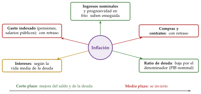
Fuente: Elaboración propia a partir de Fondo Monetario Internacional (2023a). Qué hay que ver: los ingresos y el PIB nominal suben enseguida y el gasto indexado y los intereses, con retraso; a corto plazo mejoran el déficit y la ratio de deuda, y a medio plazo el efecto se invierte.
Otros análisis de las cuentas públicas
Nivel de ingresos y gastos sobre el PIB: se comparan con los de países de renta parecida; la pregunta no es el tamaño, sino si los ingresos financian el gasto de forma sostenible y si el gasto es eficiente [ver tema 4.B.5] [ver tema 4.B.7]. Con ingresos bajos hay 2 vías para subirlos sin dañar el crecimiento:
más impuestos: actuar sobre los tipos (subirlos o reordenarlos hacia impuestos menos distorsionadores) o sobre las bases: nuevos impuestos, menos exenciones y bonificaciones, políticas estructurales que aumenten la producción, lucha contra el fraude y la economía sumergida (por ejemplo, más pagos electrónicos para reducir el uso del efectivo) y políticas que suban la tasa de actividad (más recaudación por la renta);
más ingresos no tributarios: tasas, contribuciones especiales, cotizaciones sociales y sanciones.
Gasto corriente frente a gasto de capital: el gasto se divide en corriente (remuneración de los empleados públicos, compras, subvenciones, prestaciones sociales e intereses de la deuda) y de capital (inversión en infraestructuras y otros activos, transferencias de capital) (Parlamento Europeo y Consejo de la Unión Europea, 2013c): un ajuste que recorta sobre todo la inversión pública daña el crecimiento potencial.
Efectividad de los estabilizadores automáticos: la diferencia entre el saldo total y el ajustado por el ciclo, \(b-b^{ca}=\varepsilon\cdot\mathrm{OG}\), mide cuánto del saldo explica el ciclo. Si en una recesión el saldo total empeora mucho más que el ajustado, los estabilizadores actúan con fuerza; si apenas se separan, son débiles (algo típico de los países con poco gasto social y muchos ingresos ligados a materias primas).
Peso de la deuda a corto plazo: cuanto más concentrados los vencimientos, mayor el riesgo de refinanciación; mejor un calendario escalonado.
Vida media de la deuda: cuanto más larga, más despacio se traslada una subida de tipos al coste medio (solo se paga el tipo nuevo por lo que se refinancia) y menor es el riesgo de refinanciación (Sahuquillo, 2023).
Peso de la deuda regional: en los Estados descentralizados importa quién se endeuda; sin corresponsabilidad fiscal (que quien decide el gasto responda también de los ingresos), los gobiernos regionales tienden a gastar más y a confiar en un rescate del central.
Calidad crediticia de la deuda: la calificación de las agencias resume el riesgo de impago y condiciona el coste de la deuda y quién puede comprarla. Por debajo de BBB\(-\)/Baa3 la deuda pasa a grado especulativo: muchos inversores institucionales no pueden mantenerla y deja de ser admisible como garantía en el Eurosistema (tabla 5) (Banco Central Europeo, 2026e).
| Bloque | S&P | Moody’s | Fitch | DBRS | Eurosistema |
|---|---|---|---|---|---|
| Grado de inversión | AAA | Aaa | AAA | AAA | 1 |
| AA+ | Aa1 | AA+ | AA (high) | 1 | |
| AA | Aa2 | AA | AA | 1 | |
| AA\(-\) | Aa3 | AA\(-\) | AA (low) | 1 | |
| A+ | A1 | A+ | A (high) | 2 | |
| A | A2 | A | A | 2 | |
| A\(-\) | A3 | A\(-\) | A (low) | 2 | |
| BBB+ | Baa1 | BBB+ | BBB (high) | 3 | |
| BBB | Baa2 | BBB | BBB | 3 | |
| BBB\(-\) | Baa3 | BBB\(-\) | BBB (low) | 3 | |
| Grado especulativo | BB+ | Ba1 | BB+ | BB (high) | 4 |
| BB | Ba2 | BB | BB | 5 | |
| BB\(-\) | Ba3 | BB\(-\) | BB (low) | — | |
| B+ | B1 | B+ | B (high) | — | |
| B | B2 | B | B | — | |
| B\(-\) | B3 | B\(-\) | B (low) | — | |
| CCC+ | Caa1 | CCC+ | CCC (high) | — | |
| CCC | Caa2 | CCC | CCC | — | |
| CCC\(-\) | Caa3 | CCC\(-\) | CCC (low) | — | |
| Impago o casi | CC | Ca | CC | CC | — |
| C | C | C | C | — | |
| D | — | D | D | — |
Fuente: Escalas de las agencias recogidas por Bankinter (s. f.); niveles de calidad crediticia del Eurosistema: Banco Central Europeo (2026e), que acepta también DBRS (en cursiva) y Scope (esta, con la misma escala que S&P y Fitch). Qué hay que ver: el grado de inversión llega hasta BBB\(-\)/Baa3 (nivel 3 del Eurosistema); por debajo, la deuda es especulativa y deja de ser admisible como garantía.
Ejemplo de redacción: deuda alta y calificación. «Por último, hay que llamar la atención sobre el elevado nivel de deuda pública, que crece durante toda la serie (sobre todo en 20xx, por las medidas fiscales contra la crisis) hasta el xxx,x % del PIB. La agencia S&P ha mantenido su calificación en grado de inversión desde 20xx, después de situarla en grado especulativo en 20xx. Sin embargo, un crecimiento persistentemente bajo, una brecha de producción negativa sin perspectivas de cerrarse a corto o medio plazo y una normalización de la política monetaria antes de lo previsto podrían poner en riesgo la sostenibilidad de las finanzas públicas.» Un ejemplo sobre un paquete de estímulo propio y los de otros países, en el anexo B.2.1.
V.4. Combinación de políticas (policy mix)
Qué es: la combinación de los tonos de la política monetaria y la fiscal.
Cómo se lee: el policy mix es coherente si cada política contribuye a los objetivos de la otra, no si las 2 tienen el mismo signo, y tensionado si una deshace lo que hace la otra (gráfico 28) [ver tema 3.A.40]:
ambas expansivas: adecuado en una recesión con inflación baja; riesgo de inflación si se mantienen en la recuperación;
ambas contractivas: adecuado con sobrecalentamiento e inflación; riesgo de recesión;
fiscal expansiva y monetaria contractiva: suben los tipos y se aprecia la moneda; poco coherente salvo que la expansión fiscal sea temporal y focalizada (como las ayudas por la energía tras la invasión de Ucrania);
fiscal contractiva y monetaria expansiva: la combinación clásica para consolidar con deuda alta y brecha negativa sin hundir la demanda.
En una unión monetaria la política monetaria es común: el país solo controla la fiscal, que tiene que compensar si su ciclo va por delante o por detrás del de la zona.
Un ejemplo de los datos: según el FMI, en 2020 el 77 % de las economías combinó políticas monetaria y fiscal expansivas; en 2021, el 62 %, una monetaria expansiva con una fiscal contractiva; y en 2022 el 74 % aplicó ambas contractivas. El giro de todo expansivo a todo contractivo en 2 años muestra cómo cambia el policy mix con el ciclo y la inflación (Fondo Monetario Internacional, 2023a).
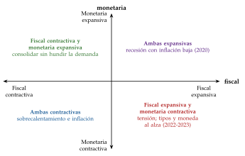
Fuente: Elaboración propia. Qué hay que ver: el tono de cada política se sitúa en un eje; la coherencia depende de la situación (inflación, brecha, deuda), no de que las 2 vayan en el mismo sentido.
El policy mix se preguntó en 2020 y 2021 (Asociación de Técnicos Comerciales y Economistas del Estado, 2026). La fiscal se mide por la variación del saldo primario (estructural, si se puede) y la monetaria, por el tipo oficial o, con tipos en su límite, por el balance.
V.5. Políticas de oferta
Diagnóstico previo: crecimiento potencial bajo, productividad estancada, inversión baja, paro estructural alto o tasa de actividad baja. Las recomendaciones se ordenan según cuál sea el cuello de botella [ver tema 3.A.45] [ver tema 3.A.44]:
fomentar el progreso técnico: I+D (ayudas directas, deducciones, colaboración entre universidad y empresa para orientar la investigación y facilitar el flujo de información) y plataformas de capital riesgo (business angels, venture capital);
aumentar la capacidad productiva (el capital): incentivos fiscales a la inversión, estabilidad macroeconómica e infraestructuras que vertebren el mercado y faciliten la circulación de mercancías;
capital humano: menos abandono escolar, formación profesional dual, recualificación de los desplazados por la digitalización;
mejorar el mercado de trabajo: según el tipo de paro (lista siguiente);
aumentar la competencia: liberalización de sectores, menos barreras al comercio interior y exterior, defensa de la competencia, subvenciones transversales (I+D, internacionalización, medio ambiente) en lugar de sectoriales;
instituciones: seguridad jurídica, calidad regulatoria, eficacia de la justicia y de la Administración.
El mercado de trabajo, según el tipo de paro (cómo se detecta y qué hacer; apartado II.1) [ver tema 3.A.28] [ver tema 4.A.16]:
paro clásico (salarios reales demasiado altos para la productividad; se detecta con CLU que crecen mucho y de forma sistemática): flexibilizar el salario real y subir la productividad. Para lo primero, salarios que reflejen la productividad (negociación más cercana a la empresa, indexación a la productividad y no a la inflación pasada, parte del salario ligada a los resultados, profit sharing), menos dualidad entre fijos y temporales (menores costes de contratación y despido, y que los sindicatos tengan en cuenta también a los parados en sus reivindicaciones) y menos cuña fiscal sobre los salarios bajos; para lo segundo, formación en la empresa (subvencionada), planes de estudio adaptados (más carreras técnicas, formación dual), progreso técnico y más capacidad productiva;
paro keynesiano (demanda insuficiente; se detecta con un consumo privado anémico): políticas de demanda temporales (menos impuestos sobre la renta, más transferencias);
paro friccional o de desajuste (falta de casamiento entre oferta y demanda; se detecta con una curva de Beveridge alejada del origen): búsqueda más eficiente, con servicios de empleo eficaces y en colaboración con agencias privadas, planes de estudio adaptados y más movilidad geográfica (fomento del alquiler);
paro de larga duración (se retroalimenta: cuanto más tiempo fuera, más difícil volver, por la pérdida de cualificación, la mala señal y el desánimo): planes de choque que prioricen a este colectivo, con incentivos fiscales a su contratación y formación para reciclar sus capacidades;
en todos los casos, políticas activas de empleo (orientación, intermediación, formación ligada a la demanda de las empresas e incentivos a contratar a quien tiene más dificultades), que funcionan mejor bien focalizadas y evaluadas (Card, Kluve y Weber, 2018), y políticas pasivas (prestaciones), que protegen la renta y sostienen el consumo en las recesiones, con cuantía decreciente y ligadas a la búsqueda activa para no desincentivarla.
Recapitulación: el tono se mide por niveles reales frente al neutral (monetaria) y por la variación del saldo estructural primario (fiscal); la sostenibilidad de la deuda, por \(i-\gamma^N\) y el saldo primario; la oferta, por el cuello de botella del potencial.
VI. Recomendaciones de política económica
VI.1. Cómo se plantea la pregunta
Qué hay que contestar: ¿cuáles son los puntos fuertes de la economía? ¿Cuáles son sus vulnerabilidades y cómo pueden corregirse?
Se contesta en 3 pasos: qué va bien (fortalezas), qué hay que cambiar (los 2 o 3 desequilibrios principales, ordenados por importancia) y cómo (medida, objetivo y riesgo).
Nunca tajante ni demasiado preciso: «parece necesaria una consolidación fiscal, pero sin que resulte excesiva para no lastrar la recuperación».
Puntúan las recomendaciones que responden a los datos del cuadro, no las que valen para cualquier país: cada una nace de un indicio, corrige un desequilibrio concreto y dice su riesgo (gráfico 29).
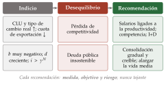
Fuente: Elaboración propia. Qué hay que ver: el camino siempre es el mismo, del indicio en el cuadro al desequilibrio y de ahí a la medida, con su objetivo y su riesgo; 2 ejemplos, competitividad y deuda pública.
Naturaleza, origen y gravedad del desequilibrio
Antes de recetar, conviene clasificar cada desequilibrio con 3 preguntas, como hace el FMI (Fondo Monetario Internacional, 2013):
¿Qué naturaleza tiene? ¿Es interno (inflación, paro) o externo (balanza de pagos)? ¿Es macroeconómico o está en el balance de un sector (descalces de plazos o de monedas)?
¿De dónde viene? ¿Del gasto público (y de su financiación por el banco central), de un auge del consumo o de la inversión privados, de un choque externo?
¿Cuánto pesa y cuánto dura? ¿Es puntual, cíclico o persistente? ¿Es un problema de liquidez o de solvencia? Los problemas de flujo que persisten acaban en problemas de stock, y los de liquidez pueden volverse de solvencia: por eso lo persistente se corrige antes.
El menú: casi cualquier corrección combina 3 ajustes: de la demanda (políticas fiscal y monetaria contractivas: rápidas, pero con coste social), de la oferta (reformas: más lentas y difíciles de aplicar, pero las únicas que elevan el potencial) y del tipo de cambio (solo si está sobrevalorado). La regla de financiar lo temporal y ajustar lo permanente está en el apartado IV.4.
Ejemplo de redacción: plantilla de fortalezas y riesgos. «A la luz de los datos, las principales fortalezas de la economía son: …; …. A su vez, los mayores riesgos que la amenazan son: …; …. Para corregirlos, parecen adecuadas a corto plazo (políticas de demanda, si hay margen) …, y a medio y largo plazo (de oferta) ….»
La pregunta de desequilibrios y recomendaciones cayó en 12 de los 14 dictámenes y suele ser la última; desde 2023 a veces va dentro de cada pregunta («proponga medidas…»), y las reformas estructurales y de oferta se han pedido en 2023, 2024 y 2026 (en 2022, con un gráfico de calidad institucional) (Asociación de Técnicos Comerciales y Economistas del Estado, 2026). Se escribe al final, con la matriz de fortalezas y debilidades que se ha ido anotando durante el examen (anexo D.8). Hay recomendaciones que valen para casi todos los países (estabilidad macroeconómica, reformas que eleven la productividad), pero las que puntúan son las que responden a los datos del cuadro.
VI.2. Recomendaciones por desequilibrio
| Desequilibrio | Indicios en el cuadro | Recomendaciones tipo |
|---|---|---|
| Crecimiento débil o recesión | \(\gamma_Y\) bajo o negativo; brecha negativa | Políticas monetaria y fiscal expansivas a corto plazo si hay margen (inflación baja, deuda sostenible), mientras surten efecto las reformas de oferta |
| Crecimiento potencial bajo | \(\gamma_{Y^p}\) bajo; PAT estancada; NAIRU alta; déficit corriente persistente | Reformas estructurales: capital humano, I+D, infraestructuras, competencia; menor coste de los insumos (reforma del sistema financiero, contra la información asimétrica en el crédito, y del mercado de trabajo); efectos a largo plazo: plantear el policy mix |
| Demanda interna débil | consumo e inversión estancados; ahorro alto | Apoyo a la renta de los hogares con más propensión a consumir; crédito; certidumbre fiscal; si sobra ahorro empresarial, incentivos a invertir o a repartir dividendos |
| Inflación y sobrecalentamiento | brecha positiva; subyacente al alza; salarios y crédito acelerados; caída brusca de existencias; salto de las importaciones | Política monetaria contractiva con un banco central independiente y sin monetizar el déficit; política fiscal que no empuje (ayudas temporales, focalizadas y que mantengan el incentivo a ahorrar energía); competencia y apertura comercial; diversificación energética; dejar apreciar la moneda si hay entradas de capital (control temporal y excepcional) |
| Paro alto y persistente | paro muy por encima de la NAIRU; larga duración; Beveridge desplazada | Según el tipo de paro (lista anterior) |
| Pérdida de competitividad | CLU y tipo de cambio real al alza; cuota de exportación a la baja | Salarios ligados a la productividad; competencia en bienes y factores; I+D; promoción comercial (red de oficinas, agencia de exportación) |
| Déficit exterior y deuda externa | CC muy negativa; PIIN bajo \(-35\) %; deuda a corto | Más ahorro nacional (consolidación fiscal); competitividad; financiarse con inversión directa antes que con deuda (incentivos fiscales a la inversión y a la inversión extranjera); reservas suficientes; flexibilizar un tipo fijo sobrevalorado |
| Déficit y deuda públicos | \(b\) muy negativo; \(d\) creciente; \(i>\gamma^N\) | Consolidación gradual, creíble y anunciada pronto; reglas fiscales (incluso de rango constitucional) y techo de gasto; corresponsabilidad fiscal en los Estados descentralizados (que quien gasta responda de los ingresos); lucha contra el fraude; quitar gasto ineficaz (subvenciones a los combustibles); reformas de pensiones y sanidad; alargar la vida media de la deuda |
| Fragilidad financiera | morosidad alta; capital justo; ROE bajo el coste del capital; crédito excesivo; prima de riesgo alta | Distinguir liquidez (prestamista de última instancia) de solvencia; saneamiento (auditoría, banco malo) y recapitalización, con absorción de pérdidas por accionistas y acreedores; requisitos de capital y de liquidez; medidas macroprudenciales; supervisión; resolución ordenada de entidades inviables; más profundidad del mercado de capitales (más productos, innovación financiera supervisada) y educación financiera |
| Dependencia de un sector | mucho peso en el VAB, las exportaciones o los ingresos públicos | Diversificación productiva; fondo de estabilización o regla fiscal estructural; formación para reasignar el empleo |
| Envejecimiento | dependencia creciente; activos a la baja | Más actividad de mujeres y mayores, inmigración, productividad, reforma de pensiones |
| Superávit exterior persistente | CC por encima del \(+6\) % del PIB; inversión baja; demanda interna débil | Estimular la inversión interna (pública y privada) y la demanda; eliminar trabas al crédito y a la inversión; reducir el ahorro excesivo si se debe a incentivos |
Fuente: Elaboración propia a partir de la guía anterior y de las fichas de Claves para preparar el dictamen.
La tabla 6 da la recomendación tipo para cada desequilibrio, con los indicios que lo delatan en el cuadro; algunos piden más detalle.
Mercado de trabajo deficiente: primero, diagnosticar qué tipo de paro hay; la receta para cada uno está en las políticas de oferta (apartado V.5).
Inflación y sobrecalentamiento: además de lo que dice la tabla, las ayudas fiscales contra la inflación deberían ser temporales, focalizadas en los hogares y empresas más vulnerables y mantener el incentivo a ahorrar energía: si no, agudizan las presiones inflacionistas, obligan a una respuesta monetaria más dura y lastran las cuentas públicas. Si el choque es de relación real de intercambio (un importador de energía que se empobrece), un pacto de rentas reparte la pérdida y evita la espiral de precios y salarios (apartado III.1).
Rigidez o fragilidad del sistema financiero: un sistema que canalice el ahorro hacia la inversión, con variedad de activos, liquidez y una supervisión completa (apartado V.2).
Déficit exterior, según su causa: si falta competitividad-precio, liberalizar sectores y flexibilizar el mercado de trabajo; si falta competitividad no precio, un buen marco para invertir en I+D y capital humano, educación, infraestructuras y promoción comercial (diversificar la base exportadora e internacionalizar las empresas); si lo empujan entradas de capital, políticas monetaria y fiscal contractivas, dejar apreciar la moneda y, con carácter excepcional y temporal, controles a la entrada (impuestos, límites a las operaciones de derivados con no residentes), como admite el FMI (Fondo Monetario Internacional, 2012). Los efectos de una devaluación están en el apartado III.2. Antes, el diagnóstico: si el déficit es temporal y hay financiación, puede financiarse; si es permanente, hay que ajustar (gráfico 19).
Presiones de gasto a medio plazo: el envejecimiento (pensiones, sanidad y cuidados), la transición energética y digital y, desde 2025, la defensa piden reducir poco a poco las ratios de deuda altas y proteger la inversión pública (Comisión Europea, 2024a) (el caso de España, en el anexo C.2).
Riesgos de suministro: una autonomía estratégica abierta: apertura y multilateralismo, pero con suministros críticos (energía, metales, componentes, equipos sanitarios) diversificados, reservas estratégicas y socios próximos, no solo más producción interior.
Dependencia energética: una política energética que diversifique proveedores y fuentes, refuerce las interconexiones con los vecinos, mantenga reservas estratégicas y acelere la descarbonización, que reduce a la vez la factura exterior y la exposición a los choques de precios (Comisión Europea, 2022).
A. Indicadores, umbrales y fórmulas
Lo que se consulta y no se memoriza entero: los umbrales de cada indicador, las fórmulas imprescindibles en un solo cuadro y los cálculos tipo paso a paso, con un ejemplo. Primero, de un vistazo, los umbrales oficiales (gráfico 30).
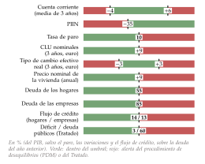
Fuente: Elaboración propia a partir de Comisión Europea (2025a; Unión Europea, 2012). Qué hay que ver: en verde, la zona sin alerta; en rojo, la que dispara la alerta del procedimiento de desequilibrios o del Tratado. Son señales de alerta, no obligaciones.
A.1. Indicadores y umbrales de referencia
Cada indicador con su cálculo, su referencia y el tema donde se estudia. Las referencias se separan siempre en 2 columnas:
oficial: fijada por una norma o por una institución (Tratado, reglamentos fiscales, Basilea III, cuadro de indicadores del procedimiento de desequilibrios macroeconómicos de la Comisión, objetivo del BCE), con su fuente;
orientativa: regla práctica o referencia supervisora o de mercado, sin consecuencias legales; sirve para ordenar el análisis, nunca para afirmar nada con rotundidad.
Los umbrales del procedimiento de desequilibrios (PDM) son de alerta, no obligaciones, y son los del cuadro revisado que se aplica desde el informe del mecanismo de alerta de 2025 (Comisión Europea, 2025a; Eurostat, 2025b).
| Indicador | Cálculo | Referencia oficial | Referencia orientativa | Tema |
|---|---|---|---|---|
| Crecimiento del PIB real | \(\gamma_Y\) | — | \(<0\) contracción; 0-1 % estancamiento; 1-2 % moderado; 2-3 % por encima del potencial; \(\geq3~\%\) sólido (avanzadas) | [ver tema 3.A.30] |
| Brecha de producción | \((Y-Y^p)/Y^p\times100\) | : producción en su potencial | Su variación en puntos: \(\gamma_Y-\gamma_{Y^p}\) | [ver tema 4.B.4] |
| Contribución al crecimiento | \(\frac{X_{t-1}}{Y_{t-1}}\gamma_{X,t}\) | — | En pp; interna procíclica, externa contracíclica | [ver tema 3.A.30] |
| PIB frente a RNB | RNB \(=\) PIB \(+\) rentas primarias netas | — | RNB \(<\) PIB: deudor neto o mucha IED | [ver tema 3.B.11] |
| PMI | índice de difusión | \(>50\): la actividad crece frente al mes anterior | [ver tema 3.A.42] | |
| Sentimiento económico (ESI) | encuestas | (media de largo plazo) | — | [ver tema 3.A.42] |
| Pendiente de la curva de tipos | tipo a largo \(-\) tipo a corto | — | Negativa: anticipa recesión | [ver tema 3.B.24] |
| Tasa de paro | \(u=U/A\) | PDM: 10 % (15-74 años) | Pleno empleo en avanzadas: 3-6 %; NAWRU de la Comisión | [ver tema 3.A.28] |
| Tasa de actividad | \(A/P_{16}\) (INE); 15-64 (Eurostat, OCDE) | PDM: caída de más de 0,2 pp en 3 años | Comparar con la misma edad | [ver tema 4.A.16] |
| Productividad aparente | \(\gamma_Y-\gamma_L\) | — | Puede subir de forma espuria al destruir empleo | [ver tema 3.A.45] |
| CLU nominales | \(\gamma_W-\gamma_{\mathrm{PAT}}\) | PDM: \(+9~\%\) en 3 años (euro), \(+12~\%\) (resto), por hora | En el euro, en torno al 2 % anual mantiene estables los reales | [ver tema 4.A.22] |
| CLU reales y margen | \(\gamma_{\mathrm{CLU}}-\gamma_P\); \(\gamma_P-\gamma_{\mathrm{CLU}}\) | — | CLU reales al alza: menos margen y empleo | [ver tema 3.A.28] |
| Inflación (IPC, IAPC) | \(\pi_t\) | BCE: 2 % simétrico a medio plazo | Mirar subyacente, efecto base y expectativas | [ver tema 3.A.41] |
| IPC frente a deflactor | \(\pi^{\mathrm{IPC}}-\gamma_P\) | — | \(>0\): inflación importada; \(<0\): mejora de la RRI | [ver tema 3.A.30] |
Fuente: PDM: Comisión Europea (2025a); BCE: Banco Central Europeo (2025b); NAWRU: Comisión Europea (2026); el resto, como en los capítulos I y II. Los indicadores del sistema financiero están en la tabla 9 y la escala de calificaciones, en la tabla 5 (apartado V.3).
| Indicador | Cálculo | Referencia oficial | Referencia orientativa | Tema |
|---|---|---|---|---|
| Tipo de cambio efectivo real | \(q^{ef}\), variación en 3 años | PDM: \(\pm3~\%\) (euro), \(\pm10~\%\) (resto) | Ojo: el BCE lo publica al revés (sube = apreciación) | [ver tema 3.B.13] |
| Resultados de exportación | frente a las avanzadas, en 3 años | PDM: \(-3~\%\) | Cuota que cae sin perder precio: no precio | [ver tema 4.A.22] |
| Apertura | \((X+M)/\mathrm{PIB}\) | — | \(<15\)-20 % cerrada; \(\approx50~\%\) normal; \(>75~\%\) muy abierta | [ver tema 3.B.9] |
| Saldo por cuenta corriente | \(\mathrm{CC}/\mathrm{PIB}\), media de 3 años | PDM: \(-4~\%\) y \(+6~\%\) | Mirar ahorro, inversión y sectores | [ver tema 3.B.11] |
| PIIN | activos \(-\) pasivos exteriores | PDM: \(-35~\%\) del PIB | Mirar instrumentos, plazos y monedas | [ver tema 3.B.12] |
| Deuda externa bruta | pasivos exigibles/PIB | — | % y 200 % (regla práctica; no sirve para el euro) | [ver tema 3.B.29] |
| Reservas | /importaciones; /deuda a corto (vencimiento residual); /M2 | — | meses; 100 % (Greenspan-Guidotti); 20 % de M2 | [ver tema 3.B.22] |
| Deuda externa y su servicio | sobre las exportaciones; servicio: intereses y amortizaciones | — | Miden la capacidad de pago en divisas; mirar la tendencia | [ver tema 3.B.29] |
| Tasa de renovación | desembolsos sobre amortizaciones | — | \(<1\): la financiación se retira | [ver tema 3.B.29] |
| Saldo público | \(b\) | Tratado: \(-3~\%\) del PIB | — | [ver tema 4.B.1] |
| Esfuerzo fiscal | \(\Delta b^{pe}\) | — | \(>0\) contractiva; \(\approx0\) neutral; \(<0\) expansiva | [ver tema 4.B.4] |
| Deuda pública | \(d\) | Tratado: 60 %; baja de 1 pp/año si \(>90~\%\) (0,5 entre 60 y 90 %); estructural hacia \(-1{,}5~\%\) | — | [ver tema 3.A.39] |
| Saldo primario estabilizador | \(\frac{i-\gamma^N}{1+\gamma^N}\,d\) | — | Si \(i>\gamma^N\), superávit necesario | [ver tema 3.A.39] |
| Necesidades brutas de financiación | déficit \(+\) vencimientos a 12 meses | — | Riesgo de liquidez; el FMI las vigila en su análisis de sostenibilidad | [ver tema 3.A.39] |
| Calificación | escala de las agencias | Grado de inversión: BBB\(-\)/Baa3 o mejor (CQS 3 del Eurosistema) | — | [ver tema 4.B.26] |
Fuente: PDM: Comisión Europea (2025a); Tratado y reglas: Unión Europea (2012; Parlamento Europeo y Consejo de la Unión Europea, 2024a; Consejo de la Unión Europea, 2024); reservas: Fondo Monetario Internacional (2011); deuda externa: Fondo Monetario Internacional (2014); necesidades de financiación: Fondo Monetario Internacional (2021a); calificaciones: Banco Central Europeo (2026e).
| Indicador | Cálculo | Referencia oficial | Referencia orientativa | Tema |
|---|---|---|---|---|
| CET1 / Tier 1 / total | recursos propios/APR | ,5/6/8 % + 2,5 % de conservación \(=\) 7/8,5/10,5 %; requisitos totales del MUS: 11,2 % CET1 y 15,6 % total | ABE: CET1 \(>14~\%\) holgado | [ver tema 3.B.27] |
| Apalancamiento | Tier 1/exposición total | % | ABE: \(>8~\%\) holgado; \(<5~\%\) débil | [ver tema 3.B.27] |
| LCR y NSFR | activos líquidos/salidas netas a 30 días; financiación estable | % | ABE (LCR): \(>140~\%\) holgado | [ver tema 3.B.27] |
| Dudosos | dudosos/crédito | Dudoso: más de 90 días de impago | ABE: \(<3~\%\) bajo; \(>8~\%\) alto | [ver tema 4.A.19] |
| ROE | beneficio/patrimonio neto | — | Coste del capital: 8-12 %; ABE: \(>10~\%\) favorable | [ver tema 3.B.1] |
| Eficiencia | gastos/margen bruto | — | ABE: \(<50~\%\) favorable; \(>60~\%\) desfavorable | [ver tema 4.A.19] |
| Créditos/depósitos | crédito/depósitos | — | ABE: \(<100~\%\); \(>150~\%\) desfavorable | [ver tema 4.A.19] |
| Brecha crédito-PIB | crédito/PIB \(-\) tendencia | — | \(>2\) pp: activar el colchón anticíclico | [ver tema 3.B.27] |
| Deuda de hogares y de empresas | consolidada/PIB | PDM: 55 % y 85 % | — | [ver tema 4.A.18] |
| Flujo de crédito | % de la deuda en \(t-1\) | PDM: 14 % (hogares), 13 % (empresas) | — | [ver tema 4.A.18] |
| Precio de la vivienda | variación nominal anual | PDM: \(+9~\%\) | Esfuerzo \(>33~\%\) de la renta; sobrecarga \(>40~\%\) | [ver tema 4.A.11] |
Fuente: PDM: Comisión Europea (2025a); Basilea: Basel Committee on Banking Supervision (2017; Parlamento Europeo y Consejo de la Unión Europea, 2013b; Banco Central Europeo, 2025a); referencias de la ABE: European Banking Authority (2026, 2025); brecha crédito-PIB: Comité de Supervisión Bancaria de Basilea (2010); sobrecarga de la vivienda: Eurostat (2025a).
| CET1 | Tier 1 | Capital total | |
|---|---|---|---|
| Mínimo (Pilar 1) | 4,5 | 6,0 | 8,0 |
| + Colchón de conservación | 2,5 | 2,5 | 2,5 |
| Pilar 1 + conservación | 7,0 | 8,5 | 10,5 |
| + Colchón anticíclico (España: 1 % desde octubre de 2026) | 0-2,5 (en CET1) | ||
| + Colchones sistémicos (mundiales, 1-3,5; otros, hasta 3) y de riesgo sistémico | según la entidad y el país | ||
| + Pilar 2 (P2R) y recomendación (P2G) | según la entidad (revisión supervisora) | ||
| Requisitos y recomendación totales medios del MUS en 2026 | 11,2 | — | 15,6 |
| Ratio de apalancamiento (Tier 1 sobre la exposición total) | 3,0 | ||
| LCR y NSFR | 100 | ||
Fuente: Basel Committee on Banking Supervision (2017); en la UE, Parlamento Europeo y Consejo de la Unión Europea (2013b, 2013a, 2024b); colchón anticíclico de España: Banco de España (2025); requisitos del MUS: Banco Central Europeo (2025a).
| Ratio | España, 2.º trim. 2021 | España, 2.º trim. 2026 | Entidades significativas del MUS, 2026 | UE (ABE), 2026 |
|---|---|---|---|---|
| ROE | 10,86 | 16,05 | 10,73 | 11,3 |
| CET1 | 13,64 | 14,11 | 16,00 | 16,1 |
| Tier 1 | 15,13 | 15,68 | 17,53 | 17,7 |
| Capital total | 17,27 | 18,30 | 20,13 | 20,2 |
| Préstamos dudosos | 3,02 | 2,53 | 2,17 | 1,8 |
| Apalancamiento | 5,94 | 5,60 | — | 5,8 |
| LCR | 211,89 | 171,07 | 154,91 | 158,5 |
| NSFR | — | — | — | 125,7 |
| Créditos/depósitos | 102,13 | 97,17 | — | 106,3 |
| Eficiencia | — | — | 53,06 | 51,5 |
Fuente: 2021: estadísticas supervisoras del Banco de España recogidas por Unicaja Banco (2021); 2026: Banco de España (2026a; Banco Central Europeo, 2026d; European Banking Authority, 2026). Qué hay que ver: entre 2021 y 2026 sube la rentabilidad de la banca española, baja la morosidad y se reducen el LCR y la ratio créditos/depósitos (por debajo del 100 %); frente a la europea, es más rentable pero tiene menos capital de máxima calidad. La ratio de dudosos del Banco de España no es comparable con la de series antiguas.
A.2. Las fórmulas imprescindibles
| Fórmula | En palabras |
|---|---|
| \(\displaystyle \mathrm{OG}_t=\frac{Y_t-Y^p_t}{Y^p_t}\times100\) | Brecha de producción: distancia del PIB a su potencial, en % del potencial |
| \(\displaystyle \Delta\mathrm{OG}_t\approx\gamma_{Y,t}-\gamma_{Y^p,t}\) | La brecha se abre si el PIB crece más que el potencial |
| \(\displaystyle g^{\text{anual}}=(1+g)^4-1\approx4g\) | Tasa anualizada de una tasa trimestral \(g\) |
| \(\displaystyle \gamma_{Y,t}=\sum_j\frac{Z^j_{t-1}}{Y_{t-1}}\,\gamma_{Z^j,t}\) | Contribución de cada componente \(Z^j\) (las importaciones restan): peso por crecimiento, en pp |
| \(\displaystyle \text{Deflactor}=\frac{\text{PIB nominal}}{\text{PIB real}}\times100\) | Precios de lo que se produce dentro (un índice de Paasche) |
| \(\displaystyle \gamma_P\approx\gamma^N-\gamma_Y\) | Crecimiento del deflactor: nominal menos real |
| \(\displaystyle r^{cp}\approx i^{cp}-\pi^{\mathrm{IPC}}\) | Tipo real a corto: nominal a corto menos la inflación del IPC |
| \(\displaystyle r^{lp}\approx i^{lp}-\gamma_P\) | Tipo real a largo: nominal a largo menos el crecimiento del deflactor |
| \(\displaystyle \gamma_{W/\mathrm{IPC}}\approx\gamma_W-\pi^{\mathrm{IPC}}\) | Salario real del trabajador (poder adquisitivo) |
| \(\displaystyle \pi^{12}_t-\pi^{12}_{t-1}\approx\pi^{m}_t-\pi^{m}_{t-12}\) | Efecto base: la tasa mensual que entra menos la que sale |
| \(\displaystyle \%\Delta E\approx\pi-\pi^*\) | PPA relativa: el tipo nominal compensa la diferencia de inflación |
| \(\displaystyle \gamma_{\mathrm{PAT}}=\gamma_Y-\gamma_L\) | Productividad aparente: PIB real menos empleo |
| \(\displaystyle \mathrm{CLU}=\frac{WL}{Y}=\frac{W}{Y/L}\) | Coste laboral unitario: salario nominal por asalariado sobre productividad |
| \(\displaystyle \gamma_{\mathrm{CLU}}=\gamma_W-\gamma_{\mathrm{PAT}}=\gamma_W-(\gamma_Y-\gamma_L)\) | CLU nominales: salarios menos productividad |
| \(\displaystyle \gamma_{\mathrm{CLU}/P}=\gamma_{\mathrm{CLU}}-\gamma_P\) | CLU reales: participación de los salarios en el PIB |
| \(\displaystyle \gamma_{1+\mu}\approx\gamma_P-\gamma_{\mathrm{CLU}}\) | Margen: deflactor menos CLU nominales |
| \(\displaystyle \Delta u_t\approx-0{,}5\,(\gamma_{Y,t}-\gamma_{Y^p,t})\) | Ley de Okun (EE. UU.): el paro baja si se crece por encima del potencial |
Fuente: Elaboración propia a partir de la guía anterior. Notación: \(\gamma\), tasa de variación; \(Y\), PIB real; \(Y^p\), potencial; \(P\), deflactor del PIB; \(W\), remuneración por asalariado; \(L\), empleo.
| Fórmula | En palabras |
|---|---|
| \(\displaystyle \mathrm{CC}+\mathrm{CK}+\mathrm{EO}=\mathrm{CF}\) | Identidad de la balanza de pagos (desarrollada en la ecuación (4)) |
| \(\displaystyle \mathrm{CC}=S-I=(S_P-I_P)+(T-G)\) | Saldo corriente: ahorro menos inversión, privado más público |
| \(\displaystyle \mathrm{PIIN}_t=\mathrm{PIIN}_{t-1}+\mathrm{CF}_t+\mathrm{OV}_t\) | La posición cambia por los flujos y por las otras variaciones (valoración) |
| \(\displaystyle \mathrm{CC}^{\text{sin int.}}=\frac{i^*-\gamma^N}{1+\gamma^N}\,D^*\) | Saldo corriente sin intereses que estabiliza la deuda externa |
| \(\displaystyle \text{pendiente}=i^{lp}-i^{cp}\) | Curva de tipos: diferencial entre el tipo a largo y el tipo a corto |
| \(\displaystyle b^{ca}=b-\varepsilon\cdot\mathrm{OG}\) | Saldo ajustado por el ciclo |
| \(\displaystyle b^{pe}=b^{ca}-\text{puntuales}+\text{intereses}\) | Saldo estructural primario |
| \(\displaystyle \text{esfuerzo}=\Delta b^{pe}\) | Tono fiscal: variación del saldo estructural primario |
| \(\displaystyle \tau-g=\frac{i-\gamma^N}{1+\gamma^N}\,d\) | Saldo primario que estabiliza la deuda |
| \(\displaystyle \mathrm{ROE}=\mathrm{ROA}\times\frac{\text{activo}}{\text{patrimonio}}\) | El apalancamiento eleva el ROE de la banca |
Fuente: Elaboración propia a partir de la guía anterior. Notación: \(i\), tipo nominal; \(\gamma^N\), crecimiento del PIB nominal; \(d\), deuda pública sobre el PIB; \(D^*\) e \(i^*\), deuda externa sobre el PIB y su tipo implícito.
A.3. Cálculos tipo
Aunque el enunciado no pida ningún cálculo, el análisis los usa (contribuciones, productividad, CLU, brecha, esfuerzo fiscal). Cuando se pide, se escribe siempre el procedimiento: la fórmula, los datos que se usan y el resultado con su unidad (%, puntos porcentuales, % del PIB).
Primero, la tabla de las fórmulas imprescindibles; después, un cuadro por bloque con la fórmula destacada, qué significa cada término y un ejemplo.
VI.2.1. Ciclo y demanda
Contribución al crecimiento
De dónde sale: se parte de la identidad de la demanda agregada, \[Y_t=\underbrace{C_t+I_t+G_t}_{\text{demanda interna}}+\underbrace{(X_t-M_t)}_{\text{demanda externa}} .\]
Se le resta la del año anterior: \[\underbrace{Y_t-Y_{t-1}}_{\Delta Y_t}=\underbrace{(C_t-C_{t-1})}_{\Delta C_t}+\underbrace{(I_t-I_{t-1})}_{\Delta I_t}+\underbrace{(G_t-G_{t-1})}_{\Delta G_t}+\underbrace{(X_t-X_{t-1})}_{\Delta X_t}-\underbrace{(M_t-M_{t-1})}_{\Delta M_t} .\]
Se divide por \(Y_{t-1}\): \[\underbrace{\frac{\Delta Y_t}{Y_{t-1}}}_{\gamma_{Y,t}}=\underbrace{\frac{\Delta C_t}{Y_{t-1}}+\frac{\Delta I_t}{Y_{t-1}}+\frac{\Delta G_t}{Y_{t-1}}}_{\text{contribución de la demanda interna}}+\underbrace{\frac{\Delta X_t}{Y_{t-1}}-\frac{\Delta M_t}{Y_{t-1}}}_{\text{contribución de la demanda externa}} .\]
Y se multiplica y divide cada término por el valor del componente en \(t-1\) (por ejemplo, \(\frac{\Delta C_t}{Y_{t-1}}=\frac{C_{t-1}}{Y_{t-1}}\cdot\frac{\Delta C_t}{C_{t-1}}\)):
\[\gamma_{Y,t}=\frac{C_{t-1}}{Y_{t-1}}\gamma_{C,t}+\frac{I_{t-1}}{Y_{t-1}}\gamma_{I,t}+\frac{G_{t-1}}{Y_{t-1}}\gamma_{G,t}+\frac{X_{t-1}}{Y_{t-1}}\gamma_{X,t}-\frac{M_{t-1}}{Y_{t-1}}\gamma_{M,t}\]
En palabras: el crecimiento del PIB es la suma de las contribuciones de los componentes de la demanda, y cada contribución es el peso del componente en el año anterior por su crecimiento de este año. Depende de las 2 cosas.
Ejemplo: si el consumo pesa el 55 % del PIB y crece un 2 %, contribuye \(0{,}55\times2=1{,}1\) puntos porcentuales.
Cuidado: con volúmenes encadenados la suma no es exacta; si el cuadro da las contribuciones, se usan esas. Las existencias también contribuyen (si no se dan, se suponen nulas).
Brecha de producción y PIB potencial
Si el cuadro da la brecha y el crecimiento, se deduce el crecimiento del potencial; si da el crecimiento real y el potencial, se proyecta la brecha:
\[\gamma_{Y^p,t}\approx\gamma_{Y,t}-(\mathrm{OG}_t-\mathrm{OG}_{t-1}),\qquad \mathrm{OG}_t\approx\mathrm{OG}_{t-1}+\gamma_{Y,t}-\gamma_{Y^p,t}\]
Ejemplo: con una brecha de \(-1~\%\), un crecimiento del 3 % y un potencial del 1,5 %, la brecha pasa a \(+0{,}5~\%\): se cierra y se abre por arriba.
Tasas a partir de datos trimestrales
Tasa media anual: la media de los 4 niveles del año frente a la del año anterior (no la suma de las tasas intertrimestrales).
Tasa anualizada de una tasa trimestral \(g\):
\[g^{\text{anual}}=(1+g)^4-1\approx4g\]
Ejemplo: con \(g=0{,}5~\%\), en torno al 2 % anual.
VI.2.2. Precios y tipos de interés
Deflactor del PIB
Es el cociente entre el PIB a precios corrientes y el PIB en volumen; su tasa de variación es, aproximadamente, la diferencia de las tasas:
\[\text{Deflactor}_t=\frac{\text{PIB nominal}_t}{\text{PIB real}_t}\times100\quad\Longrightarrow\quad\gamma_{P,t}\approx\gamma^N_t-\gamma_{Y,t}\]
Ejemplo: si el PIB nominal crece un 5 % y el real un 2 %, el deflactor crece en torno a un 3 %.
Tipos de interés reales
El tipo real es el nominal menos la inflación esperada; a falta de expectativas, se usa la del periodo (diciéndolo):
\[r^{cp}_t\approx i^{cp}_t-\pi^{\mathrm{IPC}}_t,\qquad r^{lp}_t\approx i^{lp}_t-\gamma_{P,t}\]
Términos: el tipo a corto se deflacta con el IPC (lo que importa para los hogares); el tipo a largo, mejor con el deflactor del PIB (lo que importa para las empresas). Las alternativas para el largo plazo están en el apartado I.4.
Ejemplo: un tipo nominal del 1 % con una inflación del 3 % da un tipo real de \(-2~\%\): política monetaria expansiva aunque el nominal sea positivo.
Salario real
Con el IPC interesa el poder adquisitivo del trabajador; con el deflactor, el coste para la empresa:
\[\gamma_{W/\mathrm{IPC}}\approx\gamma_W-\pi^{\mathrm{IPC}}\quad(\text{trabajador}),\qquad\gamma_{W/P}\approx\gamma_W-\gamma_P\quad(\text{empresa})\]
Índices y series
Índice simple: el valor de cada periodo dividido por el del periodo base, por 100 (el periodo base vale 100). Los índices no tienen unidades, lo que facilita comparar series.
Cambio de base: con una regla de 3, sin necesidad de la serie original (exacta solo en los índices de base fija; los encadenados se reescalan).
Índices encadenados: la base es móvil (cada periodo se compara con el anterior).
Si el dato viene en porcentaje, no es el índice sino su tasa de variación [ver tema 4.A.1].
VI.2.3. Trabajo y costes
Productividad, CLU y margen
En niveles: \(\mathrm{CLU}=\frac{WL}{Y}=\frac{W}{Y/L}\) (salario nominal sobre productividad); el CLU real, \(\frac{WL}{PY}\), es la participación de la remuneración de los asalariados en el PIB.
Las 4 fórmulas encadenadas (gráfico 11), con \(W\) la remuneración por asalariado (el salario medio, si la tasa de asalarización es 1), \(L\) el empleo (o las horas), \(P\) el deflactor del PIB y \(\mu\) el margen sobre los costes laborales:
\[\begin{gathered}\gamma_{\mathrm{PAT}}=\gamma_Y-\gamma_L\quad\to\quad\gamma_{\mathrm{CLU}}=\gamma_W-\gamma_{\mathrm{PAT}}\\\to\quad\gamma_{\mathrm{CLU}/P}=\gamma_{\mathrm{CLU}}-\gamma_P\quad\to\quad\gamma_{1+\mu}\approx\gamma_P-\gamma_{\mathrm{CLU}}\end{gathered}\]
| Qué se calcula | Cálculo | Resultado |
|---|---|---|
| Datos | PIB real \(+2\); empleo \(+1{,}5\); remuneración por asalariado \(+3\); deflactor \(+2\) | (%) |
| Productividad aparente | \(2-1{,}5\) | \(+0{,}5~\%\) |
| CLU nominales | \(3-0{,}5\) | \(+2{,}5~\%\) |
| CLU reales | \(2{,}5-2\) | \(+0{,}5~\%\) |
| Margen | \(2-2{,}5\) | \(-0{,}5~\%\) |
Fuente: Elaboración propia. Qué hay que ver: los salarios crecen más que la productividad más la inflación, los CLU reales suben y el margen se estrecha.
VI.2.4. Sector exterior
Balanza de pagos, ahorro e inversión
La identidad completa es la de la ecuación (4). De ella salen las tasas de inversión y de ahorro nacional:
\[\frac{S}{\mathrm{PIB}}=\frac{I}{\mathrm{PIB}}+\frac{\mathrm{CC}}{\mathrm{PIB}}\]
Ejemplo: con una tasa de inversión del 20 % y un déficit corriente del 3 % del PIB, la tasa de ahorro nacional es del 17 %.
Posición de inversión internacional
La PIIN cambia por los flujos de la cuenta financiera y por las otras variaciones (precios y tipo de cambio):
\[\mathrm{PIIN}_t=\mathrm{PIIN}_{t-1}+\mathrm{CF}_t+\mathrm{OV}_t\quad\Longrightarrow\quad\mathrm{OV}_t=\Delta\mathrm{PIIN}_t-\mathrm{CF}_t\]
En porcentaje del PIB hay que añadir el efecto del crecimiento nominal (ecuación (5)).
Ejemplo: si la PIIN empeora 5 puntos y la cuenta financiera es de \(-2\), el efecto valoración es de \(-3\) puntos.
Saldo corriente que estabiliza la deuda externa
Con \(D^*\) la deuda externa sobre el PIB, \(i^*\) su tipo implícito (intereses pagados sobre la deuda media) y \(\gamma^N\) el crecimiento del PIB nominal, la ratio no crece si el saldo corriente sin intereses es
\[\mathrm{CC}^{\text{sin int.}}=\frac{i^*-\gamma^N}{1+\gamma^N}\,D^*\]
Ejemplo: con una deuda externa del 60 % del PIB, un tipo implícito del 5 % y un crecimiento nominal del 3 %, \(\frac{0{,}05-0{,}03}{1{,}03}\times60\approx1{,}2\): hace falta un superávit corriente sin intereses de algo más de 1 punto del PIB.
Exportaciones y renta exterior
Con competitividad constante, las exportaciones crecen con la renta del resto del mundo según su elasticidad:
\[\gamma_X\approx\varepsilon_{X,Y^*}\,\gamma_{Y^*}\]
Ejemplo: con una elasticidad de 1,1 y un comercio mundial que crece un 7,3 %, las exportaciones crecen en torno a un 8 %.
VI.2.5. Cuentas públicas
Saldos y esfuerzo fiscal
Del saldo total al estructural primario, y su variación:
\[b^{pe}=b-\varepsilon\cdot\mathrm{OG}-\text{medidas puntuales}+\text{intereses},\qquad\text{esfuerzo}_t=b^{pe}_t-b^{pe}_{t-1}\]
Términos: \(\varepsilon\), semielasticidad del saldo a la brecha (0,5-0,6 en la UE); las medidas puntuales se restan con su signo; los intereses se suman porque el saldo primario los excluye.
Ejemplo: un saldo de \(-4~\%\) con una brecha de \(-2~\%\) (\(\varepsilon=0{,}5\)) e intereses del 2 % da \(b^{pe}=-4+1+2=-1~\%\); si el año anterior era \(-2~\%\), el esfuerzo es de \(+1\) punto (contractivo).
Estabilizadores automáticos: \(b-b^{ca}=\varepsilon\cdot\mathrm{OG}\) mide cuánto del saldo explica el ciclo.
Saldo primario que estabiliza la deuda
Con \(\tau-g\) el superávit primario, \(i\) el tipo implícito, \(\gamma^N\) el crecimiento nominal y \(d\) la deuda sobre el PIB, la ratio se estabiliza si
\[\tau-g=\frac{i-\gamma^N}{1+\gamma^N}\,d\]
Ejemplo: con una deuda del 100 % del PIB, un tipo implícito del 3 % y un crecimiento nominal del 4 %, \(\frac{0{,}03-0{,}04}{1{,}04}\times100=-0{,}96\): la deuda se estabiliza con un déficit primario de casi 1 punto.
A.4. Lectura de series
Antes de analizar, conviene entender las características básicas de los datos del país. Según su dimensión temporal, hay 3 tipos:
series de sección cruzada: el comportamiento de distintos agentes en un mismo momento; se analizan comparando las diferencias entre ellos;
series temporales: una misma unidad (un país) observada en distintos momentos;
datos de panel: combinan las 2 dimensiones (varios agentes a lo largo de varios periodos), lo que aporta información que no da un único corte.
El dictamen trabaja con series temporales.
Cómo se tratan: las series macroeconómicas crecen o decrecen de forma más o menos continua, vienen en unidades que no siempre permiten compararlas, están afectadas por la inflación y, si son a precios constantes, no siempre tienen el mismo año base. Por eso hay que estudiar su evolución (cuándo se acelera, se frena o cambia de signo), homogeneizar o quitar las unidades, eliminar el efecto de la inflación y llevarlas a una misma base. Los instrumentos:
proporciones: un sumando dividido por el total (entre 0 y 1; todas suman 1);
porcentajes: la proporción por 100; ni proporciones ni porcentajes tienen unidades, y permiten comparar totales medidos en unidades distintas;
índices: comparan con un periodo base, dentro de una serie o entre series; simples, con cambio de base o encadenados (anexo A.3.2);
tasas: los porcentajes e índices referidos a incrementos (la tasa de variación).
B. Casos frecuentes y expresiones útiles
B.1. Análisis de casos frecuentes
Choques y situaciones concretas que han aparecido en los dictámenes y que se analizan con las herramientas de cada capítulo: la demografía, la migración y el salario mínimo; los aranceles de un tercero; un choque externo o geopolítico; un brote de inflación; la lectura de una curva de Beveridge; y los fondos europeos en la balanza de pagos. El caso de un sector dominante (petróleo y materias primas) está en el cuerpo (apartado I.5).
Demografía, migración y salario mínimo
Demografía: el envejecimiento (más población de 65 y más años por cada persona de 15 a 64) reduce el crecimiento del empleo y del PIB potencial si no lo compensan la productividad, la participación o la inmigración; crea escasez de mano de obra en algunos sectores (vacantes altas con paro bajo) y eleva el gasto en pensiones, sanidad y cuidados (Comisión Europea, 2024a). Medidas de oferta: más actividad de mujeres y mayores, inmigración ordenada e integrada, capital humano y automatización, y pensiones ligadas a la esperanza de vida [ver tema 4.A.2].
Un endurecimiento de los visados de trabajo: menos oferta de trabajo, más tensión salarial en los sectores con más inmigrantes, más vacantes sin cubrir, menos PIB potencial y, si los inmigrantes eran contribuyentes netos, peor saldo público. Al revés, la inmigración eleva primero el paro y después el crecimiento potencial.
Una subida del salario mínimo sube los salarios bajos y comprime la distribución, eleva el consumo (alta propensión a consumir) y los CLU de los sectores intensivos en salarios bajos (algo de inflación y de pérdida de competitividad). Su efecto sobre el empleo depende del poder de mercado de los empleadores (con monopsonio puede no reducirlo) y del tamaño de la subida respecto al salario mediano: la evidencia encuentra efectos pequeños con subidas moderadas (Card y Krueger, 1994; Manning, 2021) [ver tema 3.A.17]. El saldo público mejora por las cotizaciones de quienes conservan el empleo y empeora por los que lo pierden.
Aranceles y fragmentación del comercio
Medir la protección: el arancel medio simple da el mismo peso a cada partida (sencillo y comparable, pero cuenta igual una partida que apenas se importa); el medio ponderado por el comercio pesa por lo que se importa (más representativo, pero infravalora los aranceles muy altos, que reducen precisamente lo que se importa).
Efecto de los aranceles de un tercero sobre el país (como los de Estados Unidos desde 2025 (Fondo Monetario Internacional, 2026d)):
directo: caen las exportaciones a ese destino, según su peso y la elasticidad de cada producto;
indirecto: por las cadenas de valor y la menor demanda mundial;
desviación de comercio: productos de terceros que ya no entran en el mercado protegido llegan a otros, abaratan las importaciones y presionan a los productores locales;
incertidumbre, que retrasa la inversión, y tipo de cambio, que cambia la competitividad y la inflación.
Cómo se lee en el cuadro: peso del destino en las exportaciones, evolución reciente de esas exportaciones, inflación de los bienes importados, confianza y PMI de manufacturas. En la guerra comercial de 2018-2019, los aranceles de EE. UU. se trasladaron casi por completo a los precios que pagaron sus importadores y consumidores (Amiti, Redding y Weinstein, 2019; Fajgelbaum et al., 2020).
Integración comercial asimétrica: con más apertura ganan los sectores con ventaja comparativa y pierden los manufactureros menos productivos; se recomiendan plazos de desarme, ayudas a la reasignación y formación [ver tema 3.B.7] [ver tema 3.B.33] [ver tema 3.B.41].
Un choque externo o geopolítico: los canales
Una guerra, una crisis energética o una escalada arancelaria llegan a una economía por 6 canales, y la pregunta del tipo «¿cómo afecta el conflicto a esta economía?» se contesta recorriéndolos con el cuadro (gráfico 31) (Fondo Monetario Internacional, 2022c):
materias primas: energía y alimentos más caros; inflación importada y pérdida de renta real en un importador neto (IPC por encima del deflactor, peor relación real de intercambio);
comercio y cadenas de valor: menos exportaciones al país afectado, cuellos de botella, desviación de comercio;
financiero: huida hacia la calidad, primas de riesgo, tipo de cambio y salidas de capital;
confianza e incertidumbre: se aplaza la inversión y sube el ahorro (PMI, indicadores de confianza);
migratorio: llegada de desplazados, con efectos sobre la oferta de trabajo, el paro y el potencial;
institucional: sanciones, bloques comerciales, más gasto en defensa y presión sobre las cuentas públicas.
El peso de cada canal depende de la estructura del país: su dependencia energética, el peso del destino en sus exportaciones, su posición financiera exterior y su margen fiscal.
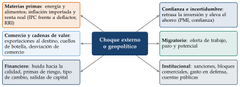
Fuente: Elaboración propia a partir de Fondo Monetario Internacional (2022c). Qué hay que ver: cada canal tiene su fila en el cuadro; el análisis consiste en ver cuáles se activan en este país y con qué fuerza.
Un brote de inflación: resistencia, cambio de tendencia y última milla
Las causas estructurales de la inflación baja de las décadas anteriores a 2021: la globalización y las cadenas de valor (importaciones baratas y más competencia), la digitalización, el envejecimiento (más ahorro) y la credibilidad de los bancos centrales, que anclaba las expectativas. A ellas se sumaban causas coyunturales: holgura en los mercados y energía barata (Banco de Pagos Internacionales, 2022).
El repunte: primero, la subida de las materias primas; después, una demanda mayor que la oferta, por los estímulos, el ahorro embalsado y el paso del gasto de servicios a bienes, que chocó con cuellos de botella en el transporte y los suministros; y al final, la energía tras la invasión de Ucrania.
Resistencia inicial y cambio de tendencia de un brote inflacionista: al principio, choques de oferta (energía, cuellos de botella) con demanda fuerte (ahorro acumulado, estímulos) y traspaso de la depreciación; después, la bajada de la energía, el efecto base, el endurecimiento monetario y la normalización de las cadenas de suministro.
La «última milla» de la desinflación
La «última milla» de la desinflación: tras bajar la energía y los bienes, lo difícil es pasar del 3 al 2 %, porque la inflación de los servicios depende de salarios que se ajustan con retraso. El riesgo es bajar tipos demasiado pronto (repunte) o demasiado tarde (recesión innecesaria) (Banco de Pagos Internacionales, 2024).
Una curva de Phillips plana: una lección de prudencia
Durante los años previos a la pandemia la inflación apenas reaccionaba al paro: la curva de Phillips parecía muy plana, por la globalización, la automatización, el menor poder de negociación de los trabajadores y unas expectativas bien ancladas. Con esa lectura, en otoño de 2021 el FMI esperaba que el repunte de la inflación fuera temporal y que volviera a los niveles previos a mediados de 2022 (Fondo Monetario Internacional, 2021c); la inflación siguió subiendo durante 2022.
La lección para el dictamen: una relación que ha funcionado durante años puede romperse cuando cambia el tipo de choque. Mejor condicionales que predicciones rotundas.
Cómo se lee una curva de Beveridge: España, 1994-2022. Con la serie trimestral de vacantes sobre activos y la tasa de paro (Boscá et al., 2023; Fondo Monetario Internacional, 2023b):
entre 1994 y 2007 la economía recorre la curva hacia arriba y a la izquierda (el paro baja del 22 al 8 % y las vacantes suben): es el ciclo expansivo;
entre 2007 y 2009 la curva se desplaza hacia fuera: más desajuste y peor emparejamiento entre parados y vacantes;
entre 2010 y 2013 la economía se mueve a lo largo de la curva hacia abajo (el paro llega al 26 %), por el ciclo (Boscá et al., 2023);
entre 2013 y 2019 deshace el camino hacia el origen: a principios de 2020 la relación entre vacantes y paro era la del ciclo anterior a la Gran Recesión (la más parecida, la de 1999) (Boscá et al., 2023);
desde finales de 2021 el mercado está más tensionado que en 2019, y en la segunda mitad de 2022 suben las vacantes (del 0,58 al 0,66 %) con algo más de paro (del 12,5 al 13 %), lo que aleja algo la economía de la curva inicial. La ratio vacantes/parados pasó de 0,03 de media en 2019 a 0,05 a finales de 2022: más presión sobre los salarios y la inflación (Boscá et al., 2023).
Los fondos europeos en la balanza de pagos. Las subvenciones del Mecanismo de Recuperación y Resiliencia se anotan en 2 momentos: cuando llegan los fondos, en la cuenta financiera (otra inversión del banco central, frente a un pasivo con la Comisión), y cuando se gastan, como transferencia de la Comisión, en la renta secundaria si financian gasto corriente o en la cuenta de capital si financian inversión. Los préstamos del Mecanismo son deuda frente a las instituciones de la UE (otra inversión de las administraciones públicas) y sus intereses van a la renta primaria (Banco de España, 2021). Por eso los fondos pueden explicar saltos de la cuenta de capital y de la capacidad de financiación.
Una crisis bancaria: liquidez, solvencia y resolución
Lo primero, distinguir liquidez de solvencia: un banco con problemas de liquidez (no puede atender las retiradas, pero sus activos valen más que sus pasivos) se salva con un prestamista de última instancia, que presta sin límite contra buenas garantías y a un tipo de penalización (Bagehot, 1873), y con una garantía de depósitos creíble, que evita el pánico (Diamond y Dybvig, 1983). Un banco insolvente (pierde más de lo que tiene de capital) no se arregla con liquidez: hay que recapitalizarlo o resolverlo. Estas redes funcionan peor si los depósitos están en dólares o si se teme una devaluación.
Las herramientas de resolución (Parlamento Europeo y Consejo de la Unión Europea, 2014a):
una auditoría externa de los activos, para saber cuánto vale de verdad el balance y recuperar la credibilidad;
la venta del negocio o un banco puente, que mantiene las funciones críticas (depósitos, pagos) mientras se busca comprador;
la segregación de activos dañados en una sociedad de gestión (un «banco malo»);
la recapitalización interna (bail-in): las pérdidas las absorben, por este orden, los accionistas, los tenedores de deuda subordinada, los de deuda sénior y, en último extremo, los depósitos no garantizados, antes que el contribuyente;
en casos extremos, y de forma temporal, controles a la salida de capitales (Fondo Monetario Internacional, 2012).
B.2. Expresiones útiles para redactar
Plantillas para no quedarse en blanco; los puntos suspensivos se rellenan con los datos del cuadro. Ninguna sustituye al análisis. Los párrafos modelo más largos, por indicador, están en los cuadros Ejemplo de redacción de cada capítulo.
Diagnóstico:
«La economía muestra un crecimiento sólido pero desequilibrado, apoyado en la demanda interna y con una necesidad de financiación exterior creciente».
«Parece tratarse de una economía avanzada en recuperación, con la brecha de producción aún negativa, la inflación contenida y un margen fiscal reducido».
Ciclo:
«El cuadro recoge más de un ciclo: …».
«La brecha de producción se cierra en … y se abre de nuevo en …» (la brecha se cierra o se abre; el PIB se acelera o se desacelera).
«la recuperación tiene forma de uve: …».
Contribuciones:
«De los … puntos que crece el PIB, … los aporta la demanda interna y … la externa».
«La demanda externa amortigua la caída del PIB, más por el desplome de las importaciones que por el empuje de las exportaciones».
«La demanda interna es procíclica y la externa, contracíclica».
«La demanda interna es la protagonista absoluta durante toda la serie»; «la demanda externa muestra un comportamiento más errático e imprevisible que la nacional».
«Indaguemos en los componentes de la demanda interna (consumo e inversión, públicos y privados)».
Prudencia:
«Con la información disponible, …»; «esta evolución sería coherente con …, aunque no puede descartarse …»; «a falta de datos sobre …, cabe suponer que …, lo que habría que confirmar».
«Aunque los agentes deciden con el tipo real, la fuerte subida del tipo nominal al final de la serie indica un endurecimiento de la política monetaria».
Interpretación: «más que …, lo que llama la atención es …»; «este dato es especialmente relevante porque …».
Sector exterior:
«Los desequilibrios externos suelen ser síntoma de desequilibrios internos».
«El déficit exterior refleja un exceso de inversión sobre el ahorro, cuyo origen parece estar en el sector …».
«La mejora de la posición de inversión internacional, pese a la necesidad de financiación, se debería a efectos valoración y al crecimiento del PIB nominal».
Políticas:
«El tono de la política fiscal, medido por la variación del saldo estructural primario, habría sido expansivo en …».
«Aunque el tipo nominal sube, el tipo real sigue siendo negativo: la política monetaria seguiría siendo acomodaticia».
Recomendaciones: «parece necesaria una consolidación fiscal, pero gradual, para no lastrar la recuperación»; «a corto plazo …; a medio y largo plazo …».
Cierre: «en conclusión, la economía afronta … retos; cómo los aborde determinará su crecimiento en los próximos años».
VI.2.6. Párrafos modelo por bloque
Ejemplos de redacción de la guía anterior que completan los de cada capítulo, en el orden de la guía y con años y cifras genéricos (20xx).
Perfil cíclico
Ejemplo de redacción: la frase ejecutiva del FMI sobre España (consulta del artículo IV de 2022, publicada en 2023). «Dos años después de la pandemia, la economía española se enfrenta a nuevos obstáculos debido a la invasión de Ucrania por parte de Rusia. La actividad económica ha sido resistente hasta ahora, apoyada por un fuerte rebote del turismo y de otros servicios, así como por medidas de apoyo oportunas. Sin embargo, los precios elevados de la energía y los alimentos a nivel global, la menor demanda de los socios comerciales, la disminución de la confianza de los consumidores y empresas, y el aumento de los tipos de interés han ralentizado la recuperación de la producción. Se proyecta que el crecimiento se moderará hasta el 1,1 % en 2023. Los riesgos para las perspectivas incluyen condiciones financieras más ajustadas de lo esperado, una demanda global más débil y mayores aumentos en los precios de la energía europeos» (Fondo Monetario Internacional, 2023b) (traducción propia).
Ejemplo de redacción: un sector dominante y el tejido productivo. «Según el cuadro, esta economía depende mucho del turismo: en 20xx, el xx,x % del PIB tiene su origen en este sector, frente a una media de la UE mucho menor. Eso la hace más vulnerable a una pandemia, porque el turismo es intensivo en interacción social y depende de la movilidad de las personas. Además, el sector concentra más empleo joven, temporal, poco formado y con salarios bajos, lo que aumenta la probabilidad de un impacto desigual de la crisis. Su vulnerabilidad se aprecia en las caídas del VAB de sus ramas: en 20xx la producción cayó a 2 dígitos en la hostelería y el ocio, mientras el sector primario apenas se redujo un x,x %.»
«En cuanto al tejido productivo, uno de los gráficos muestra una gran fragmentación frente a la media de la UE. La atomización empresarial puede hacer al país especialmente vulnerable a las crisis: las empresas pequeñas tienen más dificultades para adaptarse (venta en línea, teletrabajo), además de sus limitaciones habituales para innovar, formarse, internacionalizarse y financiarse, es decir, para impulsar los factores que elevan la productividad.»
Mercado de trabajo
Ejemplo de redacción: el BCE sobre el mercado de trabajo de la zona del euro (Informe Anual de 2022). «El mercado de trabajo siguió recuperándose con fuerza de la pandemia en paralelo al repunte de la actividad económica de la zona del euro. En el cuarto trimestre de 2022, el empleo total y las horas totales trabajadas habían superado los niveles del cuarto trimestre de 2019 en un 2,3 % y un 0,6 %, respectivamente. La tasa de actividad del colectivo con edades comprendidas entre 15 y 74 años se elevó hasta el 65,2 % en el cuarto trimestre de 2022, 0,5 puntos porcentuales por encima de la registrada en el cuarto trimestre de 2019. En consonancia con el crecimiento del empleo, la tasa de paro continuó descendiendo, desde el 6,9 % en enero de 2022, un nivel ya históricamente bajo, hasta el 6,7 % al final del año. El recurso a los programas de mantenimiento del empleo, que habían limitado los despidos durante la crisis, se redujo, y gran parte de los trabajadores que se habían acogido a estos programas retomaron su jornada habitual. El mercado de trabajo de la zona del euro mantuvo su fortaleza, en general, en 2022, pese a la guerra de Rusia en Ucrania, como indicaban también las cifras persistentemente elevadas de vacantes de empleo hacia el final del año. Con todo, la evolución del mercado laboral y los indicadores de opinión de demanda de trabajo se moderaron en el segundo semestre del año» (Banco Central Europeo, 2023).
Ejemplo de redacción: la demanda de trabajo y el paro persistente. «La demanda de trabajo se podría aproximar (salvando los problemas de endogeneidad) con las horas trabajadas: caen en los primeros años de la crisis, crecen tímidamente después, se derrumban en el año de la pandemia y se recuperan con fuerza. Es difícil identificar un único factor detrás. El crecimiento del PIB real parece correlacionar bien con la creación de empleo en horas, como cabía esperar, y también las exportaciones, lo que mostraría una economía con vocación exportadora. Ni el crecimiento de los CLU por hora ni el de los márgenes (aproximados por la diferencia entre el deflactor y los CLU) parecen explicar a simple vista la creación de empleo, aunque el persistente aumento de los CLU y la caída continua de los márgenes podrían estar detrás de sus tímidas tasas.»
«Llama la atención el paro persistentemente alto de esta economía, cuyo mínimo de la serie es el xx % de 20xx. La falta de dinamismo podría tener varias causas: salarios que crecen por encima de la productividad, una rentabilidad empresarial en caída continua o factores institucionales que limitan la flexibilidad del mercado de trabajo (indexación de salarios, costes de contratación y despido elevados, dualidad laboral).»
Sector exterior
Ejemplo de redacción: los determinantes de exportaciones e importaciones. «Destaca el crecimiento continuo de las exportaciones de bienes y servicios, solo interrumpido por la brusca caída de 20xx, debida probablemente a las limitaciones del comercio mundial, a la ruptura de las cadenas globales de valor y a la caída de la renta de los socios. Antes de esa caída, las exportaciones parecen responder a la competitividad-precio: crecen más cuando el tipo de cambio efectivo real se deprecia, como predice la teoría. El crecimiento más moderado de 20xx y 20xx sería compatible con un repliegue de las empresas hacia el mercado nacional: la economía ha dejado atrás la crisis y funciona a pleno rendimiento, a juzgar por la brecha de producción, y ante una demanda interna consolidada las empresas podrían reorientar sus ventas al mercado nacional, más fácil y barato de atender.»
«Las importaciones crecen cuando crece la economía y caen cuando cae (salvo en 20xx), lo que sugiere que la renta interior podría explicarlas. El tipo de cambio efectivo real no parece, a simple vista, un determinante clave de su evolución.»
Política monetaria
Ejemplo de redacción: la relación con el ciclo y la valoración de la política monetaria. «En cuanto a su relación con el ciclo, conviene evitar conclusiones tajantes basadas en el tipo real, dada la cota cero. Sí parece deducirse una compra masiva de activos durante la crisis, lo que sería una política claramente contracíclica.»
«Por último, como la brecha de producción es negativa durante casi toda la serie y la inflación se mantiene persistentemente baja, no parece arriesgado concluir que la política monetaria expansiva es acertada para esta economía, aunque no hay que perder de vista las expectativas de inflación ni el precio de los activos.»
Estabilidad financiera
Ejemplo de redacción: endeudamiento y desapalancamiento. «Partimos de una economía con un endeudamiento privado (xxx % del PIB) y público (xx % del PIB) muy alto; además, dado el saldo de la posición de inversión internacional neta, gran parte de esa deuda es con el resto del mundo, lo que hace a la economía más vulnerable a un encarecimiento de la financiación. Si se trata de una economía pequeña y abierta, es posible que buena parte de la deuda externa esté en divisas, y la vulnerabilidad se extendería al riesgo de tipo de cambio. Sin embargo, a lo largo de la serie se produce un marcado desapalancamiento y la exposición exterior se reduce. Ese desapalancamiento se ha hecho con más ahorro y no con menos consumo o inversión: la combinación de un mayor crecimiento (más renta y, con ella, más riqueza) y de la conducta de los agentes (menos crédito privado y menos déficit público, con un esfuerzo especialmente fuerte al principio) ha permitido llegar a un nivel de deuda saludable.»
Ejemplo de redacción: política macroprudencial con tipos muy bajos durante años. «Al inicio de la serie la economía necesita reducir su endeudamiento y su riesgo cambiario, y una política de demanda acomodaticia parece haber mitigado el coste del ajuste. Al final de la serie parecen adecuadas 3 líneas de actuación macroprudencial:
si la brecha crédito-PIB es negativa, el crédito está por debajo de su tendencia: no procede activar el colchón anticíclico y, si estuviera activado, convendría liberarlo;
unos tipos de interés muy bajos durante años, negativos en términos reales, pueden ser un riesgo para la estabilidad financiera (financiación de proyectos de poca calidad, menor rentabilidad de bancos y aseguradoras, precios de los activos inflados): podría justificarse un colchón de riesgo sistémico;
si el precio de la vivienda crece a 2 dígitos y más que el VAB de la construcción (más precio que cantidad), herramientas sectoriales que limiten el crédito hipotecario, porque la vivienda es a la vez el principal activo de los hogares, su principal deuda y una gran exposición de los bancos.
Por su parte, el aumento de la capitalización bursátil parece ligado al fuerte crecimiento; si se descarta que el precio de las acciones esté inflado por una política monetaria muy laxa o por las entradas de inversión de cartera (aunque los datos podrían apuntar en esa dirección), la bolsa no sería una fuente de riesgo.»
Ejemplo de redacción: un sistema bancario que entra en una crisis bien capitalizado. «El sistema financiero parece llegar a la crisis en una posición sólida. En los años previos mejora su solvencia, en cantidad y en calidad del capital: la ratio de capital de nivel 1 sube hasta el xx % de los APR en 20xx, holgadamente por encima de los mínimos de Basilea III, y la morosidad baja hasta niveles cercanos al 3 %, aunque con margen de mejora. En la crisis, la solvencia resiste. Es probable que hayan ayudado las moratorias de préstamos y las garantías públicas, que retrasan el reconocimiento de la morosidad, y la suspensión del reparto de dividendos, que retiene beneficios como capital (Banco Central Europeo, 2020b; Autoridad Bancaria Europea, 2020); habrá que vigilar la calidad de los préstamos cuando se retiren esas medidas. La liquidez no parece un problema: la política monetaria aporta financiación abundante y barata a los bancos y los depósitos crecen. La rentabilidad es el punto débil: los depósitos aumentan por el ahorro forzoso y precautorio, pero con tipos muy bajos el margen de intermediación se estrecha, y las provisiones por el deterioro esperado del crédito reducen el beneficio: el ROE cae por debajo del coste del capital (Banco Central Europeo, 2020a).»
Política fiscal
Ejemplo de redacción: el tono con un déficit muy alto y su relación con el ciclo. «Tradicionalmente, el tono de la política fiscal se ha evaluado con la variación anual del saldo estructural primario: un aumento se interpreta como una política contractiva y una disminución, como expansiva. Con ese criterio, esta economía habría aplicado una política contractiva en 20xx, 20xx y 20xx y expansiva el resto de los años. Pero esta lectura mecánica puede ser inadecuada en épocas extraordinarias, con déficits muy altos: estaríamos tentados de decir que en 20xx la política es contractiva porque el déficit estructural primario pasa del x,x al x,x % del PIB, cuando no parece acertado hablar de una política contractiva con un déficit total del x,x %. El Consejo Fiscal Europeo defiende que, con déficits estructurales primarios altos y persistentes, es preferible fijarse en el nivel y no en la variación, y hablar de política expansiva aunque el déficit se vaya reduciendo (European Fiscal Board, 2021). En cuanto a su relación con el ciclo, la política fiscal habría sido más o menos procíclica hasta 20xx (contractiva o neutral en la crisis y expansiva en la recuperación) y contracíclica desde entonces (contractiva con crecimiento y brecha positiva, y expansiva en la crisis).»
Ejemplo de redacción: un paquete de estímulo propio y los de otros países. «Un paquete de estímulo financiado con fondos europeos podría impulsar el crecimiento del PIB y del potencial si se diseña bien: su impacto será más profundo y duradero si se compone de reformas estructurales e inversiones productivas que si se dedica a gasto corriente. Como los fondos exigen dedicarse a reformas y a gasto de capital y se desembolsan a medida que se cumplen hitos y objetivos, cabe esperar un impacto estructural importante. Con todo, mientras sigan activas las restricciones a la actividad, el multiplicador podría ser menor que el observado en otros episodios.»
«Los paquetes de estímulo de otros países, sobre todo de Estados Unidos, podrían tener un efecto desbordamiento positivo, al aumentar la demanda mundial y las exportaciones, al que se sumaría una posible apreciación del dólar frente al euro. Pero hay un canal negativo: su magnitud podría sobrecalentar la demanda y generar presiones inflacionistas, adelantar la normalización de la política monetaria y endurecer las condiciones de financiación de gobiernos, empresas y hogares.»
C. El FMI, un caso de España y dónde se estudia cada bloque
C.1. El FMI: programación financiera y programas
Qué es: un marco (no un modelo de la economía: usa modelos, pero va más allá) para formular políticas fiscales, monetarias y estructurales que mantengan o recuperen la estabilidad macroeconómica: crecimiento duradero, inflación bajo control, sistema financiero sólido, finanzas públicas sin grandes desajustes y resistencia a los choques (Fondo Monetario Internacional, 2022a).
De qué depende la estabilidad: de factores externos (crisis de los socios, catástrofes), de factores propios difíciles de cambiar (desarrollo, demografía) y de las políticas, que son lo que se puede modificar:
fiscales: la gestión de los recursos del Estado (impuestos y gasto público);
monetarias: el control de los factores monetarios (tipos de interés, oferta monetaria, tipo de cambio y crédito) para la estabilidad de precios y el crecimiento;
estructurales: las regulaciones e instituciones que determinan cómo funciona la economía.
Los 2 objetivos:
equilibrio interno: producción en su potencial con una inflación baja y estable;
equilibrio externo: una cuenta corriente que se pueda financiar de forma sostenible, con reservas suficientes.
Qué los rompe: una demanda excesiva o insuficiente, que aleja la producción de su potencial o lleva la inflación a niveles demasiado altos o bajos; la incertidumbre, porque el sistema financiero no es sólido o las finanzas públicas no están sanas; una combinación de inflación y tipo de cambio que hace conveniente comprar fuera y poco atractivo exportar, y lleva a desequilibrios externos; y las burbujas en los precios de los activos (como la vivienda). Si se agravan, desembocan en una crisis: cae la producción, la gente consume menos, sube el paro, quiebran bancos y los activos pierden valor, con lo que se pierden ahorros.
Las 4 cuentas y sus vínculos: la real (producción y gasto), la fiscal (ingresos, gastos y financiación del Estado), la monetaria (balance del banco central y de los bancos) y la exterior (balanza de pagos). Se relacionan por identidades: la necesidad de financiación de la nación es la suma de la de sus sectores (capítulo IV); el déficit público se financia con deuda interna, externa o con el banco central; la variación de las reservas cambia la base monetaria. Un programa fija metas coherentes para las 4 a la vez [ver tema 3.B.22].
El escenario base y la brecha de financiación
La presentación analítica de la balanza de pagos: el FMI reordena la balanza para separar las transacciones autónomas (las que se hacen por sí mismas: comercio, inversión) de la financiación excepcional (uso de reservas, crédito del FMI, atrasos en los pagos, condonaciones de deuda). Encima de la línea queda el saldo global, la cuenta corriente y la de capital más las entradas autónomas de capital; debajo, cómo se cubre. La pregunta clave: ¿puede el país atender sus pagos exteriores sin financiación excepcional? Si el ajuste lo hacen las reservas o el FMI, hay una vulnerabilidad (Fondo Monetario Internacional, 2009).
El ejercicio de programación empieza con un escenario base a políticas constantes: qué pasaría si nada cambia. Ese escenario revela los desequilibrios, porque las identidades obligan a que cuadren las 4 cuentas: si la balanza de pagos no cierra con la financiación disponible, aparece una brecha de financiación que tendrá que cubrirse con ajuste, financiación excepcional (uso de reservas, crédito del FMI, atrasos, reestructuración) o, en el peor caso, con una devaluación o un impago (Fondo Monetario Internacional, 2013, 2009).
Después se construye el escenario de políticas: metas para el crecimiento, la inflación y la balanza de pagos, y las políticas que las hacen coherentes entre sí.
La sostenibilidad de la deuda: el FMI ya no clasifica la deuda en «zonas»; su marco vigente para los países con acceso a los mercados evalúa el riesgo de tensión soberana (bajo, moderado o alto) a corto, medio y largo plazo, con la dinámica de la deuda, las necesidades brutas de financiación y pruebas de tensión, y juzga aparte si la deuda es sostenible (Fondo Monetario Internacional, 2021a).
Un programa del FMI
Tipos de programa: acuerdos de derecho de giro (Stand-By, problemas de balanza de pagos a corto plazo), Servicio Ampliado (problemas estructurales, plazos más largos), líneas de crédito flexible y de precaución (países con buenos fundamentos, como seguro) y programas concesionarios para los países de renta baja. El desembolso se hace por tramos, si se cumplen criterios cuantitativos (saldo primario, reservas netas, crédito del banco central al Estado) y referencias estructurales (Fondo Monetario Internacional, 2025b) [ver tema 3.B.22].
Efecto típico de un programa de ajuste (cayó en el examen de 2021 y en el examen de 2022):
a corto plazo: menos crecimiento por el ajuste fiscal y la contracción del crédito; sube la ratio de deuda (cae el denominador); mejora la cuenta corriente al caer la absorción; el tipo de cambio se deprecia hacia su nivel de equilibrio y se estabiliza pronto gracias a la financiación del FMI;
a medio plazo (de 6 meses a 2 años, según la senda de ajuste): vuelve el crecimiento, se estabiliza la inflación en niveles menores, aumentan las reservas, baja el déficit y se estabiliza la deuda.
Si nada de eso se ve en el cuadro, el programa no se habría cumplido o habría sido insuficiente.
C.2. Un caso: la economía española
Para qué: aplicar el método a un país conocido, con datos recientes, como ejercicio. La situación y las políticas de España se estudian en [ver tema 4.A.29].
El contexto reciente (útil porque los dictámenes de 2021 a 2026 usan esos años): en 2020 la pandemia fue un choque de oferta (la respuesta sanitaria limitó la movilidad y la producción) que se convirtió en uno de demanda (ahorro forzoso y por precaución). En 2021, con la vacunación, se superó la fase más aguda y la economía se recuperó, frenada por la situación sanitaria, la subida de la energía y los cuellos de botella de la oferta. La inflación repuntó en todo el mundo: primero en las materias primas y los alimentos, con apariencia transitoria, y desde 2022 se extendió al resto de la cesta y se hizo más persistente, agravada por la invasión rusa de Ucrania en febrero de 2022, los cuellos de botella, la caída de la confianza y la del comercio. El impacto fue muy desigual entre países, por su estructura productiva, su acceso a las vacunas, su margen fiscal y su dependencia energética: Estados Unidos recuperó el nivel previo a la pandemia en la primera mitad de 2021, la zona del euro a finales de 2021 y España en el segundo trimestre de 2022 (U.S. Bureau of Economic Analysis, 2026; Eurostat, 2026d).
Diagnóstico: el FMI resumía así su evaluación de 2026: la economía española «siguió creciendo más que la zona del euro pese al impacto adverso de la guerra en Oriente Medio» (Fondo Monetario Internacional, 2026c).
Fortalezas:
crecimiento alto para una economía avanzada: 3,5 % en 2024 y 2,8 % en 2025 (Fondo Monetario Internacional, 2026c), tras recuperar el nivel de PIB previo a la pandemia en el segundo trimestre de 2022 (Eurostat, 2026d);
más empleo: la tasa de actividad de 15 a 64 años (74,9 % en 2025) ya está por encima de la media de la OCDE (Eurostat, 2026b; OCDE, 2026a);
una economía abierta (exportaciones más importaciones en torno al 70 % del PIB) (Eurostat, 2026e);
una banca rentable (ROE del 16 % a mediados de 2026) (Banco de España, 2026a).
Debilidades:
el paro sigue siendo alto (10,5 % en 2025) con muy pocas vacantes, una curva de Beveridge lejos del origen (Eurostat, 2026i, 2026h);
productividad que crece poco: desde 2019 el PIB por persona en edad de trabajar ha subido sobre todo por más horas por persona y poco por la productividad por hora (gráfico 10) (Eurostat, 2026d);
cuentas públicas con déficit (2,5 % del PIB en 2025) y deuda alta, ante el gasto del envejecimiento (Fondo Monetario Internacional, 2026c; Comisión Europea, 2024a);
menos capital de máxima calidad en la banca que la media europea (CET1 del 14 %, frente al 16 %) (Banco de España, 2026a; European Banking Authority, 2026).
Recomendaciones (tabla 6): un ajuste fiscal gradual (el FMI proponía unos 0,5 puntos del PIB al año entre 2026 y 2030) (Fondo Monetario Internacional, 2026c); políticas activas de empleo y de vivienda que mejoren el emparejamiento; y reformas que eleven la productividad (capital humano, tamaño empresarial, inversión en I+D).
C.3. Dónde se estudia cada bloque
La guía remite en cada indicador al tema donde se estudia a fondo: primero el del tercer ejercicio (la teoría) y después el del cuarto (la aplicación a España o al sector público).
Son relevantes todos los temas de macroeconomía y, para entenderla bien, los de su microfundamentación.
| Bloque | Tercer ejercicio | Cuarto ejercicio |
|---|---|---|
| Perfil cíclico | 3.A.30, 3.A.31, 3.A.33, 3.A.34, 3.A.42, 3.A.43, 3.A.44, 3.A.45, 3.B.28, 3.B.32 | 4.A.1, 4.A.4, 4.A.5, 4.A.9, 4.A.11, 4.A.13, 4.A.29, 4.B.4 |
| Mercados de factores | 3.A.13, 3.A.17, 3.A.25, 3.A.26, 3.A.27, 3.A.28, 3.B.18, 3.B.23, 3.B.24, 3.B.26, 3.B.27, 3.B.44 | 4.A.2, 4.A.11, 4.A.16, 4.A.18, 4.A.19, 4.A.20 |
| Competitividad | 3.A.9, 3.A.41, 3.B.5, 3.B.6, 3.B.7, 3.B.12, 3.B.13, 3.B.14, 3.B.15, 3.B.33, 3.B.41 | 4.A.1, 4.A.22, 4.A.25 |
| Sector exterior | 3.B.11, 3.B.12, 3.B.15, 3.B.17, 3.B.18, 3.B.22, 3.B.29, 3.B.45 | 4.A.21, 4.A.22, 4.A.23, 4.A.29 |
| Políticas | 3.A.32, 3.A.35, 3.A.36, 3.A.37, 3.A.38, 3.A.39, 3.A.40, 3.A.41, 3.B.19, 3.B.43, 3.B.45 | 4.A.15, 4.A.16, 4.B.1, 4.B.4, 4.B.5, 4.B.7, 4.B.21, 4.B.23, 4.B.26 |
| Recomendaciones | 3.A.15, 3.A.20, 3.A.23, 3.B.22 | 4.A.7, 4.A.15, 4.A.16, 4.A.24, 4.A.25 |
| Hechos estilizados y series | 3.A.42, 5.B.5 | 4.A.1 |
Fuente: Elaboración propia a partir de los títulos del temario vigente.
D. El ejercicio y el método
Este anexo recoge lo que se refiere al examen: qué es, cómo se califica, qué valora el tribunal, cómo se reparte el tiempo, cómo se lee el cuadernillo, cómo se redacta, qué errores evitar, cómo comprobar la coherencia entre bloques, la matriz de fortalezas y debilidades y, al final, lo que se ha preguntado en cada convocatoria desde 2011. La conclusión por adelantado: el dictamen se gana antes de escribir, en los 10-12 primeros minutos de lectura, y mientras se escribe, con unas reglas de reparto del tiempo decididas en casa y aplicadas con flexibilidad en el examen.
D.1. Qué es el ejercicio y cómo se califica
Qué dice la convocatoria: la segunda parte del primer ejercicio «será de carácter práctico y consistirá en la elaboración por escrito de un dictamen sobre un escenario macroeconómico con las informaciones o datos que hayan sido suministrados por el Tribunal. La duración máxima de esta segunda parte será de una hora y cuarenta y cinco minutos» (Ministerio de Economía, Comercio y Empresa, 2025). El texto es el mismo que el de la convocatoria anterior (Ministerio de Economía, Comercio y Empresa, 2024).
Qué trae el cuadernillo:
un cuadro macroeconómico de unos 8-12 años (a veces con previsiones), con el PIB y sus componentes, el mercado de trabajo, los precios, el sector exterior, las cuentas públicas y los tipos de interés;
gráficos (indicadores de alta frecuencia, tipo de cambio, balance del banco central, curva de Beveridge, aranceles…);
a veces, unas líneas de contexto: régimen cambiario, objetivo de inflación, pertenencia al euro o al G-20, un programa del FMI, un sector dominante;
5 o 6 preguntas con subpreguntas (desde 2023) (Asociación de Técnicos Comerciales y Economistas del Estado, 2026).
Cómo se escribe: a mano, en hojas autocopiativas, con bolígrafo azul o negro y sin calculadora. No se pueden usar abreviaturas personales, porque la lectura es literal: en 2022 solo se permitían las siglas PIB e IPC, y en 2026 las del enunciado y las convencionales del análisis económico (PIB, pp, pb, FMI); las demás se escriben completas (Asociación de Técnicos Comerciales y Economistas del Estado, 2026).
Las normas de la sala (instrucciones del examen de 2022, que se repiten con pocos cambios) (Asociación de Técnicos Comerciales y Economistas del Estado, 2026):
no se da la vuelta al cuadernillo hasta que lo indique el tribunal, so pena de eliminación;
nombre y apellidos en la parte superior de cada hoja, antes de que acabe la prueba, y hojas numeradas;
el tribunal no contesta preguntas: en caso de duda, cada aspirante interpreta lo que está escrito;
no se puede salir de la sala en los 10 primeros ni en los 10 últimos minutos (para salir, se levanta la mano y se espera a que recojan las hojas);
al anunciarse el final hay que dejar de escribir inmediatamente, también so pena de eliminación;
las hojas se meten en un sobre cerrado, con el nombre delante y la firma por detrás, abarcando la solapa y el sobre, que se abre delante del aspirante el día de su lectura;
tapones sí, cascos no; móviles y dispositivos, apagados y lejos.
La lectura: quienes superan el test leen el dictamen en sesión pública y el tribunal puede hacer preguntas «durante un período máximo de quince minutos» (Ministerio de Economía, Comercio y Empresa, 2025).
Calificación: el dictamen se puntúa de 0 a 10 y hay que obtener al menos un 4; el primer ejercicio exige, además, 12 de los 30 puntos del conjunto (test, 0-20; dictamen, 0-10). Solo leen el dictamen quienes superan en el test la nota que fije el tribunal, que no puede ser inferior a 8 (Ministerio de Economía, Comercio y Empresa, 2025).
El formato cambia: en 15 años el tiempo ha pasado de 2 horas a 2 horas y 15 minutos y luego a 1 hora y 45 minutos, y el número de preguntas, de 7-10 a 5-6 (tabla 16). La guía, por eso, da reglas que valen para cualquier formato y no un horario cerrado.
| Examen | Tiempo | Preguntas | Puntos por pregunta | Rasgos |
|---|---|---|---|---|
| 2023, 2024, 2025, 2026 | 1 h 45 min | 5-6 | no | subpreguntas; más peso del porqué; en 2026, abreviaturas solo del enunciado |
| 2 h 15 min | 7 | sí (1-2,5) | programa del FMI; solo PIB e IPC | |
| 2 h 15 min | 6 | sí (1-2) | país del G-20 con flotación sucia | |
| 2 h 15 min | 7 | no | economía abierta agroalimentaria | |
| 2 h 15 min | 10 | sí (1 cada una) | cálculos de CLU y esfuerzo estructural | |
| 2 h | 7 | sí (1-2) | proyecciones y brecha de producción | |
| (enero y noviembre) | 2 h 15 min | 8 | no | cálculos; vivienda, petróleo, PMI |
| , 2013, 2014 | 2 h | 3-6 | no | calculadora solo en 2013 |
Fuente: Elaboración propia a partir de los enunciados oficiales (Asociación de Técnicos Comerciales y Economistas del Estado, 2026).
El dictamen se escribe justo después del test, sin descanso y con cansancio; conviene entrenarlo también así, con un test y a continuación un dictamen completo con el reloj delante. Lo que no se ha decidido en casa (el orden de las preguntas, el reparto del tiempo, la estructura de cada bloque) no se decide bien en el examen.
D.2. Qué valora el tribunal
Lo dicen las instrucciones. En 2023, 2024 y 2025, «la capacidad de síntesis y la capacidad de repartir adecuadamente el tiempo proporcionado entre las distintas preguntas»; en 2026, «fundamentalmente las capacidades analítica y de síntesis del aspirante, así como su claridad expositiva» (Asociación de Técnicos Comerciales y Economistas del Estado, 2026).
El objetivo es demostrar que se domina el análisis básico de una economía: entender un cuadro macroeconómico, las relaciones entre las macromagnitudes, el efecto de las políticas y la acumulación de riesgos.
De ahí salen 4 capacidades:
Capacidad de análisis: interpretar los datos, no describirlos. Que el consumo crece un 3 % lo ve cualquiera; lo que se valora es por qué (renta disponible, empleo, tipos, confianza) y qué implica. El examen es un puzle que siempre es parecido: conviene llevar memorizada la estructura de cada pregunta y saber dónde buscar las fortalezas y las debilidades.
Capacidad de síntesis: lo importante primero, con una frase de diagnóstico al empezar cada respuesta (apartado D.5), y una visión de conjunto de la serie, no año a año.
Comprensión lectora: contestar a todo lo que se pregunta, cada subpregunta con su rótulo, y solo a eso.
Demostrar conocimiento: usar el temario cuando viene a cuento (una teoría, una regla fiscal, un indicador) y explicar cómo se ha obtenido cada cálculo o por qué el indicador elegido es el relevante, sin convertir la respuesta en un tema.
Y 2 principios que ordenan todo el análisis:
Prudencia: se pide mucho para el tiempo y los datos disponibles. Si una relación no se aprecia, quizá no está en el cuadro. Cuando cuesta contestar (demasiada información o demasiado poca), un análisis básico y prudente, sin supuestos innecesarios, no se penaliza.
Coherencia entre las respuestas: lo que se dice del ciclo en la primera pregunta tiene que cuadrar con lo que se dice después de la inflación, la política fiscal o la monetaria.
La solución no es única: se acepta cualquier respuesta plausible, razonada, no tajante y con sentido económico. Hay años en que cambian el tiempo o el tipo de preguntas, y se valora la flexibilidad para centrarse en los retos principales del país.
D.3. El reparto del tiempo
La idea: el opositor no sabe cuántas preguntas habrá hasta que abre el cuadernillo, y el formato ha cambiado varias veces. Por eso conviene llevar una regla sencilla, que valga aunque cambien la duración o el número de preguntas, y aplicarla con flexibilidad: más tiempo a las preguntas que tocan los retos reales de esa economía y piden un análisis más detallado, y menos a las que se contestan con una definición o un dato. La regla y las tablas siguientes son solo una referencia orientativa.
No hay tiempo que perder: si las preguntas o las tablas vienen grapadas, se separan. Si el dictamen es libre (sin preguntas), se empieza anunciando la estructura que se va a seguir.
La regla, con \(T\) minutos y \(n\) preguntas:
Lectura y plan: 10′-12′ al principio, sea cual sea la duración (en torno al 10 % del tiempo). Se escribe solo en el cuadernillo (apartado D.4).
Repaso final: 4′-8′ (en torno al 5 %), para releer, completar la frase de diagnóstico y cerrar lo que haya quedado abierto.
Preguntas: el resto, \(W=T-\text{lectura}-\text{repaso}\).
Si las preguntas no tienen puntuación, cada una recibe \(t=W/(n+0{,}25)\) y el perfil cíclico, que es la más larga, \(1{,}25\,t\).
Si el tribunal da la puntuación (como en 2018, 2019, 2021 y 2022 (Asociación de Técnicos Comerciales y Economistas del Estado, 2026)), el tiempo se reparte en proporción a los puntos: \(W\) entre los puntos totales da los minutos por punto.
Con el formato vigente (1 hora y 45 minutos, 5 o 6 preguntas sin puntuación), la regla da 12′ de lectura y, con 5 preguntas, 21′ para el perfil cíclico y 17′ para cada una de las demás; con 6, 18′ y 14′ (tabla 17). Son medias: dentro de ellas se da más a la pregunta del reto principal y menos a las de trámite.
| Examen | Formato | Lectura | Perfil cíclico | Cada una de las demás | Repaso |
|---|---|---|---|---|---|
| 2025, 2026 | 105 min, 5 preg. | 12′ | 21′ | 17′ | 4′ |
| 2023, 2024 | 105 min, 6 preg. | 12′ | 18′ | 14′ | 5′ |
| 135 min, 7 preg., 10 puntos | 13′ | 17′30″ (1,5 puntos) | 11′30″ por punto | 7′ | |
| 135 min, 6 preg., 10 puntos | 13′ | 17′30″ (1,5 puntos) | 11′30″ por punto | 7′ | |
| 135 min, 7 preg. | 13′ | 19′ | 16′ | 7′ | |
| 135 min, 10 preg., 1 punto cada una | 13′ | 11′30″ | 11′30″ | 7′ | |
| 120 min, 7 preg., 10 puntos | 12′ | 20′ (2 puntos) | 10′ por punto | 8′ | |
| (enero y noviembre) | 135 min, 8 preg. | 13′ | 17′ | 14′ | 7′ |
Fuente: Elaboración propia con la regla del texto y los formatos de la tabla 16.
La tabla de la guía anterior: con 1 hora y 45 minutos, 10-15 minutos para leer las instrucciones y las preguntas, subrayar los periodos, decidir dónde va cada cosa y mirar cuánto vale cada pregunta; 20-30 minutos para el perfil cíclico (la composición del crecimiento por la demanda y la oferta); y unos 60 minutos para el resto, a repartir según el número de preguntas que quedan (tabla 18). Supone que el número de preguntas incluye el perfil cíclico y no deja tiempo aparte para el repaso.
| Preguntas en total | 10 | 9 | 8 | 7 | 6 | 5 |
|---|---|---|---|---|---|---|
| Minutos por pregunta | 6′ | 6′30″ | 7′30″ | 8′30″ | 10′ | 12′ |
Fuente: Guía anterior (versión de 2025). Qué hay que ver: las cifras son medias; las preguntas con más peso o más análisis reciben más.
Ninguna pregunta en blanco: si se acaba el tiempo de una, se cierra con una frase de conclusión y se pasa a la siguiente; al final, si sobra, se vuelve. Un esquema en viñetas es mejor que nada. Cada pregunta se relee nada más redactarla.
El perfil cíclico es el que más se alarga: cayó en 13 de los 14 dictámenes de 2011 a 2026 (no en 2025) y casi siempre es la primera pregunta (Asociación de Técnicos Comerciales y Economistas del Estado, 2026). Ordena todo lo demás, pero lo que se diga de la inflación, el paro o el sector exterior va en su pregunta.
Antes de cada pregunta, si el tiempo lo permite, 1 o 2 minutos para pensar la frase que anticipa el diagnóstico de ese bloque.
D.4. Cómo leer el cuadernillo
La idea: en los 10-12 primeros minutos no se escribe nada en las hojas de respuesta. Se trabaja sobre el cuadernillo, en el que sí se puede anotar, y se sale de ahí con el dictamen pensado.
Los pasos, por este orden:
Leer las instrucciones y todas las preguntas enteras, subrayando los periodos («entre 20xx y 20xx») y lo que pide cada subpregunta. Si las preguntas o las tablas vienen grapadas, se separan para tenerlas a la vista.
Mirar las unidades de cada fila: tasa de variación, nivel, porcentaje del PIB, puntos porcentuales, moneda nacional por dólar o al revés. En 2026 el tribunal tuvo que rectificar las unidades del tipo de cambio y de otros cuadros del enunciado (Asociación de Técnicos Comerciales y Economistas del Estado, 2026).
Dividir el ciclo: con el crecimiento del PIB real y, si la hay, la brecha de producción, trazar líneas verticales en el cuadro entre las fases (apartado I.2) y ponerles nombre.
Marcar en verde las fortalezas y en rojo las debilidades: datos anómalos, máximos y mínimos, cambios de tendencia. Un indicador poco habitual suele estar ahí para que se use.
Emparejar cada gráfico, tabla y fila con su pregunta: escribir al lado «P2», «P4». Ningún gráfico está de adorno (días de huelga, uso de la capacidad productiva, precios de los activos…).
Hacer al principio los cálculos que se pidan (y los que se vayan a usar), por 2 motivos: se está más fresco y se evita contradecirse en la primera respuesta.30
Anotar las 2 o 3 ideas del temario que encajan (una regla fiscal, el traspaso del tipo de cambio, la curva de Beveridge) y empezar la lista de fortalezas y debilidades (apartado D.8).
| Crecimiento débil o moderado | Recesión | Rec. | Desaceleración | ||||||||
| Indicador | 2014 | 2015 | 2016 | 2017 | 2018 | 2019 | 2020 | 2021 | 2022 | 2023 | 2024 |
| PIB real (%) | 0,9 | 1,8 | 0,7 | 1,6 | 0,8 | \(-\)0,3 | \(-\)4,3 | 3,6 | 1,3 | 0,7 | \(-\)0,2 |
| Contrib. demanda interna (pp) | 0,9 | 1,3 | 0,2 | 1,1 | 0,8 | 0,1 | \(-\)3,5 | 2,5 | 1,8 | 0 | \(-\)0,2 |
| Contrib. demanda externa (pp) | 0 | 0,5 | 0,5 | 0,6 | 0 | \(-\)0,5 | \(-\)0,8 | 1,1 | \(-\)0,5 | 0,7 | 0 |
| RNB real (%) | 0,9 | 3,3 | 1,1 | 1,2 | 0,2 | \(-\)0,1 | \(-\)3,7 | 3,3 | 0,7 | 1,5 | 0,6 |
| Tasa de paro (%) | 3,6 | 3,4 | 3,1 | 2,8 | 2,4 | 2,4 | 2,8 | 2,8 | 2,6 | 2,6 | 2,5 |
| Tasa de dependencia de los mayores (%) | 42,3 | 43,8 | 45,1 | 46,1 | 46,9 | 47,5 | 48,0 | 48,6 | 48,8 | 49,0 | 49,2 |
| IPC (%) | 2,7 | 0,8 | \(-\)0,1 | 0,5 | 1,0 | 0,5 | 0,0 | \(-\)0,2 | 2,5 | 3,2 | 2,7 |
| Tipo de cambio efectivo real (2020 \(=\) 100) | 96,0 | 91,6 | 102,8 | 97,0 | 95,9 | 99,1 | 100,0 | 91,3 | 78,1 | 71,6 | 66,9 |
| Saldo por cuenta corriente (% PIB) | 0,7 | 3,0 | 3,8 | 4,0 | 3,4 | 3,4 | 2,9 | 3,7 | 2,0 | 3,6 | 4,5 |
| Saldo presupuestario (% PIB) | \(-\)5,6 | \(-\)3,6 | \(-\)3,6 | \(-\)3,0 | \(-\)2,4 | \(-\)3,0 | \(-\)9,0 | \(-\)6,3 | \(-\)4,2 | \(-\)2,3 | \(-\)1,7 |
Fuente: Selección de filas del cuadernillo del dictamen de 2026 (versión rectificada) (Asociación de Técnicos Comerciales y Economistas del Estado, 2026); las fases y los colores son de la lectura: en salvia, fortalezas; en salmón, debilidades.
Qué hay que ver en la tabla 19: el cuadro no da la brecha de producción, así que las fases salen solo del crecimiento del PIB.
El crecimiento es bajo en toda la serie (nunca supera el 1,8 %) con un paro muy bajo (del 3,6 al 2,5 %): el potencial parece bajo, y la población que cae y la tasa de dependencia al alza apuntan a la demografía (pregunta 3).
La RNB crece más que el PIB en varios años y el superávit corriente lo explican las rentas primarias: un acreedor neto frente al exterior (preguntas 1 y 2).
El tipo de cambio real se deprecia en torno a un tercio desde 2020 mientras el IPC sube solo al 2,5-3,2 %: indicio de un traspaso bajo (pregunta 2) (Asociación de Técnicos Comerciales y Economistas del Estado, 2026).
El déficit público es persistente, con un salto en 2020, aunque se reduce desde entonces (pregunta 4) (Asociación de Técnicos Comerciales y Economistas del Estado, 2026).
Ni hace falta ni conviene adivinar el país: basta con lo que dice el cuadernillo.
D.5. Cómo redactar
Frase de diagnóstico: cada respuesta empieza con 1 o 2 frases que dan la conclusión, como un resumen ejecutivo, y el resto la justifica con datos. Así abren sus informes el FMI en las consultas del artículo IV y el Banco de España en su informe anual (Fondo Monetario Internacional, 2026c; Banco de España, 2026b). La frase de diagnóstico general de la economía se escribe al final, en un hueco que se deja al principio de la primera respuesta (apartado I.2).
Analizar, no describir:
Descriptivo (a evitar): «la contribución de la demanda interna es positiva en 20x1, negativa en 20x2 y vuelve a ser positiva en 20x3».
Analítico: «la demanda interna contribuye con fuerza al crecimiento en las fases de bonanza y se desploma en las recesiones, cuando la demanda externa amortigua en parte la caída: la interna es procíclica y la externa, contracíclica».
La descripción de los datos es tarea de la estadística; al economista le toca explicar lo que hay detrás.
Estructura visible: rótulos («a) Perfil cíclico», «b) Determinantes de la inversión», «Pasando a la segunda cuestión…»), párrafos cortos, una idea por párrafo, interlineado amplio y márgenes grandes. Cada pregunta empieza en hoja nueva (si una se alarga, su continuación va en una hoja «1 bis», no en la de la siguiente).
Cifras justas: 1 o 2 datos por idea, con su año y su unidad («la contribución de la demanda externa pasa de \(-1{,}2\) pp a \(+0{,}8\) pp»). No se copian filas enteras.
Condicionales y matices: con pocos datos y poco tiempo solo se ven correlaciones, no causalidad ([ver tema 5.B.4]). «Podría deberse a…», «parece reflejar…», «sería coherente con…». «An economist is an expert who will know tomorrow why the things he predicted yesterday didn’t happen today», reza una frase atribuida a Laurence J. Peter (Peter, 1977). Tampoco hay que ir al extremo contrario: cada respuesta tiene que llegar a una conclusión.
Sin solapes: cada cosa en su pregunta, tratadas como estancas. Si algo ya se ha explicado, basta una remisión («como se ha visto al analizar la demanda…»).
Conocimiento a cuento: una línea de teoría que explique un dato vale más que un párrafo de teoría sin datos. Se evitan las frases hechas sin contenido («la brecha de producción es el mejor indicador de la posición cíclica»).
Recomendaciones concretas: qué medida, para qué desequilibrio y con qué riesgo («una consolidación gradual, centrada en el gasto corriente, para no frenar la recuperación»).
D.6. Errores típicos y la lectura
Errores que más se repiten:
describir sin analizar («en 20x1 sube, en 20x2 baja, en 20x3 sube»);
confundir porcentajes con puntos porcentuales, niveles con variaciones o tasas nominales con reales;
hablar de «recuperación» cuando el PIB cae menos que el año anterior (pasar de \(-7\) % a \(-1\) % sigue siendo contracción);
leer al revés el tipo de cambio (directo o indirecto) o la posición de inversión internacional;
juzgar el tono de la política monetaria solo por si el tipo nominal sube o baja, o el de la fiscal por el saldo total y no por el estructural primario;
dedicar demasiado tiempo al perfil cíclico y dejar a medias las últimas preguntas;
no contestar a una subpregunta, o contestar a lo que no se pregunta.
No adivinar el país: aunque el país suele ser real (no suelen ser países de renta baja, por la falta de datos, aunque sí emergentes), no es lo que se pide y, si se falla, lleva a errores graves (atribuirle un régimen cambiario, unas instituciones o una historia que no tiene). Se analiza en abstracto («esta economía») y solo con la información del cuadernillo, salvo que el enunciado diga otra cosa.
La lectura: lo escrito no se puede cambiar. Se lee tal cual, con buena dicción, a un ritmo pausado y marcando los rótulos para que el tribunal sepa en qué pregunta está; por eso la redacción tiene que poder seguirse de oído. Si el tribunal pregunta (hasta 15 minutos), suele pedir que se aclare o justifique algo del texto o que se complete una respuesta corta: se contesta con calma, con la misma prudencia, y si se detecta un error propio se reconoce.
Formato práctico: no usar corrector (lo que esté mal se tacha con una raya); cuidado con el papel autocopiativo, que calca lo que se apoye encima (separar las hojas ya escritas); numerar las hojas.
D.7. Comprobaciones de coherencia entre bloques
Antes de dar por buena una lectura, conviene comprobar que los bloques cuadran entre sí. Las comprobaciones que usan los economistas del FMI al construir un escenario sirven también para no contradecirse en el dictamen (Fondo Monetario Internacional, 2013):
la tasa de ahorro nacional cambia despacio: si el saldo corriente da un salto, lo normal es que lo explique la inversión o un choque de precios, no un cambio brusco del ahorro;
un crecimiento fuerte de M2 o M3 no es coherente con una inflación baja y un crecimiento moderado, salvo que cambie la demanda de dinero;
el crecimiento debe ir acompañado de crédito real al sector privado: crecer con fuerza mientras el crédito cae pide una explicación (autofinanciación, entrada de capital);
un déficit monetizado no es coherente con una inflación que baja;
con tipo fijo y grandes entradas de capital, las reservas suben y, si no se esterilizan, también la base monetaria;
las tasas de renovación de la deuda que supone el escenario tienen que ser realistas (¿quién va a refinanciar?).
D.8. La matriz de fortalezas y debilidades
La idea: durante todo el examen se va rellenando, en una hoja aparte o en el margen del cuadernillo, una lista de fortalezas (en verde) y debilidades (en rojo) por bloque, con el indicador que las muestra y su importancia.
Sirve para 3 cosas:
anticipar el diagnóstico en la primera pregunta (apartado I.6);
no contradecirse entre preguntas;
contestar la pregunta final de desequilibrios y recomendaciones, que cayó en 12 de los 14 dictámenes, casi siempre en último lugar (Asociación de Técnicos Comerciales y Economistas del Estado, 2026).
| Bloque | Fortalezas (indicador) | Debilidades (indicador) | Peso |
|---|---|---|---|
| Perfil cíclico | crecimiento sostenido y equilibrado (contribuciones de demanda interna y externa positivas) | débil crecimiento o recesión; consumo anémico; dependencia de un sector | *** |
| Mercado de trabajo | creación de empleo; paro a la baja | paro alto y persistente; CLU que crecen más que en los socios | *** |
| Sistema financiero | solvencia y liquidez holgadas | endeudamiento privado alto; morosidad; racionamiento del crédito | ** |
| Precios | inflación cerca del objetivo | inflación alta y persistente; sobrecalentamiento | ** |
| Sector exterior | superávit corriente; PIIN mejorando | déficit corriente persistente; deuda externa alta; pérdida de competitividad | *** |
| Cuentas públicas | saldo primario estructural positivo; deuda baja | déficit y deuda altos; trayectoria insostenible | *** |
Fuente: Elaboración propia. La recomendación tipo para cada debilidad está en el apartado VI.2.
La matriz completa: la guía anterior proponía una plantilla más detallada, con 9 columnas, que se rellena durante el examen: para cada bloque, las fortalezas y oportunidades con sus indicadores y su importancia; las debilidades y amenazas con sus indicadores y su importancia; la tendencia (si mejora o empeora); y la recomendación (tabla 21). Las columnas de fortalezas y de tendencia se dejan en blanco para rellenarlas con el cuadro de cada examen.
| Bloque | Fortalezas y oportunidades | Indicadores | Peso | Debilidades y amenazas | Indicadores | Peso | Tend. | Recomendaciones |
|---|---|---|---|---|---|---|---|---|
| Perfil cíclico | Débil crecimiento | Crecimiento del PIB real reducido o negativo (recesión) | *** | Políticas de demanda a corto plazo; de oferta a largo | ||||
| Consumo interno anémico | Consumo privado que apenas crece | Apoyo a la renta de los hogares | ||||||
| Estructura sectorial desequilibrada | Dependencia excesiva de un sector (inmobiliario, energético, materias primas) | Medidas que reduzcan la dependencia de un sector | ||||||
| Mercado de trabajo | Mercado de trabajo deficiente | Paro alto y persistente; CLU crecientes | *** | Políticas de oferta; flexibilizar el mercado laboral | ||||
| Sector financiero | Riesgos en el sistema financiero | Prima de riesgo alta, endeudamiento privado y público alto, morosidad elevada, racionamiento del crédito | Un sistema que canalice el ahorro a la inversión: muchos activos, liquidez y supervisión completa | |||||
| Sector exterior | Déficit corriente y deuda externa | Déficit corriente y deuda externa altos y persistentes, pérdida de competitividad, absorción alta, poco ahorro, mucha inversión, déficit público | *** | Más ahorro nacional; competitividad | ||||
| Competitividad precio reducida | Tipo de cambio real y CLU relativos al alza | Competencia en bienes y factores; más productividad | ||||||
| Competitividad no precio reducida | Cuota de exportación a la baja | Promoción exterior (red de oficinas, agencia de exportación) | ||||||
| Política monetaria | Inflación y sobrecalentamiento | Brecha positiva persistente, inflación y consumo altos, caída brusca de existencias, salto de las importaciones | Política monetaria contractiva | |||||
| Cuentas públicas | Déficit y deuda públicos | Déficit y deuda altos y persistentes, trayectoria insostenible | Consolidación de la deuda para recuperar margen fiscal |
Fuente: Guía anterior (versión de 2025). Qué hay que ver: la matriz se rellena durante el examen; las fortalezas, el peso y la tendencia dependen del cuadro de cada año.
Dónde está la teoría: cada indicador remite al tema donde se estudia a fondo, primero el del tercer ejercicio y después el del cuarto; la tabla 15 los reúne por bloque.
Dónde practicar y leer ejemplos: los dictámenes oficiales de convocatorias anteriores (Asociación de Técnicos Comerciales y Economistas del Estado, 2026); los informes de las consultas del artículo IV del FMI, que analizan cada país con el mismo esquema (Fondo Monetario Internacional, 2026b); las perspectivas económicas de la OCDE (OCDE, 2026b); y el curso del FMI de programación financiera, en inglés y en español (Fondo Monetario Internacional, 2022a, 2022b). Conviene leer, además del artículo IV de España, el de algún emergente, porque el país del dictamen puede serlo.
Recapitulación: el método se resume en 4 verbos: leer (10-12 minutos con el cuadernillo), repartir (el tiempo, según dónde estén los retos de la economía), diagnosticar (una frase al empezar cada respuesta) y anotar (la matriz de fortalezas y debilidades).
D.9. Qué se ha preguntado en los dictámenes oficiales
De 2011 a 2026 ha habido 14 dictámenes (la numeración es por oferta de empleo público: el de la oferta de 2015 se hizo en enero de 2016, etc.). El sector exterior y la política fiscal han caído en todos; el perfil cíclico, en 13 (no en 2025); las recomendaciones, en 12; la política monetaria y el mercado de trabajo, en 11 (Asociación de Técnicos Comerciales y Economistas del Estado, 2026).
Desde 2023 hay menos preguntas (5 o 6), más largas y sin puntuación, y se pide más el porqué: determinantes de la inversión y de la inflación, diferencias entre el PIB y la RNB, traspaso del tipo de cambio, «última milla» de la desinflación, nuevas reglas fiscales, demografía y aranceles (Asociación de Técnicos Comerciales y Economistas del Estado, 2026).
Lo que se preguntó de cada bloque está, además, en los recuadros Nota al opositor de cada capítulo. Los enunciados completos están en la página de exámenes anteriores de la Asociación de TCEE (Asociación de Técnicos Comerciales y Economistas del Estado, 2026).
| Bloque | ||||||||||||||
|---|---|---|---|---|---|---|---|---|---|---|---|---|---|---|
| Perfil cíclico | • | • | • | • | • | • | • | • | • | • | • | • | • | |
| Mercado de trabajo | • | • | • | • | • | • | • | • | • | • | • | |||
| Sistema financiero | • | • | • | |||||||||||
| Inflación | • | • | • | • | ||||||||||
| Sector exterior | • | • | • | • | • | • | • | • | • | • | • | • | • | • |
| Política monetaria | • | • | • | • | • | • | • | • | • | • | • | |||
| Política fiscal | • | • | • | • | • | • | • | • | • | • | • | • | • | • |
| Recomendaciones | • | • | • | • | • | • | • | • | • | • | • | • |
Fuente: Elaboración propia a partir de los enunciados oficiales (Asociación de Técnicos Comerciales y Economistas del Estado, 2026). Una pregunta puede tocar varios bloques.
Bibliografía
El valor añadido se puede desagregar por sector institucional o por rama de actividad (agricultura, industria, construcción, servicios…), que es lo que se analiza en la oferta (apartado I.5).↩︎
Traducción propia de la nota de prensa del FMI.↩︎
La regla de los 2 trimestres consecutivos es una convención periodística popularizada por Shiskin (1974). Los comités que fechan los ciclos (el NBER en EE. UU. y el del CEPR en la zona del euro) usan un criterio más amplio: un descenso significativo y generalizado de la actividad durante más de unos meses, mirando también el empleo y la producción industrial (National Bureau of Economic Research, 2023). Para la depresión no hay definición oficial: la regla del texto es la que recoge The Economist (2008).↩︎
En una economía de mercado siempre hay recursos ociosos, porque cambian continuamente de actividad: hay un nivel normal de inactividad, y el producto que le corresponde (con una inflación estable) es el potencial. Por eso se le llama también producto no aceleracionista de la inflación, asociado a la NAIRU [ver tema 3.A.28]. La producción puede estar por debajo del potencial cuando hay mucho paro de trabajo y de capital, y por encima durante un tiempo limitado cuando la demanda es muy fuerte y los factores se usan más de lo normal.↩︎
Los choques de oferta desplazan el PIB potencial y, con él, la brecha: el potencial crece con más capital (inversión en bienes de equipo), más trabajo (inmigración) o más productividad.↩︎
La curva de tipos ordena los rendimientos de la deuda pública de menor a mayor plazo. A veces el cuadro da, para cada año, 3 rendimientos (a 6 meses, a 5 años y a 10 o 30 años), y con ellos se dibuja una curva aproximada; lo normal es que dé solo 2 tipos (corto y largo), y la «curva» es su diferencia. Creciente: puede anticipar una expansión (según la teoría de las expectativas, se esperan subidas de tipos, a menudo porque se espera crecimiento), pero también puede deberse solo a la prima de liquidez (teoría de la preferencia por la liquidez), que hace más rentables los plazos largos aunque no se esperen subidas. Plana: se esperan bajadas de tipos que compensan la prima de liquidez (las 2 teorías a la vez). Invertida: suele preceder a una recesión; los inversores esperan que el banco central baje los tipos para combatirla y compran a largo plazo para asegurarse los tipos altos de hoy, lo que sube el precio de los bonos largos y baja su rentabilidad. A lo largo de la serie: si la curva gana pendiente año tras año, los agentes esperarían cada vez con más seguridad una expansión [ver tema 3.B.24].↩︎
A veces el cuadro da directamente la renta disponible. La propensión a consumir la renta que procede de más empleo es mayor que la que procede de salarios reales más altos, porque el empleo señala mejor un aumento de la renta permanente. Donde las transferencias y otras rentas (subsidios a la alimentación o a la vivienda) pesan mucho, el salario no es un buen indicador del nivel de vida.↩︎
El signo negativo es el del efecto sustitución (consumir hoy sale más caro frente a mañana) y el de los hogares endeudados. Pero el tipo tiene también un efecto renta: si los hogares son acreedores netos (mucho ahorro en depósitos, pocos préstamos), una subida de tipos les da más renta y puede elevar su consumo. El signo agregado depende, por tanto, de quién tenga la deuda y quién el ahorro, y de la distribución de la renta: los hogares de renta baja ahorran poco y tienen más restricciones de crédito, así que su consumo sigue sobre todo a su renta corriente (Fondo Monetario Internacional, 2022a).↩︎
El precio del petróleo pesa mucho en la renta real de los hogares, porque la demanda de energía es poco elástica.↩︎
Una condición para que se cumpla es que los hogares puedan prestar y pedir prestado, un supuesto razonable solo con mercados financieros desarrollados.↩︎
La inversión residencial es el único componente de la inversión que hacen los hogares, y en algunos países el más importante. Depende del crédito, los tipos, la regulación y los impuestos, la renta de los hogares y la demanda de vivienda frente al parque disponible [ver tema 4.A.11].↩︎
Comprende viviendas; otros edificios y construcciones (incluidas las grandes mejoras de terrenos); maquinaria y equipo (buques, automóviles, ordenadores) y sistemas de armamento; recursos biológicos cultivados (árboles, ganado); los gastos de transferencia de la propiedad de activos no producidos (terrenos, contratos, licencias); y productos de la propiedad intelectual: I+D (incluida la de acceso gratuito), prospección minera y petrolera, programas informáticos y bases de datos, originales de obras recreativas, literarias o artísticas y otros (Parlamento Europeo y Consejo de la Unión Europea, 2013c).↩︎
El tipo real a largo plazo pide expectativas de inflación a largo plazo, que el cuadro casi nunca da. Por orden de preferencia: deflactar el tipo nominal a largo con la inflación del periodo (mejor con el deflactor del PIB que con el IPC, porque es más relevante para las empresas); usar el tipo real a corto plazo; hacer una hipótesis sobre la inflación futura con los datos disponibles (los bancos centrales restan a cada tipo nominal las expectativas de inflación de los swaps de inflación a un plazo parecido al del préstamo: más largo para la vivienda que para las empresas o el consumo); o usar el nominal a largo, que ya incluye una prima por la inflación. En todos los casos hay que decir qué se ha hecho y sus limitaciones.↩︎
En los países en desarrollo, la falta de mercados financieros, el papel del Estado en la formación de capital y las restricciones cambiarias debilitan los modelos estándar de inversión: la disponibilidad de financiación limita más que su coste, y el crédito bancario, la entrada de capital extranjero y los beneficios retenidos son los determinantes principales. En una pequeña economía abierta, la cercanía a mercados más ricos puede explicar la inversión. Puede haber expulsión financiera, si el Estado acapara el crédito bancario, y real, si la inversión pública acapara los escasos recursos físicos, nacionales e importados. En cualquier caso, la falta de datos suele impedir aplicar estos modelos.↩︎
Una depreciación puede tener un efecto ambiguo sobre la inversión: la anima en las empresas exportadoras, pero encarece los bienes intermedios importados (sobre todo el petróleo) y reduce márgenes. Con la condición de Marshall-Lerner, una depreciación aumenta la contribución de la demanda externa al crecimiento (apartado III.2).↩︎
El pleno empleo es la situación en que todas las personas disponibles que buscan empleo pueden obtenerlo con los salarios y las condiciones del mercado. No es paro nulo: siempre hay quien está cambiando de trabajo, y los que no trabajan lo hacen voluntariamente. En pleno empleo los recursos laborales están utilizados, y más demanda de trabajo subiría los salarios. En los países menos desarrollados (y, recientemente, en algunos desarrollados) un paro bajo puede no ser positivo: esconde subempleo (pocas horas, informalidad, rentas muy bajas y pocas perspectivas) (Organización Internacional del Trabajo, 2019).↩︎
Hay 2 salarios reales: el de consumo, \(W/\mathrm{IPC}\), que mide el poder adquisitivo del trabajador, y el de producto, \(W/P\), que mide el coste para la empresa. El CLU real usa el segundo.↩︎
Es la «regla de oro» salarial de Watt (2007): en la zona del euro, unos CLU nominales que crecen en torno al 2 % no son una pérdida de competitividad frente al resto del euro. Varios estudios discuten, además, que los CLU agregados midan bien la competitividad exterior: Kaldor (1978) observó que los países cuyos CLU relativos más crecieron entre 1963 y 1975 fueron los que más cuota de exportación ganaron (paradoja de Kaldor), y Felipe y Kumar (2011) no encuentran en la zona del euro relación entre el crecimiento de los CLU y el del PIB. Una explicación sencilla de los CLU está en Universidad Complutense de Madrid (2015).↩︎
Con una cautela: el efecto composición. En una recesión pierden el empleo sobre todo los trabajadores de salario más bajo (temporales, jóvenes, poco cualificados), así que el salario medio de los que siguen ocupados sube aunque ningún salario individual haya subido. Unos salarios reales medios que suben con el paro no prueban, por sí solos, la rigidez salarial (Solon, Barsky y Parker, 1994).↩︎
En la curva de Phillips, \(U_t\) es la tasa de paro y \(U^n\) la NAIRU, como en [ver tema 3.A.28]; en las fórmulas de la EPA, \(U\) son los parados y \(u=U/A\) la tasa.↩︎
El IPC y el deflactor son números índice (100 en el año base); si el cuadro da un porcentaje, no es el índice, sino su tasa de variación.↩︎
Aunque la idea es intuitiva, no hay una base teórica ni un enfoque aceptado por todos para medirla; todas las medidas buscan separar los cambios persistentes de los transitorios.↩︎
Con el sexto manual del FMI (Fondo Monetario Internacional, 2009), un aumento de los activos netos frente al exterior (salida de capitales) se anota en la cuenta financiera con signo positivo, y una necesidad de financiación sale negativa. También se admite escribirla como \(\mathrm{CC}+\mathrm{CK}+\mathrm{EO}+\mathrm{CF}'=0\), con la cuenta financiera de signo contrario (\(\mathrm{CF}'=-\mathrm{CF}\)): entonces una salida de capitales sale negativa y una necesidad de financiación se ve como una entrada neta, positiva. El FMI publicó en 2025 el séptimo manual, que se aplicará hacia 2029-2030; los datos oficiales siguen en el sexto (Fondo Monetario Internacional, 2025a).↩︎
Hay debate sobre la mejor métrica de vulnerabilidad: Shin (2012) defiende los pasivos exteriores brutos, mejor indicador de la integración financiera y de la exposición; Catão y Milesi-Ferretti (2014), que los netos (la PIIN) predicen bien las crisis exteriores. La deuda externa, al recoger solo lo exigible, refleja mejor el riesgo de refinanciación.↩︎
El tipo natural es el tipo real que equilibra el ahorro y la inversión con la producción en su potencial y la inflación estable. Bajó durante décadas en las economías avanzadas por más ahorro (envejecimiento, desigualdad, demanda de activos seguros de los emergentes) y menos inversión (menor crecimiento de la productividad y bienes de equipo más baratos) (Rachel y Smith, 2017). Por eso un mismo tipo nominal puede ser expansivo en una época y neutral en otra.↩︎
A veces las ratios llevan la etiqueta fully loaded: se han calculado con las exigencias que se aplicarán cuando acabe un periodo transitorio. Si se calculan con las exigencias actuales, se llaman phased-in. La distinción sigue siendo útil porque la última parte de Basilea III se aplica en la UE de forma gradual desde 2025 (Parlamento Europeo y Consejo de la Unión Europea, 2024b).↩︎
Es el umbral del cuadro revisado que la Comisión aplica desde el informe del mecanismo de alerta de 2025. Hasta entonces el indicador era la variación del precio de la vivienda deflactado (con el deflactor del consumo privado), con un umbral del 6 % (Eurostat, 2025b; Comisión Europea, 2024b). Los cuadros de exámenes antiguos y algunas guías usan todavía el 6 % real.↩︎
Con histéresis, una política fiscal expansiva que reduzca el paro sí puede cambiar la producción y el empleo de equilibrio [ver tema 3.A.28].↩︎
Una medida puntual (one-off) es un ingreso o gasto transitorio que no cambia la posición de las cuentas, como una venta de activos o una ayuda puntual a la banca. Ejemplo: en 2012 el déficit de España fue del 10,6 % del PIB (111.641 millones de euros) (Eurostat, 2013); de ellos, 38.343 millones (unos 3,7 puntos) fueron ayudas a la banca, y sin ellas el déficit era del 6,98 % (Secretaría de Estado de Presupuestos y Gastos, 2013). Esas ayudas no cuentan en el saldo estructural. Las medidas de emergencia de la COVID-19 se trataron, en cambio, como temporales.↩︎
En las preguntas de cálculo hay que escribir el procedimiento, no solo el resultado. Aunque no se pida ninguno, el análisis los usa (contribuciones, productividad, CLU, brecha); las fórmulas y ejemplos están en el anexo A.3.↩︎